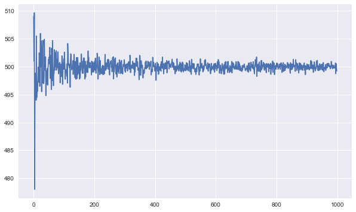
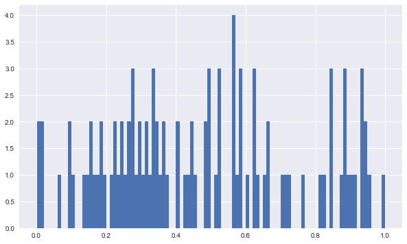
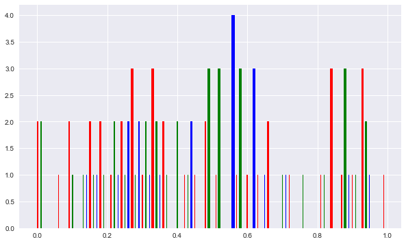
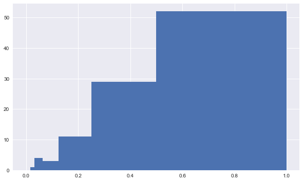
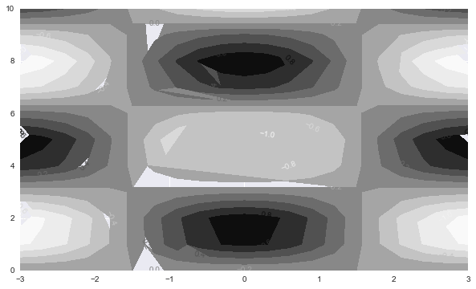

import numpy as np
import numpy.random as npr
from scipy.optimize import fsolve # finding roots
%matplotlib inline
from pylab import mpl, plt
from mpl_toolkits.mplot3d import Axes3D # surface plot
plt.style.use('seaborn')
plt.rcParams['figure.figsize'] = (10, 6)
from scipy import optimize
dir(optimize)
['BFGS',
'Bounds',
'HessianUpdateStrategy',
'LbfgsInvHessProduct',
'LinearConstraint',
'NonlinearConstraint',
'OptimizeResult',
'OptimizeWarning',
'RootResults',
'SR1',
'__all__',
'__builtins__',
'__cached__',
'__doc__',
'__file__',
'__loader__',
'__name__',
'__nnls',
'__package__',
'__path__',
'__spec__',
'_basinhopping',
'_bglu_dense',
'_cobyla',
'_constraints',
'_differentiable_functions',
'_differentialevolution',
'_dual_annealing',
'_group_columns',
'_hessian_update_strategy',
'_highs',
'_lbfgsb',
'_linprog',
'_linprog_doc',
'_linprog_highs',
'_linprog_ip',
'_linprog_rs',
'_linprog_simplex',
'_linprog_util',
'_lsap',
'_lsap_module',
'_lsq',
'_minimize',
'_minpack',
'_nnls',
'_numdiff',
'_qap',
'_remove_redundancy',
'_root',
'_root_scalar',
'_shgo',
'_shgo_lib',
'_slsqp',
'_spectral',
'_trlib',
'_trustregion',
'_trustregion_constr',
'_trustregion_dogleg',
'_trustregion_exact',
'_trustregion_krylov',
'_trustregion_ncg',
'_zeros',
'anderson',
'approx_fprime',
'basinhopping',
'bisect',
'bracket',
'brent',
'brenth',
'brentq',
'broyden1',
'broyden2',
'brute',
'check_grad',
'cobyla',
'curve_fit',
'diagbroyden',
'differential_evolution',
'dual_annealing',
'excitingmixing',
'fixed_point',
'fmin',
'fmin_bfgs',
'fmin_cg',
'fmin_cobyla',
'fmin_l_bfgs_b',
'fmin_ncg',
'fmin_powell',
'fmin_slsqp',
'fmin_tnc',
'fminbound',
'fsolve',
'golden',
'lbfgsb',
'least_squares',
'leastsq',
'line_search',
'linear_sum_assignment',
'linearmixing',
'linesearch',
'linprog',
'linprog_verbose_callback',
'lsq_linear',
'minimize',
'minimize_scalar',
'minpack',
'minpack2',
'moduleTNC',
'newton',
'newton_krylov',
'nnls',
'nonlin',
'optimize',
'quadratic_assignment',
'ridder',
'root',
'root_scalar',
'rosen',
'rosen_der',
'rosen_hess',
'rosen_hess_prod',
'shgo',
'show_options',
'slsqp',
'test',
'tnc',
'toms748',
'zeros']
help(optimize)
Help on package scipy.optimize in scipy:
NAME
scipy.optimize
DESCRIPTION
=====================================================
Optimization and root finding (:mod:`scipy.optimize`)
=====================================================
.. currentmodule:: scipy.optimize
SciPy ``optimize`` provides functions for minimizing (or maximizing)
objective functions, possibly subject to constraints. It includes
solvers for nonlinear problems (with support for both local and global
optimization algorithms), linear programing, constrained
and nonlinear least-squares, root finding, and curve fitting.
Common functions and objects, shared across different solvers, are:
.. autosummary::
:toctree: generated/
show_options - Show specific options optimization solvers.
OptimizeResult - The optimization result returned by some optimizers.
OptimizeWarning - The optimization encountered problems.
Optimization
============
Scalar functions optimization
-----------------------------
.. autosummary::
:toctree: generated/
minimize_scalar - Interface for minimizers of univariate functions
The `minimize_scalar` function supports the following methods:
.. toctree::
optimize.minimize_scalar-brent
optimize.minimize_scalar-bounded
optimize.minimize_scalar-golden
Local (multivariate) optimization
---------------------------------
.. autosummary::
:toctree: generated/
minimize - Interface for minimizers of multivariate functions.
The `minimize` function supports the following methods:
.. toctree::
optimize.minimize-neldermead
optimize.minimize-powell
optimize.minimize-cg
optimize.minimize-bfgs
optimize.minimize-newtoncg
optimize.minimize-lbfgsb
optimize.minimize-tnc
optimize.minimize-cobyla
optimize.minimize-slsqp
optimize.minimize-trustconstr
optimize.minimize-dogleg
optimize.minimize-trustncg
optimize.minimize-trustkrylov
optimize.minimize-trustexact
Constraints are passed to `minimize` function as a single object or
as a list of objects from the following classes:
.. autosummary::
:toctree: generated/
NonlinearConstraint - Class defining general nonlinear constraints.
LinearConstraint - Class defining general linear constraints.
Simple bound constraints are handled separately and there is a special class
for them:
.. autosummary::
:toctree: generated/
Bounds - Bound constraints.
Quasi-Newton strategies implementing `HessianUpdateStrategy`
interface can be used to approximate the Hessian in `minimize`
function (available only for the 'trust-constr' method). Available
quasi-Newton methods implementing this interface are:
.. autosummary::
:toctree: generated/
BFGS - Broyden-Fletcher-Goldfarb-Shanno (BFGS) Hessian update strategy.
SR1 - Symmetric-rank-1 Hessian update strategy.
Global optimization
-------------------
.. autosummary::
:toctree: generated/
basinhopping - Basinhopping stochastic optimizer.
brute - Brute force searching optimizer.
differential_evolution - stochastic minimization using differential evolution.
shgo - simplicial homology global optimisation
dual_annealing - Dual annealing stochastic optimizer.
Least-squares and curve fitting
===============================
Nonlinear least-squares
-----------------------
.. autosummary::
:toctree: generated/
least_squares - Solve a nonlinear least-squares problem with bounds on the variables.
Linear least-squares
--------------------
.. autosummary::
:toctree: generated/
nnls - Linear least-squares problem with non-negativity constraint.
lsq_linear - Linear least-squares problem with bound constraints.
Curve fitting
-------------
.. autosummary::
:toctree: generated/
curve_fit -- Fit curve to a set of points.
Root finding
============
Scalar functions
----------------
.. autosummary::
:toctree: generated/
root_scalar - Unified interface for nonlinear solvers of scalar functions.
brentq - quadratic interpolation Brent method.
brenth - Brent method, modified by Harris with hyperbolic extrapolation.
ridder - Ridder's method.
bisect - Bisection method.
newton - Newton's method (also Secant and Halley's methods).
toms748 - Alefeld, Potra & Shi Algorithm 748.
RootResults - The root finding result returned by some root finders.
The `root_scalar` function supports the following methods:
.. toctree::
optimize.root_scalar-brentq
optimize.root_scalar-brenth
optimize.root_scalar-bisect
optimize.root_scalar-ridder
optimize.root_scalar-newton
optimize.root_scalar-toms748
optimize.root_scalar-secant
optimize.root_scalar-halley
The table below lists situations and appropriate methods, along with
*asymptotic* convergence rates per iteration (and per function evaluation)
for successful convergence to a simple root(*).
Bisection is the slowest of them all, adding one bit of accuracy for each
function evaluation, but is guaranteed to converge.
The other bracketing methods all (eventually) increase the number of accurate
bits by about 50% for every function evaluation.
The derivative-based methods, all built on `newton`, can converge quite quickly
if the initial value is close to the root. They can also be applied to
functions defined on (a subset of) the complex plane.
+-------------+----------+----------+-----------+-------------+-------------+----------------+
| Domain of f | Bracket? | Derivatives? | Solvers | Convergence |
+ + +----------+-----------+ +-------------+----------------+
| | | `fprime` | `fprime2` | | Guaranteed? | Rate(s)(*) |
+=============+==========+==========+===========+=============+=============+================+
| `R` | Yes | N/A | N/A | - bisection | - Yes | - 1 "Linear" |
| | | | | - brentq | - Yes | - >=1, <= 1.62 |
| | | | | - brenth | - Yes | - >=1, <= 1.62 |
| | | | | - ridder | - Yes | - 2.0 (1.41) |
| | | | | - toms748 | - Yes | - 2.7 (1.65) |
+-------------+----------+----------+-----------+-------------+-------------+----------------+
| `R` or `C` | No | No | No | secant | No | 1.62 (1.62) |
+-------------+----------+----------+-----------+-------------+-------------+----------------+
| `R` or `C` | No | Yes | No | newton | No | 2.00 (1.41) |
+-------------+----------+----------+-----------+-------------+-------------+----------------+
| `R` or `C` | No | Yes | Yes | halley | No | 3.00 (1.44) |
+-------------+----------+----------+-----------+-------------+-------------+----------------+
.. seealso::
`scipy.optimize.cython_optimize` -- Typed Cython versions of zeros functions
Fixed point finding:
.. autosummary::
:toctree: generated/
fixed_point - Single-variable fixed-point solver.
Multidimensional
----------------
.. autosummary::
:toctree: generated/
root - Unified interface for nonlinear solvers of multivariate functions.
The `root` function supports the following methods:
.. toctree::
optimize.root-hybr
optimize.root-lm
optimize.root-broyden1
optimize.root-broyden2
optimize.root-anderson
optimize.root-linearmixing
optimize.root-diagbroyden
optimize.root-excitingmixing
optimize.root-krylov
optimize.root-dfsane
Linear programming
==================
.. autosummary::
:toctree: generated/
linprog -- Unified interface for minimizers of linear programming problems.
The `linprog` function supports the following methods:
.. toctree::
optimize.linprog-simplex
optimize.linprog-interior-point
optimize.linprog-revised_simplex
optimize.linprog-highs-ipm
optimize.linprog-highs-ds
optimize.linprog-highs
The simplex, interior-point, and revised simplex methods support callback
functions, such as:
.. autosummary::
:toctree: generated/
linprog_verbose_callback -- Sample callback function for linprog (simplex).
Assignment problems
===================
.. autosummary::
:toctree: generated/
linear_sum_assignment -- Solves the linear-sum assignment problem.
quadratic_assignment -- Solves the quadratic assignment problem.
The `quadratic_assignment` function supports the following methods:
.. toctree::
optimize.qap-faq
optimize.qap-2opt
Utilities
=========
Finite-difference approximation
-------------------------------
.. autosummary::
:toctree: generated/
approx_fprime - Approximate the gradient of a scalar function.
check_grad - Check the supplied derivative using finite differences.
Line search
-----------
.. autosummary::
:toctree: generated/
bracket - Bracket a minimum, given two starting points.
line_search - Return a step that satisfies the strong Wolfe conditions.
Hessian approximation
---------------------
.. autosummary::
:toctree: generated/
LbfgsInvHessProduct - Linear operator for L-BFGS approximate inverse Hessian.
HessianUpdateStrategy - Interface for implementing Hessian update strategies
Benchmark problems
------------------
.. autosummary::
:toctree: generated/
rosen - The Rosenbrock function.
rosen_der - The derivative of the Rosenbrock function.
rosen_hess - The Hessian matrix of the Rosenbrock function.
rosen_hess_prod - Product of the Rosenbrock Hessian with a vector.
Legacy functions
================
The functions below are not recommended for use in new scripts;
all of these methods are accessible via a newer, more consistent
interfaces, provided by the interfaces above.
Optimization
------------
General-purpose multivariate methods:
.. autosummary::
:toctree: generated/
fmin - Nelder-Mead Simplex algorithm.
fmin_powell - Powell's (modified) level set method.
fmin_cg - Non-linear (Polak-Ribiere) conjugate gradient algorithm.
fmin_bfgs - Quasi-Newton method (Broydon-Fletcher-Goldfarb-Shanno).
fmin_ncg - Line-search Newton Conjugate Gradient.
Constrained multivariate methods:
.. autosummary::
:toctree: generated/
fmin_l_bfgs_b - Zhu, Byrd, and Nocedal's constrained optimizer.
fmin_tnc - Truncated Newton code.
fmin_cobyla - Constrained optimization by linear approximation.
fmin_slsqp - Minimization using sequential least-squares programming.
Univariate (scalar) minimization methods:
.. autosummary::
:toctree: generated/
fminbound - Bounded minimization of a scalar function.
brent - 1-D function minimization using Brent method.
golden - 1-D function minimization using Golden Section method.
Least-squares
-------------
.. autosummary::
:toctree: generated/
leastsq - Minimize the sum of squares of M equations in N unknowns.
Root finding
------------
General nonlinear solvers:
.. autosummary::
:toctree: generated/
fsolve - Non-linear multivariable equation solver.
broyden1 - Broyden's first method.
broyden2 - Broyden's second method.
Large-scale nonlinear solvers:
.. autosummary::
:toctree: generated/
newton_krylov
anderson
Simple iteration solvers:
.. autosummary::
:toctree: generated/
excitingmixing
linearmixing
diagbroyden
:mod:`Additional information on the nonlinear solvers <scipy.optimize.nonlin>`
PACKAGE CONTENTS
__nnls
_basinhopping
_bglu_dense
_cobyla
_constraints
_differentiable_functions
_differentialevolution
_dual_annealing
_group_columns
_hessian_update_strategy
_highs (package)
_lbfgsb
_linprog
_linprog_doc
_linprog_highs
_linprog_ip
_linprog_rs
_linprog_simplex
_linprog_util
_lsap
_lsap_module
_lsq (package)
_minimize
_minpack
_nnls
_numdiff
_qap
_remove_redundancy
_root
_root_scalar
_shgo
_shgo_lib (package)
_slsqp
_spectral
_trlib (package)
_trustregion
_trustregion_constr (package)
_trustregion_dogleg
_trustregion_exact
_trustregion_krylov
_trustregion_ncg
_tstutils
_zeros
cobyla
cython_optimize (package)
lbfgsb
linesearch
minpack
minpack2
moduleTNC
nonlin
optimize
setup
slsqp
tests (package)
tnc
zeros
CLASSES
builtins.UserWarning(builtins.Warning)
scipy.optimize.optimize.OptimizeWarning
builtins.dict(builtins.object)
scipy.optimize.optimize.OptimizeResult
builtins.object
scipy.optimize._constraints.Bounds
scipy.optimize._constraints.LinearConstraint
scipy.optimize._constraints.NonlinearConstraint
scipy.optimize._hessian_update_strategy.HessianUpdateStrategy
scipy.optimize.zeros.RootResults
scipy.optimize._hessian_update_strategy.FullHessianUpdateStrategy(scipy.optimize._hessian_update_strategy.HessianUpdateStrategy)
scipy.optimize._hessian_update_strategy.BFGS
scipy.optimize._hessian_update_strategy.SR1
scipy.sparse.linalg.interface.LinearOperator(builtins.object)
scipy.optimize.lbfgsb.LbfgsInvHessProduct
class BFGS(FullHessianUpdateStrategy)
| BFGS(exception_strategy='skip_update', min_curvature=None, init_scale='auto')
|
| Broyden-Fletcher-Goldfarb-Shanno (BFGS) Hessian update strategy.
|
| Parameters
| ----------
| exception_strategy : {'skip_update', 'damp_update'}, optional
| Define how to proceed when the curvature condition is violated.
| Set it to 'skip_update' to just skip the update. Or, alternatively,
| set it to 'damp_update' to interpolate between the actual BFGS
| result and the unmodified matrix. Both exceptions strategies
| are explained in [1]_, p.536-537.
| min_curvature : float
| This number, scaled by a normalization factor, defines the
| minimum curvature ``dot(delta_grad, delta_x)`` allowed to go
| unaffected by the exception strategy. By default is equal to
| 1e-8 when ``exception_strategy = 'skip_update'`` and equal
| to 0.2 when ``exception_strategy = 'damp_update'``.
| init_scale : {float, 'auto'}
| Matrix scale at first iteration. At the first
| iteration the Hessian matrix or its inverse will be initialized
| with ``init_scale*np.eye(n)``, where ``n`` is the problem dimension.
| Set it to 'auto' in order to use an automatic heuristic for choosing
| the initial scale. The heuristic is described in [1]_, p.143.
| By default uses 'auto'.
|
| Notes
| -----
| The update is based on the description in [1]_, p.140.
|
| References
| ----------
| .. [1] Nocedal, Jorge, and Stephen J. Wright. "Numerical optimization"
| Second Edition (2006).
|
| Method resolution order:
| BFGS
| FullHessianUpdateStrategy
| HessianUpdateStrategy
| builtins.object
|
| Methods defined here:
|
| __init__(self, exception_strategy='skip_update', min_curvature=None, init_scale='auto')
| Initialize self. See help(type(self)) for accurate signature.
|
| ----------------------------------------------------------------------
| Methods inherited from FullHessianUpdateStrategy:
|
| dot(self, p)
| Compute the product of the internal matrix with the given vector.
|
| Parameters
| ----------
| p : array_like
| 1-D array representing a vector.
|
| Returns
| -------
| Hp : array
| 1-D represents the result of multiplying the approximation matrix
| by vector p.
|
| get_matrix(self)
| Return the current internal matrix.
|
| Returns
| -------
| M : ndarray, shape (n, n)
| Dense matrix containing either the Hessian or its inverse
| (depending on how `approx_type` was defined).
|
| initialize(self, n, approx_type)
| Initialize internal matrix.
|
| Allocate internal memory for storing and updating
| the Hessian or its inverse.
|
| Parameters
| ----------
| n : int
| Problem dimension.
| approx_type : {'hess', 'inv_hess'}
| Selects either the Hessian or the inverse Hessian.
| When set to 'hess' the Hessian will be stored and updated.
| When set to 'inv_hess' its inverse will be used instead.
|
| update(self, delta_x, delta_grad)
| Update internal matrix.
|
| Update Hessian matrix or its inverse (depending on how 'approx_type'
| is defined) using information about the last evaluated points.
|
| Parameters
| ----------
| delta_x : ndarray
| The difference between two points the gradient
| function have been evaluated at: ``delta_x = x2 - x1``.
| delta_grad : ndarray
| The difference between the gradients:
| ``delta_grad = grad(x2) - grad(x1)``.
|
| ----------------------------------------------------------------------
| Data descriptors inherited from HessianUpdateStrategy:
|
| __dict__
| dictionary for instance variables (if defined)
|
| __weakref__
| list of weak references to the object (if defined)
class Bounds(builtins.object)
| Bounds(lb, ub, keep_feasible=False)
|
| Bounds constraint on the variables.
|
| The constraint has the general inequality form::
|
| lb <= x <= ub
|
| It is possible to use equal bounds to represent an equality constraint or
| infinite bounds to represent a one-sided constraint.
|
| Parameters
| ----------
| lb, ub : array_like, optional
| Lower and upper bounds on independent variables. Each array must
| have the same size as x or be a scalar, in which case a bound will be
| the same for all the variables. Set components of `lb` and `ub` equal
| to fix a variable. Use ``np.inf`` with an appropriate sign to disable
| bounds on all or some variables. Note that you can mix constraints of
| different types: interval, one-sided or equality, by setting different
| components of `lb` and `ub` as necessary.
| keep_feasible : array_like of bool, optional
| Whether to keep the constraint components feasible throughout
| iterations. A single value set this property for all components.
| Default is False. Has no effect for equality constraints.
|
| Methods defined here:
|
| __init__(self, lb, ub, keep_feasible=False)
| Initialize self. See help(type(self)) for accurate signature.
|
| __repr__(self)
| Return repr(self).
|
| ----------------------------------------------------------------------
| Data descriptors defined here:
|
| __dict__
| dictionary for instance variables (if defined)
|
| __weakref__
| list of weak references to the object (if defined)
class HessianUpdateStrategy(builtins.object)
| Interface for implementing Hessian update strategies.
|
| Many optimization methods make use of Hessian (or inverse Hessian)
| approximations, such as the quasi-Newton methods BFGS, SR1, L-BFGS.
| Some of these approximations, however, do not actually need to store
| the entire matrix or can compute the internal matrix product with a
| given vector in a very efficiently manner. This class serves as an
| abstract interface between the optimization algorithm and the
| quasi-Newton update strategies, giving freedom of implementation
| to store and update the internal matrix as efficiently as possible.
| Different choices of initialization and update procedure will result
| in different quasi-Newton strategies.
|
| Four methods should be implemented in derived classes: ``initialize``,
| ``update``, ``dot`` and ``get_matrix``.
|
| Notes
| -----
| Any instance of a class that implements this interface,
| can be accepted by the method ``minimize`` and used by
| the compatible solvers to approximate the Hessian (or
| inverse Hessian) used by the optimization algorithms.
|
| Methods defined here:
|
| dot(self, p)
| Compute the product of the internal matrix with the given vector.
|
| Parameters
| ----------
| p : array_like
| 1-D array representing a vector.
|
| Returns
| -------
| Hp : array
| 1-D represents the result of multiplying the approximation matrix
| by vector p.
|
| get_matrix(self)
| Return current internal matrix.
|
| Returns
| -------
| H : ndarray, shape (n, n)
| Dense matrix containing either the Hessian
| or its inverse (depending on how 'approx_type'
| is defined).
|
| initialize(self, n, approx_type)
| Initialize internal matrix.
|
| Allocate internal memory for storing and updating
| the Hessian or its inverse.
|
| Parameters
| ----------
| n : int
| Problem dimension.
| approx_type : {'hess', 'inv_hess'}
| Selects either the Hessian or the inverse Hessian.
| When set to 'hess' the Hessian will be stored and updated.
| When set to 'inv_hess' its inverse will be used instead.
|
| update(self, delta_x, delta_grad)
| Update internal matrix.
|
| Update Hessian matrix or its inverse (depending on how 'approx_type'
| is defined) using information about the last evaluated points.
|
| Parameters
| ----------
| delta_x : ndarray
| The difference between two points the gradient
| function have been evaluated at: ``delta_x = x2 - x1``.
| delta_grad : ndarray
| The difference between the gradients:
| ``delta_grad = grad(x2) - grad(x1)``.
|
| ----------------------------------------------------------------------
| Data descriptors defined here:
|
| __dict__
| dictionary for instance variables (if defined)
|
| __weakref__
| list of weak references to the object (if defined)
class LbfgsInvHessProduct(scipy.sparse.linalg.interface.LinearOperator)
| LbfgsInvHessProduct(*args, **kwargs)
|
| Linear operator for the L-BFGS approximate inverse Hessian.
|
| This operator computes the product of a vector with the approximate inverse
| of the Hessian of the objective function, using the L-BFGS limited
| memory approximation to the inverse Hessian, accumulated during the
| optimization.
|
| Objects of this class implement the ``scipy.sparse.linalg.LinearOperator``
| interface.
|
| Parameters
| ----------
| sk : array_like, shape=(n_corr, n)
| Array of `n_corr` most recent updates to the solution vector.
| (See [1]).
| yk : array_like, shape=(n_corr, n)
| Array of `n_corr` most recent updates to the gradient. (See [1]).
|
| References
| ----------
| .. [1] Nocedal, Jorge. "Updating quasi-Newton matrices with limited
| storage." Mathematics of computation 35.151 (1980): 773-782.
|
| Method resolution order:
| LbfgsInvHessProduct
| scipy.sparse.linalg.interface.LinearOperator
| builtins.object
|
| Methods defined here:
|
| __init__(self, sk, yk)
| Construct the operator.
|
| todense(self)
| Return a dense array representation of this operator.
|
| Returns
| -------
| arr : ndarray, shape=(n, n)
| An array with the same shape and containing
| the same data represented by this `LinearOperator`.
|
| ----------------------------------------------------------------------
| Methods inherited from scipy.sparse.linalg.interface.LinearOperator:
|
| __add__(self, x)
|
| __call__(self, x)
| Call self as a function.
|
| __matmul__(self, other)
|
| __mul__(self, x)
|
| __neg__(self)
|
| __pow__(self, p)
|
| __repr__(self)
| Return repr(self).
|
| __rmatmul__(self, other)
|
| __rmul__(self, x)
|
| __sub__(self, x)
|
| adjoint(self)
| Hermitian adjoint.
|
| Returns the Hermitian adjoint of self, aka the Hermitian
| conjugate or Hermitian transpose. For a complex matrix, the
| Hermitian adjoint is equal to the conjugate transpose.
|
| Can be abbreviated self.H instead of self.adjoint().
|
| Returns
| -------
| A_H : LinearOperator
| Hermitian adjoint of self.
|
| dot(self, x)
| Matrix-matrix or matrix-vector multiplication.
|
| Parameters
| ----------
| x : array_like
| 1-d or 2-d array, representing a vector or matrix.
|
| Returns
| -------
| Ax : array
| 1-d or 2-d array (depending on the shape of x) that represents
| the result of applying this linear operator on x.
|
| matmat(self, X)
| Matrix-matrix multiplication.
|
| Performs the operation y=A*X where A is an MxN linear
| operator and X dense N*K matrix or ndarray.
|
| Parameters
| ----------
| X : {matrix, ndarray}
| An array with shape (N,K).
|
| Returns
| -------
| Y : {matrix, ndarray}
| A matrix or ndarray with shape (M,K) depending on
| the type of the X argument.
|
| Notes
| -----
| This matmat wraps any user-specified matmat routine or overridden
| _matmat method to ensure that y has the correct type.
|
| matvec(self, x)
| Matrix-vector multiplication.
|
| Performs the operation y=A*x where A is an MxN linear
| operator and x is a column vector or 1-d array.
|
| Parameters
| ----------
| x : {matrix, ndarray}
| An array with shape (N,) or (N,1).
|
| Returns
| -------
| y : {matrix, ndarray}
| A matrix or ndarray with shape (M,) or (M,1) depending
| on the type and shape of the x argument.
|
| Notes
| -----
| This matvec wraps the user-specified matvec routine or overridden
| _matvec method to ensure that y has the correct shape and type.
|
| rmatmat(self, X)
| Adjoint matrix-matrix multiplication.
|
| Performs the operation y = A^H * x where A is an MxN linear
| operator and x is a column vector or 1-d array, or 2-d array.
| The default implementation defers to the adjoint.
|
| Parameters
| ----------
| X : {matrix, ndarray}
| A matrix or 2D array.
|
| Returns
| -------
| Y : {matrix, ndarray}
| A matrix or 2D array depending on the type of the input.
|
| Notes
| -----
| This rmatmat wraps the user-specified rmatmat routine.
|
| rmatvec(self, x)
| Adjoint matrix-vector multiplication.
|
| Performs the operation y = A^H * x where A is an MxN linear
| operator and x is a column vector or 1-d array.
|
| Parameters
| ----------
| x : {matrix, ndarray}
| An array with shape (M,) or (M,1).
|
| Returns
| -------
| y : {matrix, ndarray}
| A matrix or ndarray with shape (N,) or (N,1) depending
| on the type and shape of the x argument.
|
| Notes
| -----
| This rmatvec wraps the user-specified rmatvec routine or overridden
| _rmatvec method to ensure that y has the correct shape and type.
|
| transpose(self)
| Transpose this linear operator.
|
| Returns a LinearOperator that represents the transpose of this one.
| Can be abbreviated self.T instead of self.transpose().
|
| ----------------------------------------------------------------------
| Static methods inherited from scipy.sparse.linalg.interface.LinearOperator:
|
| __new__(cls, *args, **kwargs)
| Create and return a new object. See help(type) for accurate signature.
|
| ----------------------------------------------------------------------
| Readonly properties inherited from scipy.sparse.linalg.interface.LinearOperator:
|
| H
| Hermitian adjoint.
|
| Returns the Hermitian adjoint of self, aka the Hermitian
| conjugate or Hermitian transpose. For a complex matrix, the
| Hermitian adjoint is equal to the conjugate transpose.
|
| Can be abbreviated self.H instead of self.adjoint().
|
| Returns
| -------
| A_H : LinearOperator
| Hermitian adjoint of self.
|
| T
| Transpose this linear operator.
|
| Returns a LinearOperator that represents the transpose of this one.
| Can be abbreviated self.T instead of self.transpose().
|
| ----------------------------------------------------------------------
| Data descriptors inherited from scipy.sparse.linalg.interface.LinearOperator:
|
| __dict__
| dictionary for instance variables (if defined)
|
| __weakref__
| list of weak references to the object (if defined)
|
| ----------------------------------------------------------------------
| Data and other attributes inherited from scipy.sparse.linalg.interface.LinearOperator:
|
| ndim = 2
class LinearConstraint(builtins.object)
| LinearConstraint(A, lb, ub, keep_feasible=False)
|
| Linear constraint on the variables.
|
| The constraint has the general inequality form::
|
| lb <= A.dot(x) <= ub
|
| Here the vector of independent variables x is passed as ndarray of shape
| (n,) and the matrix A has shape (m, n).
|
| It is possible to use equal bounds to represent an equality constraint or
| infinite bounds to represent a one-sided constraint.
|
| Parameters
| ----------
| A : {array_like, sparse matrix}, shape (m, n)
| Matrix defining the constraint.
| lb, ub : array_like
| Lower and upper bounds on the constraint. Each array must have the
| shape (m,) or be a scalar, in the latter case a bound will be the same
| for all components of the constraint. Use ``np.inf`` with an
| appropriate sign to specify a one-sided constraint.
| Set components of `lb` and `ub` equal to represent an equality
| constraint. Note that you can mix constraints of different types:
| interval, one-sided or equality, by setting different components of
| `lb` and `ub` as necessary.
| keep_feasible : array_like of bool, optional
| Whether to keep the constraint components feasible throughout
| iterations. A single value set this property for all components.
| Default is False. Has no effect for equality constraints.
|
| Methods defined here:
|
| __init__(self, A, lb, ub, keep_feasible=False)
| Initialize self. See help(type(self)) for accurate signature.
|
| ----------------------------------------------------------------------
| Data descriptors defined here:
|
| __dict__
| dictionary for instance variables (if defined)
|
| __weakref__
| list of weak references to the object (if defined)
class NonlinearConstraint(builtins.object)
| NonlinearConstraint(fun, lb, ub, jac='2-point', hess=<scipy.optimize._hessian_update_strategy.BFGS object at 0x7fc05cc40250>, keep_feasible=False, finite_diff_rel_step=None, finite_diff_jac_sparsity=None)
|
| Nonlinear constraint on the variables.
|
| The constraint has the general inequality form::
|
| lb <= fun(x) <= ub
|
| Here the vector of independent variables x is passed as ndarray of shape
| (n,) and ``fun`` returns a vector with m components.
|
| It is possible to use equal bounds to represent an equality constraint or
| infinite bounds to represent a one-sided constraint.
|
| Parameters
| ----------
| fun : callable
| The function defining the constraint.
| The signature is ``fun(x) -> array_like, shape (m,)``.
| lb, ub : array_like
| Lower and upper bounds on the constraint. Each array must have the
| shape (m,) or be a scalar, in the latter case a bound will be the same
| for all components of the constraint. Use ``np.inf`` with an
| appropriate sign to specify a one-sided constraint.
| Set components of `lb` and `ub` equal to represent an equality
| constraint. Note that you can mix constraints of different types:
| interval, one-sided or equality, by setting different components of
| `lb` and `ub` as necessary.
| jac : {callable, '2-point', '3-point', 'cs'}, optional
| Method of computing the Jacobian matrix (an m-by-n matrix,
| where element (i, j) is the partial derivative of f[i] with
| respect to x[j]). The keywords {'2-point', '3-point',
| 'cs'} select a finite difference scheme for the numerical estimation.
| A callable must have the following signature:
| ``jac(x) -> {ndarray, sparse matrix}, shape (m, n)``.
| Default is '2-point'.
| hess : {callable, '2-point', '3-point', 'cs', HessianUpdateStrategy, None}, optional
| Method for computing the Hessian matrix. The keywords
| {'2-point', '3-point', 'cs'} select a finite difference scheme for
| numerical estimation. Alternatively, objects implementing
| `HessianUpdateStrategy` interface can be used to approximate the
| Hessian. Currently available implementations are:
|
| - `BFGS` (default option)
| - `SR1`
|
| A callable must return the Hessian matrix of ``dot(fun, v)`` and
| must have the following signature:
| ``hess(x, v) -> {LinearOperator, sparse matrix, array_like}, shape (n, n)``.
| Here ``v`` is ndarray with shape (m,) containing Lagrange multipliers.
| keep_feasible : array_like of bool, optional
| Whether to keep the constraint components feasible throughout
| iterations. A single value set this property for all components.
| Default is False. Has no effect for equality constraints.
| finite_diff_rel_step: None or array_like, optional
| Relative step size for the finite difference approximation. Default is
| None, which will select a reasonable value automatically depending
| on a finite difference scheme.
| finite_diff_jac_sparsity: {None, array_like, sparse matrix}, optional
| Defines the sparsity structure of the Jacobian matrix for finite
| difference estimation, its shape must be (m, n). If the Jacobian has
| only few non-zero elements in *each* row, providing the sparsity
| structure will greatly speed up the computations. A zero entry means
| that a corresponding element in the Jacobian is identically zero.
| If provided, forces the use of 'lsmr' trust-region solver.
| If None (default) then dense differencing will be used.
|
| Notes
| -----
| Finite difference schemes {'2-point', '3-point', 'cs'} may be used for
| approximating either the Jacobian or the Hessian. We, however, do not allow
| its use for approximating both simultaneously. Hence whenever the Jacobian
| is estimated via finite-differences, we require the Hessian to be estimated
| using one of the quasi-Newton strategies.
|
| The scheme 'cs' is potentially the most accurate, but requires the function
| to correctly handles complex inputs and be analytically continuable to the
| complex plane. The scheme '3-point' is more accurate than '2-point' but
| requires twice as many operations.
|
| Examples
| --------
| Constrain ``x[0] < sin(x[1]) + 1.9``
|
| >>> from scipy.optimize import NonlinearConstraint
| >>> con = lambda x: x[0] - np.sin(x[1])
| >>> nlc = NonlinearConstraint(con, -np.inf, 1.9)
|
| Methods defined here:
|
| __init__(self, fun, lb, ub, jac='2-point', hess=<scipy.optimize._hessian_update_strategy.BFGS object at 0x7fc05cc40250>, keep_feasible=False, finite_diff_rel_step=None, finite_diff_jac_sparsity=None)
| Initialize self. See help(type(self)) for accurate signature.
|
| ----------------------------------------------------------------------
| Data descriptors defined here:
|
| __dict__
| dictionary for instance variables (if defined)
|
| __weakref__
| list of weak references to the object (if defined)
class OptimizeResult(builtins.dict)
| Represents the optimization result.
|
| Attributes
| ----------
| x : ndarray
| The solution of the optimization.
| success : bool
| Whether or not the optimizer exited successfully.
| status : int
| Termination status of the optimizer. Its value depends on the
| underlying solver. Refer to `message` for details.
| message : str
| Description of the cause of the termination.
| fun, jac, hess: ndarray
| Values of objective function, its Jacobian and its Hessian (if
| available). The Hessians may be approximations, see the documentation
| of the function in question.
| hess_inv : object
| Inverse of the objective function's Hessian; may be an approximation.
| Not available for all solvers. The type of this attribute may be
| either np.ndarray or scipy.sparse.linalg.LinearOperator.
| nfev, njev, nhev : int
| Number of evaluations of the objective functions and of its
| Jacobian and Hessian.
| nit : int
| Number of iterations performed by the optimizer.
| maxcv : float
| The maximum constraint violation.
|
| Notes
| -----
| There may be additional attributes not listed above depending of the
| specific solver. Since this class is essentially a subclass of dict
| with attribute accessors, one can see which attributes are available
| using the `keys()` method.
|
| Method resolution order:
| OptimizeResult
| builtins.dict
| builtins.object
|
| Methods defined here:
|
| __delattr__ = __delitem__(self, key, /)
|
| __dir__(self)
| Default dir() implementation.
|
| __getattr__(self, name)
|
| __repr__(self)
| Return repr(self).
|
| __setattr__ = __setitem__(self, key, value, /)
|
| ----------------------------------------------------------------------
| Data descriptors defined here:
|
| __dict__
| dictionary for instance variables (if defined)
|
| __weakref__
| list of weak references to the object (if defined)
|
| ----------------------------------------------------------------------
| Methods inherited from builtins.dict:
|
| __contains__(self, key, /)
| True if the dictionary has the specified key, else False.
|
| __delitem__(self, key, /)
| Delete self[key].
|
| __eq__(self, value, /)
| Return self==value.
|
| __ge__(self, value, /)
| Return self>=value.
|
| __getattribute__(self, name, /)
| Return getattr(self, name).
|
| __getitem__(...)
| x.__getitem__(y) <==> x[y]
|
| __gt__(self, value, /)
| Return self>value.
|
| __init__(self, /, *args, **kwargs)
| Initialize self. See help(type(self)) for accurate signature.
|
| __iter__(self, /)
| Implement iter(self).
|
| __le__(self, value, /)
| Return self<=value.
|
| __len__(self, /)
| Return len(self).
|
| __lt__(self, value, /)
| Return self<value.
|
| __ne__(self, value, /)
| Return self!=value.
|
| __reversed__(self, /)
| Return a reverse iterator over the dict keys.
|
| __setitem__(self, key, value, /)
| Set self[key] to value.
|
| __sizeof__(...)
| D.__sizeof__() -> size of D in memory, in bytes
|
| clear(...)
| D.clear() -> None. Remove all items from D.
|
| copy(...)
| D.copy() -> a shallow copy of D
|
| get(self, key, default=None, /)
| Return the value for key if key is in the dictionary, else default.
|
| items(...)
| D.items() -> a set-like object providing a view on D's items
|
| keys(...)
| D.keys() -> a set-like object providing a view on D's keys
|
| pop(...)
| D.pop(k[,d]) -> v, remove specified key and return the corresponding value.
| If key is not found, d is returned if given, otherwise KeyError is raised
|
| popitem(self, /)
| Remove and return a (key, value) pair as a 2-tuple.
|
| Pairs are returned in LIFO (last-in, first-out) order.
| Raises KeyError if the dict is empty.
|
| setdefault(self, key, default=None, /)
| Insert key with a value of default if key is not in the dictionary.
|
| Return the value for key if key is in the dictionary, else default.
|
| update(...)
| D.update([E, ]**F) -> None. Update D from dict/iterable E and F.
| If E is present and has a .keys() method, then does: for k in E: D[k] = E[k]
| If E is present and lacks a .keys() method, then does: for k, v in E: D[k] = v
| In either case, this is followed by: for k in F: D[k] = F[k]
|
| values(...)
| D.values() -> an object providing a view on D's values
|
| ----------------------------------------------------------------------
| Class methods inherited from builtins.dict:
|
| fromkeys(iterable, value=None, /) from builtins.type
| Create a new dictionary with keys from iterable and values set to value.
|
| ----------------------------------------------------------------------
| Static methods inherited from builtins.dict:
|
| __new__(*args, **kwargs) from builtins.type
| Create and return a new object. See help(type) for accurate signature.
|
| ----------------------------------------------------------------------
| Data and other attributes inherited from builtins.dict:
|
| __hash__ = None
class OptimizeWarning(builtins.UserWarning)
| Base class for warnings generated by user code.
|
| Method resolution order:
| OptimizeWarning
| builtins.UserWarning
| builtins.Warning
| builtins.Exception
| builtins.BaseException
| builtins.object
|
| Data descriptors defined here:
|
| __weakref__
| list of weak references to the object (if defined)
|
| ----------------------------------------------------------------------
| Methods inherited from builtins.UserWarning:
|
| __init__(self, /, *args, **kwargs)
| Initialize self. See help(type(self)) for accurate signature.
|
| ----------------------------------------------------------------------
| Static methods inherited from builtins.UserWarning:
|
| __new__(*args, **kwargs) from builtins.type
| Create and return a new object. See help(type) for accurate signature.
|
| ----------------------------------------------------------------------
| Methods inherited from builtins.BaseException:
|
| __delattr__(self, name, /)
| Implement delattr(self, name).
|
| __getattribute__(self, name, /)
| Return getattr(self, name).
|
| __reduce__(...)
| Helper for pickle.
|
| __repr__(self, /)
| Return repr(self).
|
| __setattr__(self, name, value, /)
| Implement setattr(self, name, value).
|
| __setstate__(...)
|
| __str__(self, /)
| Return str(self).
|
| with_traceback(...)
| Exception.with_traceback(tb) --
| set self.__traceback__ to tb and return self.
|
| ----------------------------------------------------------------------
| Data descriptors inherited from builtins.BaseException:
|
| __cause__
| exception cause
|
| __context__
| exception context
|
| __dict__
|
| __suppress_context__
|
| __traceback__
|
| args
class RootResults(builtins.object)
| RootResults(root, iterations, function_calls, flag)
|
| Represents the root finding result.
|
| Attributes
| ----------
| root : float
| Estimated root location.
| iterations : int
| Number of iterations needed to find the root.
| function_calls : int
| Number of times the function was called.
| converged : bool
| True if the routine converged.
| flag : str
| Description of the cause of termination.
|
| Methods defined here:
|
| __init__(self, root, iterations, function_calls, flag)
| Initialize self. See help(type(self)) for accurate signature.
|
| __repr__(self)
| Return repr(self).
|
| ----------------------------------------------------------------------
| Data descriptors defined here:
|
| __dict__
| dictionary for instance variables (if defined)
|
| __weakref__
| list of weak references to the object (if defined)
class SR1(FullHessianUpdateStrategy)
| SR1(min_denominator=1e-08, init_scale='auto')
|
| Symmetric-rank-1 Hessian update strategy.
|
| Parameters
| ----------
| min_denominator : float
| This number, scaled by a normalization factor,
| defines the minimum denominator magnitude allowed
| in the update. When the condition is violated we skip
| the update. By default uses ``1e-8``.
| init_scale : {float, 'auto'}, optional
| Matrix scale at first iteration. At the first
| iteration the Hessian matrix or its inverse will be initialized
| with ``init_scale*np.eye(n)``, where ``n`` is the problem dimension.
| Set it to 'auto' in order to use an automatic heuristic for choosing
| the initial scale. The heuristic is described in [1]_, p.143.
| By default uses 'auto'.
|
| Notes
| -----
| The update is based on the description in [1]_, p.144-146.
|
| References
| ----------
| .. [1] Nocedal, Jorge, and Stephen J. Wright. "Numerical optimization"
| Second Edition (2006).
|
| Method resolution order:
| SR1
| FullHessianUpdateStrategy
| HessianUpdateStrategy
| builtins.object
|
| Methods defined here:
|
| __init__(self, min_denominator=1e-08, init_scale='auto')
| Initialize self. See help(type(self)) for accurate signature.
|
| ----------------------------------------------------------------------
| Methods inherited from FullHessianUpdateStrategy:
|
| dot(self, p)
| Compute the product of the internal matrix with the given vector.
|
| Parameters
| ----------
| p : array_like
| 1-D array representing a vector.
|
| Returns
| -------
| Hp : array
| 1-D represents the result of multiplying the approximation matrix
| by vector p.
|
| get_matrix(self)
| Return the current internal matrix.
|
| Returns
| -------
| M : ndarray, shape (n, n)
| Dense matrix containing either the Hessian or its inverse
| (depending on how `approx_type` was defined).
|
| initialize(self, n, approx_type)
| Initialize internal matrix.
|
| Allocate internal memory for storing and updating
| the Hessian or its inverse.
|
| Parameters
| ----------
| n : int
| Problem dimension.
| approx_type : {'hess', 'inv_hess'}
| Selects either the Hessian or the inverse Hessian.
| When set to 'hess' the Hessian will be stored and updated.
| When set to 'inv_hess' its inverse will be used instead.
|
| update(self, delta_x, delta_grad)
| Update internal matrix.
|
| Update Hessian matrix or its inverse (depending on how 'approx_type'
| is defined) using information about the last evaluated points.
|
| Parameters
| ----------
| delta_x : ndarray
| The difference between two points the gradient
| function have been evaluated at: ``delta_x = x2 - x1``.
| delta_grad : ndarray
| The difference between the gradients:
| ``delta_grad = grad(x2) - grad(x1)``.
|
| ----------------------------------------------------------------------
| Data descriptors inherited from HessianUpdateStrategy:
|
| __dict__
| dictionary for instance variables (if defined)
|
| __weakref__
| list of weak references to the object (if defined)
FUNCTIONS
anderson(F, xin, iter=None, alpha=None, w0=0.01, M=5, verbose=False, maxiter=None, f_tol=None, f_rtol=None, x_tol=None, x_rtol=None, tol_norm=None, line_search='armijo', callback=None, **kw)
Find a root of a function, using (extended) Anderson mixing.
The Jacobian is formed by for a 'best' solution in the space
spanned by last `M` vectors. As a result, only a MxM matrix
inversions and MxN multiplications are required. [Ey]_
Parameters
----------
F : function(x) -> f
Function whose root to find; should take and return an array-like
object.
xin : array_like
Initial guess for the solution
alpha : float, optional
Initial guess for the Jacobian is (-1/alpha).
M : float, optional
Number of previous vectors to retain. Defaults to 5.
w0 : float, optional
Regularization parameter for numerical stability.
Compared to unity, good values of the order of 0.01.
iter : int, optional
Number of iterations to make. If omitted (default), make as many
as required to meet tolerances.
verbose : bool, optional
Print status to stdout on every iteration.
maxiter : int, optional
Maximum number of iterations to make. If more are needed to
meet convergence, `NoConvergence` is raised.
f_tol : float, optional
Absolute tolerance (in max-norm) for the residual.
If omitted, default is 6e-6.
f_rtol : float, optional
Relative tolerance for the residual. If omitted, not used.
x_tol : float, optional
Absolute minimum step size, as determined from the Jacobian
approximation. If the step size is smaller than this, optimization
is terminated as successful. If omitted, not used.
x_rtol : float, optional
Relative minimum step size. If omitted, not used.
tol_norm : function(vector) -> scalar, optional
Norm to use in convergence check. Default is the maximum norm.
line_search : {None, 'armijo' (default), 'wolfe'}, optional
Which type of a line search to use to determine the step size in the
direction given by the Jacobian approximation. Defaults to 'armijo'.
callback : function, optional
Optional callback function. It is called on every iteration as
``callback(x, f)`` where `x` is the current solution and `f`
the corresponding residual.
Returns
-------
sol : ndarray
An array (of similar array type as `x0`) containing the final solution.
Raises
------
NoConvergence
When a solution was not found.
See Also
--------
root : Interface to root finding algorithms for multivariate
functions. See ``method=='anderson'`` in particular.
References
----------
.. [Ey] V. Eyert, J. Comp. Phys., 124, 271 (1996).
Examples
--------
The following functions define a system of nonlinear equations
>>> def fun(x):
... return [x[0] + 0.5 * (x[0] - x[1])**3 - 1.0,
... 0.5 * (x[1] - x[0])**3 + x[1]]
A solution can be obtained as follows.
>>> from scipy import optimize
>>> sol = optimize.anderson(fun, [0, 0])
>>> sol
array([0.84116588, 0.15883789])
approx_fprime(xk, f, epsilon, *args)
Finite-difference approximation of the gradient of a scalar function.
Parameters
----------
xk : array_like
The coordinate vector at which to determine the gradient of `f`.
f : callable
The function of which to determine the gradient (partial derivatives).
Should take `xk` as first argument, other arguments to `f` can be
supplied in ``*args``. Should return a scalar, the value of the
function at `xk`.
epsilon : array_like
Increment to `xk` to use for determining the function gradient.
If a scalar, uses the same finite difference delta for all partial
derivatives. If an array, should contain one value per element of
`xk`.
\*args : args, optional
Any other arguments that are to be passed to `f`.
Returns
-------
grad : ndarray
The partial derivatives of `f` to `xk`.
See Also
--------
check_grad : Check correctness of gradient function against approx_fprime.
Notes
-----
The function gradient is determined by the forward finite difference
formula::
f(xk[i] + epsilon[i]) - f(xk[i])
f'[i] = ---------------------------------
epsilon[i]
The main use of `approx_fprime` is in scalar function optimizers like
`fmin_bfgs`, to determine numerically the Jacobian of a function.
Examples
--------
>>> from scipy import optimize
>>> def func(x, c0, c1):
... "Coordinate vector `x` should be an array of size two."
... return c0 * x[0]**2 + c1*x[1]**2
>>> x = np.ones(2)
>>> c0, c1 = (1, 200)
>>> eps = np.sqrt(np.finfo(float).eps)
>>> optimize.approx_fprime(x, func, [eps, np.sqrt(200) * eps], c0, c1)
array([ 2. , 400.00004198])
basinhopping(func, x0, niter=100, T=1.0, stepsize=0.5, minimizer_kwargs=None, take_step=None, accept_test=None, callback=None, interval=50, disp=False, niter_success=None, seed=None)
Find the global minimum of a function using the basin-hopping algorithm
Basin-hopping is a two-phase method that combines a global stepping
algorithm with local minimization at each step. Designed to mimic
the natural process of energy minimization of clusters of atoms, it works
well for similar problems with "funnel-like, but rugged" energy landscapes
[5]_.
As the step-taking, step acceptance, and minimization methods are all
customizable, this function can also be used to implement other two-phase
methods.
Parameters
----------
func : callable ``f(x, *args)``
Function to be optimized. ``args`` can be passed as an optional item
in the dict ``minimizer_kwargs``
x0 : array_like
Initial guess.
niter : integer, optional
The number of basin-hopping iterations. There will be a total of
``niter + 1`` runs of the local minimizer.
T : float, optional
The "temperature" parameter for the accept or reject criterion. Higher
"temperatures" mean that larger jumps in function value will be
accepted. For best results ``T`` should be comparable to the
separation (in function value) between local minima.
stepsize : float, optional
Maximum step size for use in the random displacement.
minimizer_kwargs : dict, optional
Extra keyword arguments to be passed to the local minimizer
``scipy.optimize.minimize()`` Some important options could be:
method : str
The minimization method (e.g. ``"L-BFGS-B"``)
args : tuple
Extra arguments passed to the objective function (``func``) and
its derivatives (Jacobian, Hessian).
take_step : callable ``take_step(x)``, optional
Replace the default step-taking routine with this routine. The default
step-taking routine is a random displacement of the coordinates, but
other step-taking algorithms may be better for some systems.
``take_step`` can optionally have the attribute ``take_step.stepsize``.
If this attribute exists, then ``basinhopping`` will adjust
``take_step.stepsize`` in order to try to optimize the global minimum
search.
accept_test : callable, ``accept_test(f_new=f_new, x_new=x_new, f_old=fold, x_old=x_old)``, optional
Define a test which will be used to judge whether or not to accept the
step. This will be used in addition to the Metropolis test based on
"temperature" ``T``. The acceptable return values are True,
False, or ``"force accept"``. If any of the tests return False
then the step is rejected. If the latter, then this will override any
other tests in order to accept the step. This can be used, for example,
to forcefully escape from a local minimum that ``basinhopping`` is
trapped in.
callback : callable, ``callback(x, f, accept)``, optional
A callback function which will be called for all minima found. ``x``
and ``f`` are the coordinates and function value of the trial minimum,
and ``accept`` is whether or not that minimum was accepted. This can
be used, for example, to save the lowest N minima found. Also,
``callback`` can be used to specify a user defined stop criterion by
optionally returning True to stop the ``basinhopping`` routine.
interval : integer, optional
interval for how often to update the ``stepsize``
disp : bool, optional
Set to True to print status messages
niter_success : integer, optional
Stop the run if the global minimum candidate remains the same for this
number of iterations.
seed : {int, `~np.random.RandomState`, `~np.random.Generator`}, optional
If `seed` is not specified the `~np.random.RandomState` singleton is
used.
If `seed` is an int, a new ``RandomState`` instance is used, seeded
with seed.
If `seed` is already a ``RandomState`` or ``Generator`` instance, then
that object is used.
Specify `seed` for repeatable minimizations. The random numbers
generated with this seed only affect the default Metropolis
`accept_test` and the default `take_step`. If you supply your own
`take_step` and `accept_test`, and these functions use random
number generation, then those functions are responsible for the state
of their random number generator.
Returns
-------
res : OptimizeResult
The optimization result represented as a ``OptimizeResult`` object.
Important attributes are: ``x`` the solution array, ``fun`` the value
of the function at the solution, and ``message`` which describes the
cause of the termination. The ``OptimizeResult`` object returned by the
selected minimizer at the lowest minimum is also contained within this
object and can be accessed through the ``lowest_optimization_result``
attribute. See `OptimizeResult` for a description of other attributes.
See Also
--------
minimize :
The local minimization function called once for each basinhopping step.
``minimizer_kwargs`` is passed to this routine.
Notes
-----
Basin-hopping is a stochastic algorithm which attempts to find the global
minimum of a smooth scalar function of one or more variables [1]_ [2]_ [3]_
[4]_. The algorithm in its current form was described by David Wales and
Jonathan Doye [2]_ http://www-wales.ch.cam.ac.uk/.
The algorithm is iterative with each cycle composed of the following
features
1) random perturbation of the coordinates
2) local minimization
3) accept or reject the new coordinates based on the minimized function
value
The acceptance test used here is the Metropolis criterion of standard Monte
Carlo algorithms, although there are many other possibilities [3]_.
This global minimization method has been shown to be extremely efficient
for a wide variety of problems in physics and chemistry. It is
particularly useful when the function has many minima separated by large
barriers. See the Cambridge Cluster Database
http://www-wales.ch.cam.ac.uk/CCD.html for databases of molecular systems
that have been optimized primarily using basin-hopping. This database
includes minimization problems exceeding 300 degrees of freedom.
See the free software program GMIN (http://www-wales.ch.cam.ac.uk/GMIN) for
a Fortran implementation of basin-hopping. This implementation has many
different variations of the procedure described above, including more
advanced step taking algorithms and alternate acceptance criterion.
For stochastic global optimization there is no way to determine if the true
global minimum has actually been found. Instead, as a consistency check,
the algorithm can be run from a number of different random starting points
to ensure the lowest minimum found in each example has converged to the
global minimum. For this reason, ``basinhopping`` will by default simply
run for the number of iterations ``niter`` and return the lowest minimum
found. It is left to the user to ensure that this is in fact the global
minimum.
Choosing ``stepsize``: This is a crucial parameter in ``basinhopping`` and
depends on the problem being solved. The step is chosen uniformly in the
region from x0-stepsize to x0+stepsize, in each dimension. Ideally, it
should be comparable to the typical separation (in argument values) between
local minima of the function being optimized. ``basinhopping`` will, by
default, adjust ``stepsize`` to find an optimal value, but this may take
many iterations. You will get quicker results if you set a sensible
initial value for ``stepsize``.
Choosing ``T``: The parameter ``T`` is the "temperature" used in the
Metropolis criterion. Basinhopping steps are always accepted if
``func(xnew) < func(xold)``. Otherwise, they are accepted with
probability::
exp( -(func(xnew) - func(xold)) / T )
So, for best results, ``T`` should to be comparable to the typical
difference (in function values) between local minima. (The height of
"walls" between local minima is irrelevant.)
If ``T`` is 0, the algorithm becomes Monotonic Basin-Hopping, in which all
steps that increase energy are rejected.
.. versionadded:: 0.12.0
References
----------
.. [1] Wales, David J. 2003, Energy Landscapes, Cambridge University Press,
Cambridge, UK.
.. [2] Wales, D J, and Doye J P K, Global Optimization by Basin-Hopping and
the Lowest Energy Structures of Lennard-Jones Clusters Containing up to
110 Atoms. Journal of Physical Chemistry A, 1997, 101, 5111.
.. [3] Li, Z. and Scheraga, H. A., Monte Carlo-minimization approach to the
multiple-minima problem in protein folding, Proc. Natl. Acad. Sci. USA,
1987, 84, 6611.
.. [4] Wales, D. J. and Scheraga, H. A., Global optimization of clusters,
crystals, and biomolecules, Science, 1999, 285, 1368.
.. [5] Olson, B., Hashmi, I., Molloy, K., and Shehu1, A., Basin Hopping as
a General and Versatile Optimization Framework for the Characterization
of Biological Macromolecules, Advances in Artificial Intelligence,
Volume 2012 (2012), Article ID 674832, :doi:`10.1155/2012/674832`
Examples
--------
The following example is a 1-D minimization problem, with many
local minima superimposed on a parabola.
>>> from scipy.optimize import basinhopping
>>> func = lambda x: np.cos(14.5 * x - 0.3) + (x + 0.2) * x
>>> x0=[1.]
Basinhopping, internally, uses a local minimization algorithm. We will use
the parameter ``minimizer_kwargs`` to tell basinhopping which algorithm to
use and how to set up that minimizer. This parameter will be passed to
``scipy.optimize.minimize()``.
>>> minimizer_kwargs = {"method": "BFGS"}
>>> ret = basinhopping(func, x0, minimizer_kwargs=minimizer_kwargs,
... niter=200)
>>> print("global minimum: x = %.4f, f(x0) = %.4f" % (ret.x, ret.fun))
global minimum: x = -0.1951, f(x0) = -1.0009
Next consider a 2-D minimization problem. Also, this time, we
will use gradient information to significantly speed up the search.
>>> def func2d(x):
... f = np.cos(14.5 * x[0] - 0.3) + (x[1] + 0.2) * x[1] + (x[0] +
... 0.2) * x[0]
... df = np.zeros(2)
... df[0] = -14.5 * np.sin(14.5 * x[0] - 0.3) + 2. * x[0] + 0.2
... df[1] = 2. * x[1] + 0.2
... return f, df
We'll also use a different local minimization algorithm. Also, we must tell
the minimizer that our function returns both energy and gradient (Jacobian).
>>> minimizer_kwargs = {"method":"L-BFGS-B", "jac":True}
>>> x0 = [1.0, 1.0]
>>> ret = basinhopping(func2d, x0, minimizer_kwargs=minimizer_kwargs,
... niter=200)
>>> print("global minimum: x = [%.4f, %.4f], f(x0) = %.4f" % (ret.x[0],
... ret.x[1],
... ret.fun))
global minimum: x = [-0.1951, -0.1000], f(x0) = -1.0109
Here is an example using a custom step-taking routine. Imagine you want
the first coordinate to take larger steps than the rest of the coordinates.
This can be implemented like so:
>>> class MyTakeStep(object):
... def __init__(self, stepsize=0.5):
... self.stepsize = stepsize
... def __call__(self, x):
... s = self.stepsize
... x[0] += np.random.uniform(-2.*s, 2.*s)
... x[1:] += np.random.uniform(-s, s, x[1:].shape)
... return x
Since ``MyTakeStep.stepsize`` exists basinhopping will adjust the magnitude
of ``stepsize`` to optimize the search. We'll use the same 2-D function as
before
>>> mytakestep = MyTakeStep()
>>> ret = basinhopping(func2d, x0, minimizer_kwargs=minimizer_kwargs,
... niter=200, take_step=mytakestep)
>>> print("global minimum: x = [%.4f, %.4f], f(x0) = %.4f" % (ret.x[0],
... ret.x[1],
... ret.fun))
global minimum: x = [-0.1951, -0.1000], f(x0) = -1.0109
Now, let's do an example using a custom callback function which prints the
value of every minimum found
>>> def print_fun(x, f, accepted):
... print("at minimum %.4f accepted %d" % (f, int(accepted)))
We'll run it for only 10 basinhopping steps this time.
>>> np.random.seed(1)
>>> ret = basinhopping(func2d, x0, minimizer_kwargs=minimizer_kwargs,
... niter=10, callback=print_fun)
at minimum 0.4159 accepted 1
at minimum 0.4159 accepted 1
at minimum -0.9073 accepted 1
at minimum -0.1021 accepted 1
at minimum -0.1021 accepted 1
at minimum 0.9102 accepted 1
at minimum 0.9102 accepted 1
at minimum 2.2945 accepted 0
at minimum -0.1021 accepted 1
at minimum -1.0109 accepted 1
at minimum -1.0109 accepted 1
The minimum at -1.0109 is actually the global minimum, found already on the
8th iteration.
Now let's implement bounds on the problem using a custom ``accept_test``:
>>> class MyBounds(object):
... def __init__(self, xmax=[1.1,1.1], xmin=[-1.1,-1.1] ):
... self.xmax = np.array(xmax)
... self.xmin = np.array(xmin)
... def __call__(self, **kwargs):
... x = kwargs["x_new"]
... tmax = bool(np.all(x <= self.xmax))
... tmin = bool(np.all(x >= self.xmin))
... return tmax and tmin
>>> mybounds = MyBounds()
>>> ret = basinhopping(func2d, x0, minimizer_kwargs=minimizer_kwargs,
... niter=10, accept_test=mybounds)
bisect(f, a, b, args=(), xtol=2e-12, rtol=8.881784197001252e-16, maxiter=100, full_output=False, disp=True)
Find root of a function within an interval using bisection.
Basic bisection routine to find a zero of the function `f` between the
arguments `a` and `b`. `f(a)` and `f(b)` cannot have the same signs.
Slow but sure.
Parameters
----------
f : function
Python function returning a number. `f` must be continuous, and
f(a) and f(b) must have opposite signs.
a : scalar
One end of the bracketing interval [a,b].
b : scalar
The other end of the bracketing interval [a,b].
xtol : number, optional
The computed root ``x0`` will satisfy ``np.allclose(x, x0,
atol=xtol, rtol=rtol)``, where ``x`` is the exact root. The
parameter must be nonnegative.
rtol : number, optional
The computed root ``x0`` will satisfy ``np.allclose(x, x0,
atol=xtol, rtol=rtol)``, where ``x`` is the exact root. The
parameter cannot be smaller than its default value of
``4*np.finfo(float).eps``.
maxiter : int, optional
If convergence is not achieved in `maxiter` iterations, an error is
raised. Must be >= 0.
args : tuple, optional
Containing extra arguments for the function `f`.
`f` is called by ``apply(f, (x)+args)``.
full_output : bool, optional
If `full_output` is False, the root is returned. If `full_output` is
True, the return value is ``(x, r)``, where x is the root, and r is
a `RootResults` object.
disp : bool, optional
If True, raise RuntimeError if the algorithm didn't converge.
Otherwise, the convergence status is recorded in a `RootResults`
return object.
Returns
-------
x0 : float
Zero of `f` between `a` and `b`.
r : `RootResults` (present if ``full_output = True``)
Object containing information about the convergence. In particular,
``r.converged`` is True if the routine converged.
Examples
--------
>>> def f(x):
... return (x**2 - 1)
>>> from scipy import optimize
>>> root = optimize.bisect(f, 0, 2)
>>> root
1.0
>>> root = optimize.bisect(f, -2, 0)
>>> root
-1.0
See Also
--------
brentq, brenth, bisect, newton
fixed_point : scalar fixed-point finder
fsolve : n-dimensional root-finding
bracket(func, xa=0.0, xb=1.0, args=(), grow_limit=110.0, maxiter=1000)
Bracket the minimum of the function.
Given a function and distinct initial points, search in the
downhill direction (as defined by the initial points) and return
new points xa, xb, xc that bracket the minimum of the function
f(xa) > f(xb) < f(xc). It doesn't always mean that obtained
solution will satisfy xa<=x<=xb.
Parameters
----------
func : callable f(x,*args)
Objective function to minimize.
xa, xb : float, optional
Bracketing interval. Defaults `xa` to 0.0, and `xb` to 1.0.
args : tuple, optional
Additional arguments (if present), passed to `func`.
grow_limit : float, optional
Maximum grow limit. Defaults to 110.0
maxiter : int, optional
Maximum number of iterations to perform. Defaults to 1000.
Returns
-------
xa, xb, xc : float
Bracket.
fa, fb, fc : float
Objective function values in bracket.
funcalls : int
Number of function evaluations made.
Examples
--------
This function can find a downward convex region of a function:
>>> import matplotlib.pyplot as plt
>>> from scipy.optimize import bracket
>>> def f(x):
... return 10*x**2 + 3*x + 5
>>> x = np.linspace(-2, 2)
>>> y = f(x)
>>> init_xa, init_xb = 0, 1
>>> xa, xb, xc, fa, fb, fc, funcalls = bracket(f, xa=init_xa, xb=init_xb)
>>> plt.axvline(x=init_xa, color="k", linestyle="--")
>>> plt.axvline(x=init_xb, color="k", linestyle="--")
>>> plt.plot(x, y, "-k")
>>> plt.plot(xa, fa, "bx")
>>> plt.plot(xb, fb, "rx")
>>> plt.plot(xc, fc, "bx")
>>> plt.show()
brent(func, args=(), brack=None, tol=1.48e-08, full_output=0, maxiter=500)
Given a function of one variable and a possible bracket, return
the local minimum of the function isolated to a fractional precision
of tol.
Parameters
----------
func : callable f(x,*args)
Objective function.
args : tuple, optional
Additional arguments (if present).
brack : tuple, optional
Either a triple (xa,xb,xc) where xa<xb<xc and func(xb) <
func(xa), func(xc) or a pair (xa,xb) which are used as a
starting interval for a downhill bracket search (see
`bracket`). Providing the pair (xa,xb) does not always mean
the obtained solution will satisfy xa<=x<=xb.
tol : float, optional
Stop if between iteration change is less than `tol`.
full_output : bool, optional
If True, return all output args (xmin, fval, iter,
funcalls).
maxiter : int, optional
Maximum number of iterations in solution.
Returns
-------
xmin : ndarray
Optimum point.
fval : float
Optimum value.
iter : int
Number of iterations.
funcalls : int
Number of objective function evaluations made.
See also
--------
minimize_scalar: Interface to minimization algorithms for scalar
univariate functions. See the 'Brent' `method` in particular.
Notes
-----
Uses inverse parabolic interpolation when possible to speed up
convergence of golden section method.
Does not ensure that the minimum lies in the range specified by
`brack`. See `fminbound`.
Examples
--------
We illustrate the behaviour of the function when `brack` is of
size 2 and 3 respectively. In the case where `brack` is of the
form (xa,xb), we can see for the given values, the output need
not necessarily lie in the range (xa,xb).
>>> def f(x):
... return x**2
>>> from scipy import optimize
>>> minimum = optimize.brent(f,brack=(1,2))
>>> minimum
0.0
>>> minimum = optimize.brent(f,brack=(-1,0.5,2))
>>> minimum
-2.7755575615628914e-17
brenth(f, a, b, args=(), xtol=2e-12, rtol=8.881784197001252e-16, maxiter=100, full_output=False, disp=True)
Find a root of a function in a bracketing interval using Brent's
method with hyperbolic extrapolation.
A variation on the classic Brent routine to find a zero of the function f
between the arguments a and b that uses hyperbolic extrapolation instead of
inverse quadratic extrapolation. There was a paper back in the 1980's ...
f(a) and f(b) cannot have the same signs. Generally, on a par with the
brent routine, but not as heavily tested. It is a safe version of the
secant method that uses hyperbolic extrapolation. The version here is by
Chuck Harris.
Parameters
----------
f : function
Python function returning a number. f must be continuous, and f(a) and
f(b) must have opposite signs.
a : scalar
One end of the bracketing interval [a,b].
b : scalar
The other end of the bracketing interval [a,b].
xtol : number, optional
The computed root ``x0`` will satisfy ``np.allclose(x, x0,
atol=xtol, rtol=rtol)``, where ``x`` is the exact root. The
parameter must be nonnegative. As with `brentq`, for nice
functions the method will often satisfy the above condition
with ``xtol/2`` and ``rtol/2``.
rtol : number, optional
The computed root ``x0`` will satisfy ``np.allclose(x, x0,
atol=xtol, rtol=rtol)``, where ``x`` is the exact root. The
parameter cannot be smaller than its default value of
``4*np.finfo(float).eps``. As with `brentq`, for nice functions
the method will often satisfy the above condition with
``xtol/2`` and ``rtol/2``.
maxiter : int, optional
If convergence is not achieved in `maxiter` iterations, an error is
raised. Must be >= 0.
args : tuple, optional
Containing extra arguments for the function `f`.
`f` is called by ``apply(f, (x)+args)``.
full_output : bool, optional
If `full_output` is False, the root is returned. If `full_output` is
True, the return value is ``(x, r)``, where `x` is the root, and `r` is
a `RootResults` object.
disp : bool, optional
If True, raise RuntimeError if the algorithm didn't converge.
Otherwise, the convergence status is recorded in any `RootResults`
return object.
Returns
-------
x0 : float
Zero of `f` between `a` and `b`.
r : `RootResults` (present if ``full_output = True``)
Object containing information about the convergence. In particular,
``r.converged`` is True if the routine converged.
Examples
--------
>>> def f(x):
... return (x**2 - 1)
>>> from scipy import optimize
>>> root = optimize.brenth(f, -2, 0)
>>> root
-1.0
>>> root = optimize.brenth(f, 0, 2)
>>> root
1.0
See Also
--------
fmin, fmin_powell, fmin_cg,
fmin_bfgs, fmin_ncg : multivariate local optimizers
leastsq : nonlinear least squares minimizer
fmin_l_bfgs_b, fmin_tnc, fmin_cobyla : constrained multivariate optimizers
basinhopping, differential_evolution, brute : global optimizers
fminbound, brent, golden, bracket : local scalar minimizers
fsolve : N-D root-finding
brentq, brenth, ridder, bisect, newton : 1-D root-finding
fixed_point : scalar fixed-point finder
brentq(f, a, b, args=(), xtol=2e-12, rtol=8.881784197001252e-16, maxiter=100, full_output=False, disp=True)
Find a root of a function in a bracketing interval using Brent's method.
Uses the classic Brent's method to find a zero of the function `f` on
the sign changing interval [a , b]. Generally considered the best of the
rootfinding routines here. It is a safe version of the secant method that
uses inverse quadratic extrapolation. Brent's method combines root
bracketing, interval bisection, and inverse quadratic interpolation. It is
sometimes known as the van Wijngaarden-Dekker-Brent method. Brent (1973)
claims convergence is guaranteed for functions computable within [a,b].
[Brent1973]_ provides the classic description of the algorithm. Another
description can be found in a recent edition of Numerical Recipes, including
[PressEtal1992]_. A third description is at
http://mathworld.wolfram.com/BrentsMethod.html. It should be easy to
understand the algorithm just by reading our code. Our code diverges a bit
from standard presentations: we choose a different formula for the
extrapolation step.
Parameters
----------
f : function
Python function returning a number. The function :math:`f`
must be continuous, and :math:`f(a)` and :math:`f(b)` must
have opposite signs.
a : scalar
One end of the bracketing interval :math:`[a, b]`.
b : scalar
The other end of the bracketing interval :math:`[a, b]`.
xtol : number, optional
The computed root ``x0`` will satisfy ``np.allclose(x, x0,
atol=xtol, rtol=rtol)``, where ``x`` is the exact root. The
parameter must be nonnegative. For nice functions, Brent's
method will often satisfy the above condition with ``xtol/2``
and ``rtol/2``. [Brent1973]_
rtol : number, optional
The computed root ``x0`` will satisfy ``np.allclose(x, x0,
atol=xtol, rtol=rtol)``, where ``x`` is the exact root. The
parameter cannot be smaller than its default value of
``4*np.finfo(float).eps``. For nice functions, Brent's
method will often satisfy the above condition with ``xtol/2``
and ``rtol/2``. [Brent1973]_
maxiter : int, optional
If convergence is not achieved in `maxiter` iterations, an error is
raised. Must be >= 0.
args : tuple, optional
Containing extra arguments for the function `f`.
`f` is called by ``apply(f, (x)+args)``.
full_output : bool, optional
If `full_output` is False, the root is returned. If `full_output` is
True, the return value is ``(x, r)``, where `x` is the root, and `r` is
a `RootResults` object.
disp : bool, optional
If True, raise RuntimeError if the algorithm didn't converge.
Otherwise, the convergence status is recorded in any `RootResults`
return object.
Returns
-------
x0 : float
Zero of `f` between `a` and `b`.
r : `RootResults` (present if ``full_output = True``)
Object containing information about the convergence. In particular,
``r.converged`` is True if the routine converged.
Notes
-----
`f` must be continuous. f(a) and f(b) must have opposite signs.
Related functions fall into several classes:
multivariate local optimizers
`fmin`, `fmin_powell`, `fmin_cg`, `fmin_bfgs`, `fmin_ncg`
nonlinear least squares minimizer
`leastsq`
constrained multivariate optimizers
`fmin_l_bfgs_b`, `fmin_tnc`, `fmin_cobyla`
global optimizers
`basinhopping`, `brute`, `differential_evolution`
local scalar minimizers
`fminbound`, `brent`, `golden`, `bracket`
N-D root-finding
`fsolve`
1-D root-finding
`brenth`, `ridder`, `bisect`, `newton`
scalar fixed-point finder
`fixed_point`
References
----------
.. [Brent1973]
Brent, R. P.,
*Algorithms for Minimization Without Derivatives*.
Englewood Cliffs, NJ: Prentice-Hall, 1973. Ch. 3-4.
.. [PressEtal1992]
Press, W. H.; Flannery, B. P.; Teukolsky, S. A.; and Vetterling, W. T.
*Numerical Recipes in FORTRAN: The Art of Scientific Computing*, 2nd ed.
Cambridge, England: Cambridge University Press, pp. 352-355, 1992.
Section 9.3: "Van Wijngaarden-Dekker-Brent Method."
Examples
--------
>>> def f(x):
... return (x**2 - 1)
>>> from scipy import optimize
>>> root = optimize.brentq(f, -2, 0)
>>> root
-1.0
>>> root = optimize.brentq(f, 0, 2)
>>> root
1.0
broyden1(F, xin, iter=None, alpha=None, reduction_method='restart', max_rank=None, verbose=False, maxiter=None, f_tol=None, f_rtol=None, x_tol=None, x_rtol=None, tol_norm=None, line_search='armijo', callback=None, **kw)
Find a root of a function, using Broyden's first Jacobian approximation.
This method is also known as \"Broyden's good method\".
Parameters
----------
F : function(x) -> f
Function whose root to find; should take and return an array-like
object.
xin : array_like
Initial guess for the solution
alpha : float, optional
Initial guess for the Jacobian is ``(-1/alpha)``.
reduction_method : str or tuple, optional
Method used in ensuring that the rank of the Broyden matrix
stays low. Can either be a string giving the name of the method,
or a tuple of the form ``(method, param1, param2, ...)``
that gives the name of the method and values for additional parameters.
Methods available:
- ``restart``: drop all matrix columns. Has no extra parameters.
- ``simple``: drop oldest matrix column. Has no extra parameters.
- ``svd``: keep only the most significant SVD components.
Takes an extra parameter, ``to_retain``, which determines the
number of SVD components to retain when rank reduction is done.
Default is ``max_rank - 2``.
max_rank : int, optional
Maximum rank for the Broyden matrix.
Default is infinity (i.e., no rank reduction).
iter : int, optional
Number of iterations to make. If omitted (default), make as many
as required to meet tolerances.
verbose : bool, optional
Print status to stdout on every iteration.
maxiter : int, optional
Maximum number of iterations to make. If more are needed to
meet convergence, `NoConvergence` is raised.
f_tol : float, optional
Absolute tolerance (in max-norm) for the residual.
If omitted, default is 6e-6.
f_rtol : float, optional
Relative tolerance for the residual. If omitted, not used.
x_tol : float, optional
Absolute minimum step size, as determined from the Jacobian
approximation. If the step size is smaller than this, optimization
is terminated as successful. If omitted, not used.
x_rtol : float, optional
Relative minimum step size. If omitted, not used.
tol_norm : function(vector) -> scalar, optional
Norm to use in convergence check. Default is the maximum norm.
line_search : {None, 'armijo' (default), 'wolfe'}, optional
Which type of a line search to use to determine the step size in the
direction given by the Jacobian approximation. Defaults to 'armijo'.
callback : function, optional
Optional callback function. It is called on every iteration as
``callback(x, f)`` where `x` is the current solution and `f`
the corresponding residual.
Returns
-------
sol : ndarray
An array (of similar array type as `x0`) containing the final solution.
Raises
------
NoConvergence
When a solution was not found.
See Also
--------
root : Interface to root finding algorithms for multivariate
functions. See ``method=='broyden1'`` in particular.
Notes
-----
This algorithm implements the inverse Jacobian Quasi-Newton update
.. math:: H_+ = H + (dx - H df) dx^\dagger H / ( dx^\dagger H df)
which corresponds to Broyden's first Jacobian update
.. math:: J_+ = J + (df - J dx) dx^\dagger / dx^\dagger dx
References
----------
.. [1] B.A. van der Rotten, PhD thesis,
\"A limited memory Broyden method to solve high-dimensional
systems of nonlinear equations\". Mathematisch Instituut,
Universiteit Leiden, The Netherlands (2003).
https://web.archive.org/web/20161022015821/http://www.math.leidenuniv.nl/scripties/Rotten.pdf
Examples
--------
The following functions define a system of nonlinear equations
>>> def fun(x):
... return [x[0] + 0.5 * (x[0] - x[1])**3 - 1.0,
... 0.5 * (x[1] - x[0])**3 + x[1]]
A solution can be obtained as follows.
>>> from scipy import optimize
>>> sol = optimize.broyden1(fun, [0, 0])
>>> sol
array([0.84116396, 0.15883641])
broyden2(F, xin, iter=None, alpha=None, reduction_method='restart', max_rank=None, verbose=False, maxiter=None, f_tol=None, f_rtol=None, x_tol=None, x_rtol=None, tol_norm=None, line_search='armijo', callback=None, **kw)
Find a root of a function, using Broyden's second Jacobian approximation.
This method is also known as "Broyden's bad method".
Parameters
----------
F : function(x) -> f
Function whose root to find; should take and return an array-like
object.
xin : array_like
Initial guess for the solution
alpha : float, optional
Initial guess for the Jacobian is ``(-1/alpha)``.
reduction_method : str or tuple, optional
Method used in ensuring that the rank of the Broyden matrix
stays low. Can either be a string giving the name of the method,
or a tuple of the form ``(method, param1, param2, ...)``
that gives the name of the method and values for additional parameters.
Methods available:
- ``restart``: drop all matrix columns. Has no extra parameters.
- ``simple``: drop oldest matrix column. Has no extra parameters.
- ``svd``: keep only the most significant SVD components.
Takes an extra parameter, ``to_retain``, which determines the
number of SVD components to retain when rank reduction is done.
Default is ``max_rank - 2``.
max_rank : int, optional
Maximum rank for the Broyden matrix.
Default is infinity (i.e., no rank reduction).
iter : int, optional
Number of iterations to make. If omitted (default), make as many
as required to meet tolerances.
verbose : bool, optional
Print status to stdout on every iteration.
maxiter : int, optional
Maximum number of iterations to make. If more are needed to
meet convergence, `NoConvergence` is raised.
f_tol : float, optional
Absolute tolerance (in max-norm) for the residual.
If omitted, default is 6e-6.
f_rtol : float, optional
Relative tolerance for the residual. If omitted, not used.
x_tol : float, optional
Absolute minimum step size, as determined from the Jacobian
approximation. If the step size is smaller than this, optimization
is terminated as successful. If omitted, not used.
x_rtol : float, optional
Relative minimum step size. If omitted, not used.
tol_norm : function(vector) -> scalar, optional
Norm to use in convergence check. Default is the maximum norm.
line_search : {None, 'armijo' (default), 'wolfe'}, optional
Which type of a line search to use to determine the step size in the
direction given by the Jacobian approximation. Defaults to 'armijo'.
callback : function, optional
Optional callback function. It is called on every iteration as
``callback(x, f)`` where `x` is the current solution and `f`
the corresponding residual.
Returns
-------
sol : ndarray
An array (of similar array type as `x0`) containing the final solution.
Raises
------
NoConvergence
When a solution was not found.
See Also
--------
root : Interface to root finding algorithms for multivariate
functions. See ``method=='broyden2'`` in particular.
Notes
-----
This algorithm implements the inverse Jacobian Quasi-Newton update
.. math:: H_+ = H + (dx - H df) df^\dagger / ( df^\dagger df)
corresponding to Broyden's second method.
References
----------
.. [1] B.A. van der Rotten, PhD thesis,
"A limited memory Broyden method to solve high-dimensional
systems of nonlinear equations". Mathematisch Instituut,
Universiteit Leiden, The Netherlands (2003).
https://web.archive.org/web/20161022015821/http://www.math.leidenuniv.nl/scripties/Rotten.pdf
Examples
--------
The following functions define a system of nonlinear equations
>>> def fun(x):
... return [x[0] + 0.5 * (x[0] - x[1])**3 - 1.0,
... 0.5 * (x[1] - x[0])**3 + x[1]]
A solution can be obtained as follows.
>>> from scipy import optimize
>>> sol = optimize.broyden2(fun, [0, 0])
>>> sol
array([0.84116365, 0.15883529])
brute(func, ranges, args=(), Ns=20, full_output=0, finish=<function fmin at 0x7fc05cc1ee50>, disp=False, workers=1)
Minimize a function over a given range by brute force.
Uses the "brute force" method, i.e., computes the function's value
at each point of a multidimensional grid of points, to find the global
minimum of the function.
The function is evaluated everywhere in the range with the datatype of the
first call to the function, as enforced by the ``vectorize`` NumPy
function. The value and type of the function evaluation returned when
``full_output=True`` are affected in addition by the ``finish`` argument
(see Notes).
The brute force approach is inefficient because the number of grid points
increases exponentially - the number of grid points to evaluate is
``Ns ** len(x)``. Consequently, even with coarse grid spacing, even
moderately sized problems can take a long time to run, and/or run into
memory limitations.
Parameters
----------
func : callable
The objective function to be minimized. Must be in the
form ``f(x, *args)``, where ``x`` is the argument in
the form of a 1-D array and ``args`` is a tuple of any
additional fixed parameters needed to completely specify
the function.
ranges : tuple
Each component of the `ranges` tuple must be either a
"slice object" or a range tuple of the form ``(low, high)``.
The program uses these to create the grid of points on which
the objective function will be computed. See `Note 2` for
more detail.
args : tuple, optional
Any additional fixed parameters needed to completely specify
the function.
Ns : int, optional
Number of grid points along the axes, if not otherwise
specified. See `Note2`.
full_output : bool, optional
If True, return the evaluation grid and the objective function's
values on it.
finish : callable, optional
An optimization function that is called with the result of brute force
minimization as initial guess. `finish` should take `func` and
the initial guess as positional arguments, and take `args` as
keyword arguments. It may additionally take `full_output`
and/or `disp` as keyword arguments. Use None if no "polishing"
function is to be used. See Notes for more details.
disp : bool, optional
Set to True to print convergence messages from the `finish` callable.
workers : int or map-like callable, optional
If `workers` is an int the grid is subdivided into `workers`
sections and evaluated in parallel (uses
`multiprocessing.Pool <multiprocessing>`).
Supply `-1` to use all cores available to the Process.
Alternatively supply a map-like callable, such as
`multiprocessing.Pool.map` for evaluating the grid in parallel.
This evaluation is carried out as ``workers(func, iterable)``.
Requires that `func` be pickleable.
.. versionadded:: 1.3.0
Returns
-------
x0 : ndarray
A 1-D array containing the coordinates of a point at which the
objective function had its minimum value. (See `Note 1` for
which point is returned.)
fval : float
Function value at the point `x0`. (Returned when `full_output` is
True.)
grid : tuple
Representation of the evaluation grid. It has the same
length as `x0`. (Returned when `full_output` is True.)
Jout : ndarray
Function values at each point of the evaluation
grid, i.e., ``Jout = func(*grid)``. (Returned
when `full_output` is True.)
See Also
--------
basinhopping, differential_evolution
Notes
-----
*Note 1*: The program finds the gridpoint at which the lowest value
of the objective function occurs. If `finish` is None, that is the
point returned. When the global minimum occurs within (or not very far
outside) the grid's boundaries, and the grid is fine enough, that
point will be in the neighborhood of the global minimum.
However, users often employ some other optimization program to
"polish" the gridpoint values, i.e., to seek a more precise
(local) minimum near `brute's` best gridpoint.
The `brute` function's `finish` option provides a convenient way to do
that. Any polishing program used must take `brute's` output as its
initial guess as a positional argument, and take `brute's` input values
for `args` as keyword arguments, otherwise an error will be raised.
It may additionally take `full_output` and/or `disp` as keyword arguments.
`brute` assumes that the `finish` function returns either an
`OptimizeResult` object or a tuple in the form:
``(xmin, Jmin, ... , statuscode)``, where ``xmin`` is the minimizing
value of the argument, ``Jmin`` is the minimum value of the objective
function, "..." may be some other returned values (which are not used
by `brute`), and ``statuscode`` is the status code of the `finish` program.
Note that when `finish` is not None, the values returned are those
of the `finish` program, *not* the gridpoint ones. Consequently,
while `brute` confines its search to the input grid points,
the `finish` program's results usually will not coincide with any
gridpoint, and may fall outside the grid's boundary. Thus, if a
minimum only needs to be found over the provided grid points, make
sure to pass in `finish=None`.
*Note 2*: The grid of points is a `numpy.mgrid` object.
For `brute` the `ranges` and `Ns` inputs have the following effect.
Each component of the `ranges` tuple can be either a slice object or a
two-tuple giving a range of values, such as (0, 5). If the component is a
slice object, `brute` uses it directly. If the component is a two-tuple
range, `brute` internally converts it to a slice object that interpolates
`Ns` points from its low-value to its high-value, inclusive.
Examples
--------
We illustrate the use of `brute` to seek the global minimum of a function
of two variables that is given as the sum of a positive-definite
quadratic and two deep "Gaussian-shaped" craters. Specifically, define
the objective function `f` as the sum of three other functions,
``f = f1 + f2 + f3``. We suppose each of these has a signature
``(z, *params)``, where ``z = (x, y)``, and ``params`` and the functions
are as defined below.
>>> params = (2, 3, 7, 8, 9, 10, 44, -1, 2, 26, 1, -2, 0.5)
>>> def f1(z, *params):
... x, y = z
... a, b, c, d, e, f, g, h, i, j, k, l, scale = params
... return (a * x**2 + b * x * y + c * y**2 + d*x + e*y + f)
>>> def f2(z, *params):
... x, y = z
... a, b, c, d, e, f, g, h, i, j, k, l, scale = params
... return (-g*np.exp(-((x-h)**2 + (y-i)**2) / scale))
>>> def f3(z, *params):
... x, y = z
... a, b, c, d, e, f, g, h, i, j, k, l, scale = params
... return (-j*np.exp(-((x-k)**2 + (y-l)**2) / scale))
>>> def f(z, *params):
... return f1(z, *params) + f2(z, *params) + f3(z, *params)
Thus, the objective function may have local minima near the minimum
of each of the three functions of which it is composed. To
use `fmin` to polish its gridpoint result, we may then continue as
follows:
>>> rranges = (slice(-4, 4, 0.25), slice(-4, 4, 0.25))
>>> from scipy import optimize
>>> resbrute = optimize.brute(f, rranges, args=params, full_output=True,
... finish=optimize.fmin)
>>> resbrute[0] # global minimum
array([-1.05665192, 1.80834843])
>>> resbrute[1] # function value at global minimum
-3.4085818767
Note that if `finish` had been set to None, we would have gotten the
gridpoint [-1.0 1.75] where the rounded function value is -2.892.
check_grad(func, grad, x0, *args, **kwargs)
Check the correctness of a gradient function by comparing it against a
(forward) finite-difference approximation of the gradient.
Parameters
----------
func : callable ``func(x0, *args)``
Function whose derivative is to be checked.
grad : callable ``grad(x0, *args)``
Gradient of `func`.
x0 : ndarray
Points to check `grad` against forward difference approximation of grad
using `func`.
args : \*args, optional
Extra arguments passed to `func` and `grad`.
epsilon : float, optional
Step size used for the finite difference approximation. It defaults to
``sqrt(np.finfo(float).eps)``, which is approximately 1.49e-08.
Returns
-------
err : float
The square root of the sum of squares (i.e., the 2-norm) of the
difference between ``grad(x0, *args)`` and the finite difference
approximation of `grad` using func at the points `x0`.
See Also
--------
approx_fprime
Examples
--------
>>> def func(x):
... return x[0]**2 - 0.5 * x[1]**3
>>> def grad(x):
... return [2 * x[0], -1.5 * x[1]**2]
>>> from scipy.optimize import check_grad
>>> check_grad(func, grad, [1.5, -1.5])
2.9802322387695312e-08
curve_fit(f, xdata, ydata, p0=None, sigma=None, absolute_sigma=False, check_finite=True, bounds=(-inf, inf), method=None, jac=None, **kwargs)
Use non-linear least squares to fit a function, f, to data.
Assumes ``ydata = f(xdata, *params) + eps``.
Parameters
----------
f : callable
The model function, f(x, ...). It must take the independent
variable as the first argument and the parameters to fit as
separate remaining arguments.
xdata : array_like or object
The independent variable where the data is measured.
Should usually be an M-length sequence or an (k,M)-shaped array for
functions with k predictors, but can actually be any object.
ydata : array_like
The dependent data, a length M array - nominally ``f(xdata, ...)``.
p0 : array_like, optional
Initial guess for the parameters (length N). If None, then the
initial values will all be 1 (if the number of parameters for the
function can be determined using introspection, otherwise a
ValueError is raised).
sigma : None or M-length sequence or MxM array, optional
Determines the uncertainty in `ydata`. If we define residuals as
``r = ydata - f(xdata, *popt)``, then the interpretation of `sigma`
depends on its number of dimensions:
- A 1-D `sigma` should contain values of standard deviations of
errors in `ydata`. In this case, the optimized function is
``chisq = sum((r / sigma) ** 2)``.
- A 2-D `sigma` should contain the covariance matrix of
errors in `ydata`. In this case, the optimized function is
``chisq = r.T @ inv(sigma) @ r``.
.. versionadded:: 0.19
None (default) is equivalent of 1-D `sigma` filled with ones.
absolute_sigma : bool, optional
If True, `sigma` is used in an absolute sense and the estimated parameter
covariance `pcov` reflects these absolute values.
If False (default), only the relative magnitudes of the `sigma` values matter.
The returned parameter covariance matrix `pcov` is based on scaling
`sigma` by a constant factor. This constant is set by demanding that the
reduced `chisq` for the optimal parameters `popt` when using the
*scaled* `sigma` equals unity. In other words, `sigma` is scaled to
match the sample variance of the residuals after the fit. Default is False.
Mathematically,
``pcov(absolute_sigma=False) = pcov(absolute_sigma=True) * chisq(popt)/(M-N)``
check_finite : bool, optional
If True, check that the input arrays do not contain nans of infs,
and raise a ValueError if they do. Setting this parameter to
False may silently produce nonsensical results if the input arrays
do contain nans. Default is True.
bounds : 2-tuple of array_like, optional
Lower and upper bounds on parameters. Defaults to no bounds.
Each element of the tuple must be either an array with the length equal
to the number of parameters, or a scalar (in which case the bound is
taken to be the same for all parameters). Use ``np.inf`` with an
appropriate sign to disable bounds on all or some parameters.
.. versionadded:: 0.17
method : {'lm', 'trf', 'dogbox'}, optional
Method to use for optimization. See `least_squares` for more details.
Default is 'lm' for unconstrained problems and 'trf' if `bounds` are
provided. The method 'lm' won't work when the number of observations
is less than the number of variables, use 'trf' or 'dogbox' in this
case.
.. versionadded:: 0.17
jac : callable, string or None, optional
Function with signature ``jac(x, ...)`` which computes the Jacobian
matrix of the model function with respect to parameters as a dense
array_like structure. It will be scaled according to provided `sigma`.
If None (default), the Jacobian will be estimated numerically.
String keywords for 'trf' and 'dogbox' methods can be used to select
a finite difference scheme, see `least_squares`.
.. versionadded:: 0.18
kwargs
Keyword arguments passed to `leastsq` for ``method='lm'`` or
`least_squares` otherwise.
Returns
-------
popt : array
Optimal values for the parameters so that the sum of the squared
residuals of ``f(xdata, *popt) - ydata`` is minimized.
pcov : 2-D array
The estimated covariance of popt. The diagonals provide the variance
of the parameter estimate. To compute one standard deviation errors
on the parameters use ``perr = np.sqrt(np.diag(pcov))``.
How the `sigma` parameter affects the estimated covariance
depends on `absolute_sigma` argument, as described above.
If the Jacobian matrix at the solution doesn't have a full rank, then
'lm' method returns a matrix filled with ``np.inf``, on the other hand
'trf' and 'dogbox' methods use Moore-Penrose pseudoinverse to compute
the covariance matrix.
Raises
------
ValueError
if either `ydata` or `xdata` contain NaNs, or if incompatible options
are used.
RuntimeError
if the least-squares minimization fails.
OptimizeWarning
if covariance of the parameters can not be estimated.
See Also
--------
least_squares : Minimize the sum of squares of nonlinear functions.
scipy.stats.linregress : Calculate a linear least squares regression for
two sets of measurements.
Notes
-----
With ``method='lm'``, the algorithm uses the Levenberg-Marquardt algorithm
through `leastsq`. Note that this algorithm can only deal with
unconstrained problems.
Box constraints can be handled by methods 'trf' and 'dogbox'. Refer to
the docstring of `least_squares` for more information.
Examples
--------
>>> import matplotlib.pyplot as plt
>>> from scipy.optimize import curve_fit
>>> def func(x, a, b, c):
... return a * np.exp(-b * x) + c
Define the data to be fit with some noise:
>>> xdata = np.linspace(0, 4, 50)
>>> y = func(xdata, 2.5, 1.3, 0.5)
>>> np.random.seed(1729)
>>> y_noise = 0.2 * np.random.normal(size=xdata.size)
>>> ydata = y + y_noise
>>> plt.plot(xdata, ydata, 'b-', label='data')
Fit for the parameters a, b, c of the function `func`:
>>> popt, pcov = curve_fit(func, xdata, ydata)
>>> popt
array([ 2.55423706, 1.35190947, 0.47450618])
>>> plt.plot(xdata, func(xdata, *popt), 'r-',
... label='fit: a=%5.3f, b=%5.3f, c=%5.3f' % tuple(popt))
Constrain the optimization to the region of ``0 <= a <= 3``,
``0 <= b <= 1`` and ``0 <= c <= 0.5``:
>>> popt, pcov = curve_fit(func, xdata, ydata, bounds=(0, [3., 1., 0.5]))
>>> popt
array([ 2.43708906, 1. , 0.35015434])
>>> plt.plot(xdata, func(xdata, *popt), 'g--',
... label='fit: a=%5.3f, b=%5.3f, c=%5.3f' % tuple(popt))
>>> plt.xlabel('x')
>>> plt.ylabel('y')
>>> plt.legend()
>>> plt.show()
diagbroyden(F, xin, iter=None, alpha=None, verbose=False, maxiter=None, f_tol=None, f_rtol=None, x_tol=None, x_rtol=None, tol_norm=None, line_search='armijo', callback=None, **kw)
Find a root of a function, using diagonal Broyden Jacobian approximation.
The Jacobian approximation is derived from previous iterations, by
retaining only the diagonal of Broyden matrices.
.. warning::
This algorithm may be useful for specific problems, but whether
it will work may depend strongly on the problem.
Parameters
----------
F : function(x) -> f
Function whose root to find; should take and return an array-like
object.
xin : array_like
Initial guess for the solution
alpha : float, optional
Initial guess for the Jacobian is (-1/alpha).
iter : int, optional
Number of iterations to make. If omitted (default), make as many
as required to meet tolerances.
verbose : bool, optional
Print status to stdout on every iteration.
maxiter : int, optional
Maximum number of iterations to make. If more are needed to
meet convergence, `NoConvergence` is raised.
f_tol : float, optional
Absolute tolerance (in max-norm) for the residual.
If omitted, default is 6e-6.
f_rtol : float, optional
Relative tolerance for the residual. If omitted, not used.
x_tol : float, optional
Absolute minimum step size, as determined from the Jacobian
approximation. If the step size is smaller than this, optimization
is terminated as successful. If omitted, not used.
x_rtol : float, optional
Relative minimum step size. If omitted, not used.
tol_norm : function(vector) -> scalar, optional
Norm to use in convergence check. Default is the maximum norm.
line_search : {None, 'armijo' (default), 'wolfe'}, optional
Which type of a line search to use to determine the step size in the
direction given by the Jacobian approximation. Defaults to 'armijo'.
callback : function, optional
Optional callback function. It is called on every iteration as
``callback(x, f)`` where `x` is the current solution and `f`
the corresponding residual.
Returns
-------
sol : ndarray
An array (of similar array type as `x0`) containing the final solution.
Raises
------
NoConvergence
When a solution was not found.
See Also
--------
root : Interface to root finding algorithms for multivariate
functions. See ``method=='diagbroyden'`` in particular.
Examples
--------
The following functions define a system of nonlinear equations
>>> def fun(x):
... return [x[0] + 0.5 * (x[0] - x[1])**3 - 1.0,
... 0.5 * (x[1] - x[0])**3 + x[1]]
A solution can be obtained as follows.
>>> from scipy import optimize
>>> sol = optimize.diagbroyden(fun, [0, 0])
>>> sol
array([0.84116403, 0.15883384])
differential_evolution(func, bounds, args=(), strategy='best1bin', maxiter=1000, popsize=15, tol=0.01, mutation=(0.5, 1), recombination=0.7, seed=None, callback=None, disp=False, polish=True, init='latinhypercube', atol=0, updating='immediate', workers=1, constraints=())
Finds the global minimum of a multivariate function.
Differential Evolution is stochastic in nature (does not use gradient
methods) to find the minimum, and can search large areas of candidate
space, but often requires larger numbers of function evaluations than
conventional gradient-based techniques.
The algorithm is due to Storn and Price [1]_.
Parameters
----------
func : callable
The objective function to be minimized. Must be in the form
``f(x, *args)``, where ``x`` is the argument in the form of a 1-D array
and ``args`` is a tuple of any additional fixed parameters needed to
completely specify the function.
bounds : sequence or `Bounds`, optional
Bounds for variables. There are two ways to specify the bounds:
1. Instance of `Bounds` class.
2. ``(min, max)`` pairs for each element in ``x``, defining the finite
lower and upper bounds for the optimizing argument of `func`. It is
required to have ``len(bounds) == len(x)``. ``len(bounds)`` is used
to determine the number of parameters in ``x``.
args : tuple, optional
Any additional fixed parameters needed to
completely specify the objective function.
strategy : str, optional
The differential evolution strategy to use. Should be one of:
- 'best1bin'
- 'best1exp'
- 'rand1exp'
- 'randtobest1exp'
- 'currenttobest1exp'
- 'best2exp'
- 'rand2exp'
- 'randtobest1bin'
- 'currenttobest1bin'
- 'best2bin'
- 'rand2bin'
- 'rand1bin'
The default is 'best1bin'.
maxiter : int, optional
The maximum number of generations over which the entire population is
evolved. The maximum number of function evaluations (with no polishing)
is: ``(maxiter + 1) * popsize * len(x)``
popsize : int, optional
A multiplier for setting the total population size. The population has
``popsize * len(x)`` individuals (unless the initial population is
supplied via the `init` keyword).
tol : float, optional
Relative tolerance for convergence, the solving stops when
``np.std(pop) <= atol + tol * np.abs(np.mean(population_energies))``,
where and `atol` and `tol` are the absolute and relative tolerance
respectively.
mutation : float or tuple(float, float), optional
The mutation constant. In the literature this is also known as
differential weight, being denoted by F.
If specified as a float it should be in the range [0, 2].
If specified as a tuple ``(min, max)`` dithering is employed. Dithering
randomly changes the mutation constant on a generation by generation
basis. The mutation constant for that generation is taken from
``U[min, max)``. Dithering can help speed convergence significantly.
Increasing the mutation constant increases the search radius, but will
slow down convergence.
recombination : float, optional
The recombination constant, should be in the range [0, 1]. In the
literature this is also known as the crossover probability, being
denoted by CR. Increasing this value allows a larger number of mutants
to progress into the next generation, but at the risk of population
stability.
seed : {int, `~np.random.RandomState`, `~np.random.Generator`}, optional
If `seed` is not specified the `~np.random.RandomState` singleton is
used.
If `seed` is an int, a new ``RandomState`` instance is used,
seeded with seed.
If `seed` is already a ``RandomState`` or a ``Generator`` instance,
then that object is used.
Specify `seed` for repeatable minimizations.
disp : bool, optional
Prints the evaluated `func` at every iteration.
callback : callable, `callback(xk, convergence=val)`, optional
A function to follow the progress of the minimization. ``xk`` is
the current value of ``x0``. ``val`` represents the fractional
value of the population convergence. When ``val`` is greater than one
the function halts. If callback returns `True`, then the minimization
is halted (any polishing is still carried out).
polish : bool, optional
If True (default), then `scipy.optimize.minimize` with the `L-BFGS-B`
method is used to polish the best population member at the end, which
can improve the minimization slightly. If a constrained problem is
being studied then the `trust-constr` method is used instead.
init : str or array-like, optional
Specify which type of population initialization is performed. Should be
one of:
- 'latinhypercube'
- 'random'
- array specifying the initial population. The array should have
shape ``(M, len(x))``, where M is the total population size and
len(x) is the number of parameters.
`init` is clipped to `bounds` before use.
The default is 'latinhypercube'. Latin Hypercube sampling tries to
maximize coverage of the available parameter space. 'random'
initializes the population randomly - this has the drawback that
clustering can occur, preventing the whole of parameter space being
covered. Use of an array to specify a population subset could be used,
for example, to create a tight bunch of initial guesses in an location
where the solution is known to exist, thereby reducing time for
convergence.
atol : float, optional
Absolute tolerance for convergence, the solving stops when
``np.std(pop) <= atol + tol * np.abs(np.mean(population_energies))``,
where and `atol` and `tol` are the absolute and relative tolerance
respectively.
updating : {'immediate', 'deferred'}, optional
If ``'immediate'``, the best solution vector is continuously updated
within a single generation [4]_. This can lead to faster convergence as
trial vectors can take advantage of continuous improvements in the best
solution.
With ``'deferred'``, the best solution vector is updated once per
generation. Only ``'deferred'`` is compatible with parallelization, and
the `workers` keyword can over-ride this option.
.. versionadded:: 1.2.0
workers : int or map-like callable, optional
If `workers` is an int the population is subdivided into `workers`
sections and evaluated in parallel
(uses `multiprocessing.Pool <multiprocessing>`).
Supply -1 to use all available CPU cores.
Alternatively supply a map-like callable, such as
`multiprocessing.Pool.map` for evaluating the population in parallel.
This evaluation is carried out as ``workers(func, iterable)``.
This option will override the `updating` keyword to
``updating='deferred'`` if ``workers != 1``.
Requires that `func` be pickleable.
.. versionadded:: 1.2.0
constraints : {NonLinearConstraint, LinearConstraint, Bounds}
Constraints on the solver, over and above those applied by the `bounds`
kwd. Uses the approach by Lampinen [5]_.
.. versionadded:: 1.4.0
Returns
-------
res : OptimizeResult
The optimization result represented as a `OptimizeResult` object.
Important attributes are: ``x`` the solution array, ``success`` a
Boolean flag indicating if the optimizer exited successfully and
``message`` which describes the cause of the termination. See
`OptimizeResult` for a description of other attributes. If `polish`
was employed, and a lower minimum was obtained by the polishing, then
OptimizeResult also contains the ``jac`` attribute.
If the eventual solution does not satisfy the applied constraints
``success`` will be `False`.
Notes
-----
Differential evolution is a stochastic population based method that is
useful for global optimization problems. At each pass through the population
the algorithm mutates each candidate solution by mixing with other candidate
solutions to create a trial candidate. There are several strategies [2]_ for
creating trial candidates, which suit some problems more than others. The
'best1bin' strategy is a good starting point for many systems. In this
strategy two members of the population are randomly chosen. Their difference
is used to mutate the best member (the 'best' in 'best1bin'), :math:`b_0`,
so far:
.. math::
b' = b_0 + mutation * (population[rand0] - population[rand1])
A trial vector is then constructed. Starting with a randomly chosen ith
parameter the trial is sequentially filled (in modulo) with parameters from
``b'`` or the original candidate. The choice of whether to use ``b'`` or the
original candidate is made with a binomial distribution (the 'bin' in
'best1bin') - a random number in [0, 1) is generated. If this number is
less than the `recombination` constant then the parameter is loaded from
``b'``, otherwise it is loaded from the original candidate. The final
parameter is always loaded from ``b'``. Once the trial candidate is built
its fitness is assessed. If the trial is better than the original candidate
then it takes its place. If it is also better than the best overall
candidate it also replaces that.
To improve your chances of finding a global minimum use higher `popsize`
values, with higher `mutation` and (dithering), but lower `recombination`
values. This has the effect of widening the search radius, but slowing
convergence.
By default the best solution vector is updated continuously within a single
iteration (``updating='immediate'``). This is a modification [4]_ of the
original differential evolution algorithm which can lead to faster
convergence as trial vectors can immediately benefit from improved
solutions. To use the original Storn and Price behaviour, updating the best
solution once per iteration, set ``updating='deferred'``.
.. versionadded:: 0.15.0
Examples
--------
Let us consider the problem of minimizing the Rosenbrock function. This
function is implemented in `rosen` in `scipy.optimize`.
>>> from scipy.optimize import rosen, differential_evolution
>>> bounds = [(0,2), (0, 2), (0, 2), (0, 2), (0, 2)]
>>> result = differential_evolution(rosen, bounds)
>>> result.x, result.fun
(array([1., 1., 1., 1., 1.]), 1.9216496320061384e-19)
Now repeat, but with parallelization.
>>> bounds = [(0,2), (0, 2), (0, 2), (0, 2), (0, 2)]
>>> result = differential_evolution(rosen, bounds, updating='deferred',
... workers=2)
>>> result.x, result.fun
(array([1., 1., 1., 1., 1.]), 1.9216496320061384e-19)
Let's try and do a constrained minimization
>>> from scipy.optimize import NonlinearConstraint, Bounds
>>> def constr_f(x):
... return np.array(x[0] + x[1])
>>>
>>> # the sum of x[0] and x[1] must be less than 1.9
>>> nlc = NonlinearConstraint(constr_f, -np.inf, 1.9)
>>> # specify limits using a `Bounds` object.
>>> bounds = Bounds([0., 0.], [2., 2.])
>>> result = differential_evolution(rosen, bounds, constraints=(nlc),
... seed=1)
>>> result.x, result.fun
(array([0.96633867, 0.93363577]), 0.0011361355854792312)
Next find the minimum of the Ackley function
(https://en.wikipedia.org/wiki/Test_functions_for_optimization).
>>> from scipy.optimize import differential_evolution
>>> import numpy as np
>>> def ackley(x):
... arg1 = -0.2 * np.sqrt(0.5 * (x[0] ** 2 + x[1] ** 2))
... arg2 = 0.5 * (np.cos(2. * np.pi * x[0]) + np.cos(2. * np.pi * x[1]))
... return -20. * np.exp(arg1) - np.exp(arg2) + 20. + np.e
>>> bounds = [(-5, 5), (-5, 5)]
>>> result = differential_evolution(ackley, bounds)
>>> result.x, result.fun
(array([ 0., 0.]), 4.4408920985006262e-16)
References
----------
.. [1] Storn, R and Price, K, Differential Evolution - a Simple and
Efficient Heuristic for Global Optimization over Continuous Spaces,
Journal of Global Optimization, 1997, 11, 341 - 359.
.. [2] http://www1.icsi.berkeley.edu/~storn/code.html
.. [3] http://en.wikipedia.org/wiki/Differential_evolution
.. [4] Wormington, M., Panaccione, C., Matney, K. M., Bowen, D. K., -
Characterization of structures from X-ray scattering data using
genetic algorithms, Phil. Trans. R. Soc. Lond. A, 1999, 357,
2827-2848
.. [5] Lampinen, J., A constraint handling approach for the differential
evolution algorithm. Proceedings of the 2002 Congress on
Evolutionary Computation. CEC'02 (Cat. No. 02TH8600). Vol. 2. IEEE,
2002.
dual_annealing(func, bounds, args=(), maxiter=1000, local_search_options={}, initial_temp=5230.0, restart_temp_ratio=2e-05, visit=2.62, accept=-5.0, maxfun=10000000.0, seed=None, no_local_search=False, callback=None, x0=None)
Find the global minimum of a function using Dual Annealing.
Parameters
----------
func : callable
The objective function to be minimized. Must be in the form
``f(x, *args)``, where ``x`` is the argument in the form of a 1-D array
and ``args`` is a tuple of any additional fixed parameters needed to
completely specify the function.
bounds : sequence, shape (n, 2)
Bounds for variables. ``(min, max)`` pairs for each element in ``x``,
defining bounds for the objective function parameter.
args : tuple, optional
Any additional fixed parameters needed to completely specify the
objective function.
maxiter : int, optional
The maximum number of global search iterations. Default value is 1000.
local_search_options : dict, optional
Extra keyword arguments to be passed to the local minimizer
(`minimize`). Some important options could be:
``method`` for the minimizer method to use and ``args`` for
objective function additional arguments.
initial_temp : float, optional
The initial temperature, use higher values to facilitates a wider
search of the energy landscape, allowing dual_annealing to escape
local minima that it is trapped in. Default value is 5230. Range is
(0.01, 5.e4].
restart_temp_ratio : float, optional
During the annealing process, temperature is decreasing, when it
reaches ``initial_temp * restart_temp_ratio``, the reannealing process
is triggered. Default value of the ratio is 2e-5. Range is (0, 1).
visit : float, optional
Parameter for visiting distribution. Default value is 2.62. Higher
values give the visiting distribution a heavier tail, this makes
the algorithm jump to a more distant region. The value range is (0, 3].
accept : float, optional
Parameter for acceptance distribution. It is used to control the
probability of acceptance. The lower the acceptance parameter, the
smaller the probability of acceptance. Default value is -5.0 with
a range (-1e4, -5].
maxfun : int, optional
Soft limit for the number of objective function calls. If the
algorithm is in the middle of a local search, this number will be
exceeded, the algorithm will stop just after the local search is
done. Default value is 1e7.
seed : {int, `~numpy.random.RandomState`, `~numpy.random.Generator`}, optional
If `seed` is not specified the `~numpy.random.RandomState` singleton is
used.
If `seed` is an int, a new ``RandomState`` instance is used, seeded
with `seed`.
If `seed` is already a ``RandomState`` or ``Generator`` instance, then
that instance is used.
Specify `seed` for repeatable minimizations. The random numbers
generated with this seed only affect the visiting distribution function
and new coordinates generation.
no_local_search : bool, optional
If `no_local_search` is set to True, a traditional Generalized
Simulated Annealing will be performed with no local search
strategy applied.
callback : callable, optional
A callback function with signature ``callback(x, f, context)``,
which will be called for all minima found.
``x`` and ``f`` are the coordinates and function value of the
latest minimum found, and ``context`` has value in [0, 1, 2], with the
following meaning:
- 0: minimum detected in the annealing process.
- 1: detection occurred in the local search process.
- 2: detection done in the dual annealing process.
If the callback implementation returns True, the algorithm will stop.
x0 : ndarray, shape(n,), optional
Coordinates of a single N-D starting point.
Returns
-------
res : OptimizeResult
The optimization result represented as a `OptimizeResult` object.
Important attributes are: ``x`` the solution array, ``fun`` the value
of the function at the solution, and ``message`` which describes the
cause of the termination.
See `OptimizeResult` for a description of other attributes.
Notes
-----
This function implements the Dual Annealing optimization. This stochastic
approach derived from [3]_ combines the generalization of CSA (Classical
Simulated Annealing) and FSA (Fast Simulated Annealing) [1]_ [2]_ coupled
to a strategy for applying a local search on accepted locations [4]_.
An alternative implementation of this same algorithm is described in [5]_
and benchmarks are presented in [6]_. This approach introduces an advanced
method to refine the solution found by the generalized annealing
process. This algorithm uses a distorted Cauchy-Lorentz visiting
distribution, with its shape controlled by the parameter :math:`q_{v}`
.. math::
g_{q_{v}}(\Delta x(t)) \propto \frac{ \
\left[T_{q_{v}}(t) \right]^{-\frac{D}{3-q_{v}}}}{ \
\left[{1+(q_{v}-1)\frac{(\Delta x(t))^{2}} { \
\left[T_{q_{v}}(t)\right]^{\frac{2}{3-q_{v}}}}}\right]^{ \
\frac{1}{q_{v}-1}+\frac{D-1}{2}}}
Where :math:`t` is the artificial time. This visiting distribution is used
to generate a trial jump distance :math:`\Delta x(t)` of variable
:math:`x(t)` under artificial temperature :math:`T_{q_{v}}(t)`.
From the starting point, after calling the visiting distribution
function, the acceptance probability is computed as follows:
.. math::
p_{q_{a}} = \min{\{1,\left[1-(1-q_{a}) \beta \Delta E \right]^{ \
\frac{1}{1-q_{a}}}\}}
Where :math:`q_{a}` is a acceptance parameter. For :math:`q_{a}<1`, zero
acceptance probability is assigned to the cases where
.. math::
[1-(1-q_{a}) \beta \Delta E] < 0
The artificial temperature :math:`T_{q_{v}}(t)` is decreased according to
.. math::
T_{q_{v}}(t) = T_{q_{v}}(1) \frac{2^{q_{v}-1}-1}{\left( \
1 + t\right)^{q_{v}-1}-1}
Where :math:`q_{v}` is the visiting parameter.
.. versionadded:: 1.2.0
References
----------
.. [1] Tsallis C. Possible generalization of Boltzmann-Gibbs
statistics. Journal of Statistical Physics, 52, 479-487 (1998).
.. [2] Tsallis C, Stariolo DA. Generalized Simulated Annealing.
Physica A, 233, 395-406 (1996).
.. [3] Xiang Y, Sun DY, Fan W, Gong XG. Generalized Simulated
Annealing Algorithm and Its Application to the Thomson Model.
Physics Letters A, 233, 216-220 (1997).
.. [4] Xiang Y, Gong XG. Efficiency of Generalized Simulated
Annealing. Physical Review E, 62, 4473 (2000).
.. [5] Xiang Y, Gubian S, Suomela B, Hoeng J. Generalized
Simulated Annealing for Efficient Global Optimization: the GenSA
Package for R. The R Journal, Volume 5/1 (2013).
.. [6] Mullen, K. Continuous Global Optimization in R. Journal of
Statistical Software, 60(6), 1 - 45, (2014).
:doi:`10.18637/jss.v060.i06`
Examples
--------
The following example is a 10-D problem, with many local minima.
The function involved is called Rastrigin
(https://en.wikipedia.org/wiki/Rastrigin_function)
>>> from scipy.optimize import dual_annealing
>>> func = lambda x: np.sum(x*x - 10*np.cos(2*np.pi*x)) + 10*np.size(x)
>>> lw = [-5.12] * 10
>>> up = [5.12] * 10
>>> ret = dual_annealing(func, bounds=list(zip(lw, up)), seed=1234)
>>> ret.x
array([-4.26437714e-09, -3.91699361e-09, -1.86149218e-09, -3.97165720e-09,
-6.29151648e-09, -6.53145322e-09, -3.93616815e-09, -6.55623025e-09,
-6.05775280e-09, -5.00668935e-09]) # may vary
>>> ret.fun
0.000000
excitingmixing(F, xin, iter=None, alpha=None, alphamax=1.0, verbose=False, maxiter=None, f_tol=None, f_rtol=None, x_tol=None, x_rtol=None, tol_norm=None, line_search='armijo', callback=None, **kw)
Find a root of a function, using a tuned diagonal Jacobian approximation.
The Jacobian matrix is diagonal and is tuned on each iteration.
.. warning::
This algorithm may be useful for specific problems, but whether
it will work may depend strongly on the problem.
See Also
--------
root : Interface to root finding algorithms for multivariate
functions. See ``method=='excitingmixing'`` in particular.
Parameters
----------
F : function(x) -> f
Function whose root to find; should take and return an array-like
object.
xin : array_like
Initial guess for the solution
alpha : float, optional
Initial Jacobian approximation is (-1/alpha).
alphamax : float, optional
The entries of the diagonal Jacobian are kept in the range
``[alpha, alphamax]``.
iter : int, optional
Number of iterations to make. If omitted (default), make as many
as required to meet tolerances.
verbose : bool, optional
Print status to stdout on every iteration.
maxiter : int, optional
Maximum number of iterations to make. If more are needed to
meet convergence, `NoConvergence` is raised.
f_tol : float, optional
Absolute tolerance (in max-norm) for the residual.
If omitted, default is 6e-6.
f_rtol : float, optional
Relative tolerance for the residual. If omitted, not used.
x_tol : float, optional
Absolute minimum step size, as determined from the Jacobian
approximation. If the step size is smaller than this, optimization
is terminated as successful. If omitted, not used.
x_rtol : float, optional
Relative minimum step size. If omitted, not used.
tol_norm : function(vector) -> scalar, optional
Norm to use in convergence check. Default is the maximum norm.
line_search : {None, 'armijo' (default), 'wolfe'}, optional
Which type of a line search to use to determine the step size in the
direction given by the Jacobian approximation. Defaults to 'armijo'.
callback : function, optional
Optional callback function. It is called on every iteration as
``callback(x, f)`` where `x` is the current solution and `f`
the corresponding residual.
Returns
-------
sol : ndarray
An array (of similar array type as `x0`) containing the final solution.
Raises
------
NoConvergence
When a solution was not found.
fixed_point(func, x0, args=(), xtol=1e-08, maxiter=500, method='del2')
Find a fixed point of the function.
Given a function of one or more variables and a starting point, find a
fixed point of the function: i.e., where ``func(x0) == x0``.
Parameters
----------
func : function
Function to evaluate.
x0 : array_like
Fixed point of function.
args : tuple, optional
Extra arguments to `func`.
xtol : float, optional
Convergence tolerance, defaults to 1e-08.
maxiter : int, optional
Maximum number of iterations, defaults to 500.
method : {"del2", "iteration"}, optional
Method of finding the fixed-point, defaults to "del2",
which uses Steffensen's Method with Aitken's ``Del^2``
convergence acceleration [1]_. The "iteration" method simply iterates
the function until convergence is detected, without attempting to
accelerate the convergence.
References
----------
.. [1] Burden, Faires, "Numerical Analysis", 5th edition, pg. 80
Examples
--------
>>> from scipy import optimize
>>> def func(x, c1, c2):
... return np.sqrt(c1/(x+c2))
>>> c1 = np.array([10,12.])
>>> c2 = np.array([3, 5.])
>>> optimize.fixed_point(func, [1.2, 1.3], args=(c1,c2))
array([ 1.4920333 , 1.37228132])
fmin(func, x0, args=(), xtol=0.0001, ftol=0.0001, maxiter=None, maxfun=None, full_output=0, disp=1, retall=0, callback=None, initial_simplex=None)
Minimize a function using the downhill simplex algorithm.
This algorithm only uses function values, not derivatives or second
derivatives.
Parameters
----------
func : callable func(x,*args)
The objective function to be minimized.
x0 : ndarray
Initial guess.
args : tuple, optional
Extra arguments passed to func, i.e., ``f(x,*args)``.
xtol : float, optional
Absolute error in xopt between iterations that is acceptable for
convergence.
ftol : number, optional
Absolute error in func(xopt) between iterations that is acceptable for
convergence.
maxiter : int, optional
Maximum number of iterations to perform.
maxfun : number, optional
Maximum number of function evaluations to make.
full_output : bool, optional
Set to True if fopt and warnflag outputs are desired.
disp : bool, optional
Set to True to print convergence messages.
retall : bool, optional
Set to True to return list of solutions at each iteration.
callback : callable, optional
Called after each iteration, as callback(xk), where xk is the
current parameter vector.
initial_simplex : array_like of shape (N + 1, N), optional
Initial simplex. If given, overrides `x0`.
``initial_simplex[j,:]`` should contain the coordinates of
the jth vertex of the ``N+1`` vertices in the simplex, where
``N`` is the dimension.
Returns
-------
xopt : ndarray
Parameter that minimizes function.
fopt : float
Value of function at minimum: ``fopt = func(xopt)``.
iter : int
Number of iterations performed.
funcalls : int
Number of function calls made.
warnflag : int
1 : Maximum number of function evaluations made.
2 : Maximum number of iterations reached.
allvecs : list
Solution at each iteration.
See also
--------
minimize: Interface to minimization algorithms for multivariate
functions. See the 'Nelder-Mead' `method` in particular.
Notes
-----
Uses a Nelder-Mead simplex algorithm to find the minimum of function of
one or more variables.
This algorithm has a long history of successful use in applications.
But it will usually be slower than an algorithm that uses first or
second derivative information. In practice, it can have poor
performance in high-dimensional problems and is not robust to
minimizing complicated functions. Additionally, there currently is no
complete theory describing when the algorithm will successfully
converge to the minimum, or how fast it will if it does. Both the ftol and
xtol criteria must be met for convergence.
Examples
--------
>>> def f(x):
... return x**2
>>> from scipy import optimize
>>> minimum = optimize.fmin(f, 1)
Optimization terminated successfully.
Current function value: 0.000000
Iterations: 17
Function evaluations: 34
>>> minimum[0]
-8.8817841970012523e-16
References
----------
.. [1] Nelder, J.A. and Mead, R. (1965), "A simplex method for function
minimization", The Computer Journal, 7, pp. 308-313
.. [2] Wright, M.H. (1996), "Direct Search Methods: Once Scorned, Now
Respectable", in Numerical Analysis 1995, Proceedings of the
1995 Dundee Biennial Conference in Numerical Analysis, D.F.
Griffiths and G.A. Watson (Eds.), Addison Wesley Longman,
Harlow, UK, pp. 191-208.
fmin_bfgs(f, x0, fprime=None, args=(), gtol=1e-05, norm=inf, epsilon=1.4901161193847656e-08, maxiter=None, full_output=0, disp=1, retall=0, callback=None)
Minimize a function using the BFGS algorithm.
Parameters
----------
f : callable f(x,*args)
Objective function to be minimized.
x0 : ndarray
Initial guess.
fprime : callable f'(x,*args), optional
Gradient of f.
args : tuple, optional
Extra arguments passed to f and fprime.
gtol : float, optional
Gradient norm must be less than gtol before successful termination.
norm : float, optional
Order of norm (Inf is max, -Inf is min)
epsilon : int or ndarray, optional
If fprime is approximated, use this value for the step size.
callback : callable, optional
An optional user-supplied function to call after each
iteration. Called as callback(xk), where xk is the
current parameter vector.
maxiter : int, optional
Maximum number of iterations to perform.
full_output : bool, optional
If True,return fopt, func_calls, grad_calls, and warnflag
in addition to xopt.
disp : bool, optional
Print convergence message if True.
retall : bool, optional
Return a list of results at each iteration if True.
Returns
-------
xopt : ndarray
Parameters which minimize f, i.e., f(xopt) == fopt.
fopt : float
Minimum value.
gopt : ndarray
Value of gradient at minimum, f'(xopt), which should be near 0.
Bopt : ndarray
Value of 1/f''(xopt), i.e., the inverse Hessian matrix.
func_calls : int
Number of function_calls made.
grad_calls : int
Number of gradient calls made.
warnflag : integer
1 : Maximum number of iterations exceeded.
2 : Gradient and/or function calls not changing.
3 : NaN result encountered.
allvecs : list
The value of xopt at each iteration. Only returned if retall is True.
See also
--------
minimize: Interface to minimization algorithms for multivariate
functions. See the 'BFGS' `method` in particular.
Notes
-----
Optimize the function, f, whose gradient is given by fprime
using the quasi-Newton method of Broyden, Fletcher, Goldfarb,
and Shanno (BFGS)
References
----------
Wright, and Nocedal 'Numerical Optimization', 1999, p. 198.
fmin_cg(f, x0, fprime=None, args=(), gtol=1e-05, norm=inf, epsilon=1.4901161193847656e-08, maxiter=None, full_output=0, disp=1, retall=0, callback=None)
Minimize a function using a nonlinear conjugate gradient algorithm.
Parameters
----------
f : callable, ``f(x, *args)``
Objective function to be minimized. Here `x` must be a 1-D array of
the variables that are to be changed in the search for a minimum, and
`args` are the other (fixed) parameters of `f`.
x0 : ndarray
A user-supplied initial estimate of `xopt`, the optimal value of `x`.
It must be a 1-D array of values.
fprime : callable, ``fprime(x, *args)``, optional
A function that returns the gradient of `f` at `x`. Here `x` and `args`
are as described above for `f`. The returned value must be a 1-D array.
Defaults to None, in which case the gradient is approximated
numerically (see `epsilon`, below).
args : tuple, optional
Parameter values passed to `f` and `fprime`. Must be supplied whenever
additional fixed parameters are needed to completely specify the
functions `f` and `fprime`.
gtol : float, optional
Stop when the norm of the gradient is less than `gtol`.
norm : float, optional
Order to use for the norm of the gradient
(``-np.Inf`` is min, ``np.Inf`` is max).
epsilon : float or ndarray, optional
Step size(s) to use when `fprime` is approximated numerically. Can be a
scalar or a 1-D array. Defaults to ``sqrt(eps)``, with eps the
floating point machine precision. Usually ``sqrt(eps)`` is about
1.5e-8.
maxiter : int, optional
Maximum number of iterations to perform. Default is ``200 * len(x0)``.
full_output : bool, optional
If True, return `fopt`, `func_calls`, `grad_calls`, and `warnflag` in
addition to `xopt`. See the Returns section below for additional
information on optional return values.
disp : bool, optional
If True, return a convergence message, followed by `xopt`.
retall : bool, optional
If True, add to the returned values the results of each iteration.
callback : callable, optional
An optional user-supplied function, called after each iteration.
Called as ``callback(xk)``, where ``xk`` is the current value of `x0`.
Returns
-------
xopt : ndarray
Parameters which minimize f, i.e., ``f(xopt) == fopt``.
fopt : float, optional
Minimum value found, f(xopt). Only returned if `full_output` is True.
func_calls : int, optional
The number of function_calls made. Only returned if `full_output`
is True.
grad_calls : int, optional
The number of gradient calls made. Only returned if `full_output` is
True.
warnflag : int, optional
Integer value with warning status, only returned if `full_output` is
True.
0 : Success.
1 : The maximum number of iterations was exceeded.
2 : Gradient and/or function calls were not changing. May indicate
that precision was lost, i.e., the routine did not converge.
3 : NaN result encountered.
allvecs : list of ndarray, optional
List of arrays, containing the results at each iteration.
Only returned if `retall` is True.
See Also
--------
minimize : common interface to all `scipy.optimize` algorithms for
unconstrained and constrained minimization of multivariate
functions. It provides an alternative way to call
``fmin_cg``, by specifying ``method='CG'``.
Notes
-----
This conjugate gradient algorithm is based on that of Polak and Ribiere
[1]_.
Conjugate gradient methods tend to work better when:
1. `f` has a unique global minimizing point, and no local minima or
other stationary points,
2. `f` is, at least locally, reasonably well approximated by a
quadratic function of the variables,
3. `f` is continuous and has a continuous gradient,
4. `fprime` is not too large, e.g., has a norm less than 1000,
5. The initial guess, `x0`, is reasonably close to `f` 's global
minimizing point, `xopt`.
References
----------
.. [1] Wright & Nocedal, "Numerical Optimization", 1999, pp. 120-122.
Examples
--------
Example 1: seek the minimum value of the expression
``a*u**2 + b*u*v + c*v**2 + d*u + e*v + f`` for given values
of the parameters and an initial guess ``(u, v) = (0, 0)``.
>>> args = (2, 3, 7, 8, 9, 10) # parameter values
>>> def f(x, *args):
... u, v = x
... a, b, c, d, e, f = args
... return a*u**2 + b*u*v + c*v**2 + d*u + e*v + f
>>> def gradf(x, *args):
... u, v = x
... a, b, c, d, e, f = args
... gu = 2*a*u + b*v + d # u-component of the gradient
... gv = b*u + 2*c*v + e # v-component of the gradient
... return np.asarray((gu, gv))
>>> x0 = np.asarray((0, 0)) # Initial guess.
>>> from scipy import optimize
>>> res1 = optimize.fmin_cg(f, x0, fprime=gradf, args=args)
Optimization terminated successfully.
Current function value: 1.617021
Iterations: 4
Function evaluations: 8
Gradient evaluations: 8
>>> res1
array([-1.80851064, -0.25531915])
Example 2: solve the same problem using the `minimize` function.
(This `myopts` dictionary shows all of the available options,
although in practice only non-default values would be needed.
The returned value will be a dictionary.)
>>> opts = {'maxiter' : None, # default value.
... 'disp' : True, # non-default value.
... 'gtol' : 1e-5, # default value.
... 'norm' : np.inf, # default value.
... 'eps' : 1.4901161193847656e-08} # default value.
>>> res2 = optimize.minimize(f, x0, jac=gradf, args=args,
... method='CG', options=opts)
Optimization terminated successfully.
Current function value: 1.617021
Iterations: 4
Function evaluations: 8
Gradient evaluations: 8
>>> res2.x # minimum found
array([-1.80851064, -0.25531915])
fmin_cobyla(func, x0, cons, args=(), consargs=None, rhobeg=1.0, rhoend=0.0001, maxfun=1000, disp=None, catol=0.0002)
Minimize a function using the Constrained Optimization By Linear
Approximation (COBYLA) method. This method wraps a FORTRAN
implementation of the algorithm.
Parameters
----------
func : callable
Function to minimize. In the form func(x, \*args).
x0 : ndarray
Initial guess.
cons : sequence
Constraint functions; must all be ``>=0`` (a single function
if only 1 constraint). Each function takes the parameters `x`
as its first argument, and it can return either a single number or
an array or list of numbers.
args : tuple, optional
Extra arguments to pass to function.
consargs : tuple, optional
Extra arguments to pass to constraint functions (default of None means
use same extra arguments as those passed to func).
Use ``()`` for no extra arguments.
rhobeg : float, optional
Reasonable initial changes to the variables.
rhoend : float, optional
Final accuracy in the optimization (not precisely guaranteed). This
is a lower bound on the size of the trust region.
disp : {0, 1, 2, 3}, optional
Controls the frequency of output; 0 implies no output.
maxfun : int, optional
Maximum number of function evaluations.
catol : float, optional
Absolute tolerance for constraint violations.
Returns
-------
x : ndarray
The argument that minimises `f`.
See also
--------
minimize: Interface to minimization algorithms for multivariate
functions. See the 'COBYLA' `method` in particular.
Notes
-----
This algorithm is based on linear approximations to the objective
function and each constraint. We briefly describe the algorithm.
Suppose the function is being minimized over k variables. At the
jth iteration the algorithm has k+1 points v_1, ..., v_(k+1),
an approximate solution x_j, and a radius RHO_j.
(i.e., linear plus a constant) approximations to the objective
function and constraint functions such that their function values
agree with the linear approximation on the k+1 points v_1,.., v_(k+1).
This gives a linear program to solve (where the linear approximations
of the constraint functions are constrained to be non-negative).
However, the linear approximations are likely only good
approximations near the current simplex, so the linear program is
given the further requirement that the solution, which
will become x_(j+1), must be within RHO_j from x_j. RHO_j only
decreases, never increases. The initial RHO_j is rhobeg and the
final RHO_j is rhoend. In this way COBYLA's iterations behave
like a trust region algorithm.
Additionally, the linear program may be inconsistent, or the
approximation may give poor improvement. For details about
how these issues are resolved, as well as how the points v_i are
updated, refer to the source code or the references below.
References
----------
Powell M.J.D. (1994), "A direct search optimization method that models
the objective and constraint functions by linear interpolation.", in
Advances in Optimization and Numerical Analysis, eds. S. Gomez and
J-P Hennart, Kluwer Academic (Dordrecht), pp. 51-67
Powell M.J.D. (1998), "Direct search algorithms for optimization
calculations", Acta Numerica 7, 287-336
Powell M.J.D. (2007), "A view of algorithms for optimization without
derivatives", Cambridge University Technical Report DAMTP 2007/NA03
Examples
--------
Minimize the objective function f(x,y) = x*y subject
to the constraints x**2 + y**2 < 1 and y > 0::
>>> def objective(x):
... return x[0]*x[1]
...
>>> def constr1(x):
... return 1 - (x[0]**2 + x[1]**2)
...
>>> def constr2(x):
... return x[1]
...
>>> from scipy.optimize import fmin_cobyla
>>> fmin_cobyla(objective, [0.0, 0.1], [constr1, constr2], rhoend=1e-7)
array([-0.70710685, 0.70710671])
The exact solution is (-sqrt(2)/2, sqrt(2)/2).
fmin_l_bfgs_b(func, x0, fprime=None, args=(), approx_grad=0, bounds=None, m=10, factr=10000000.0, pgtol=1e-05, epsilon=1e-08, iprint=-1, maxfun=15000, maxiter=15000, disp=None, callback=None, maxls=20)
Minimize a function func using the L-BFGS-B algorithm.
Parameters
----------
func : callable f(x,*args)
Function to minimize.
x0 : ndarray
Initial guess.
fprime : callable fprime(x,*args), optional
The gradient of `func`. If None, then `func` returns the function
value and the gradient (``f, g = func(x, *args)``), unless
`approx_grad` is True in which case `func` returns only ``f``.
args : sequence, optional
Arguments to pass to `func` and `fprime`.
approx_grad : bool, optional
Whether to approximate the gradient numerically (in which case
`func` returns only the function value).
bounds : list, optional
``(min, max)`` pairs for each element in ``x``, defining
the bounds on that parameter. Use None or +-inf for one of ``min`` or
``max`` when there is no bound in that direction.
m : int, optional
The maximum number of variable metric corrections
used to define the limited memory matrix. (The limited memory BFGS
method does not store the full hessian but uses this many terms in an
approximation to it.)
factr : float, optional
The iteration stops when
``(f^k - f^{k+1})/max{|f^k|,|f^{k+1}|,1} <= factr * eps``,
where ``eps`` is the machine precision, which is automatically
generated by the code. Typical values for `factr` are: 1e12 for
low accuracy; 1e7 for moderate accuracy; 10.0 for extremely
high accuracy. See Notes for relationship to `ftol`, which is exposed
(instead of `factr`) by the `scipy.optimize.minimize` interface to
L-BFGS-B.
pgtol : float, optional
The iteration will stop when
``max{|proj g_i | i = 1, ..., n} <= pgtol``
where ``pg_i`` is the i-th component of the projected gradient.
epsilon : float, optional
Step size used when `approx_grad` is True, for numerically
calculating the gradient
iprint : int, optional
Controls the frequency of output. ``iprint < 0`` means no output;
``iprint = 0`` print only one line at the last iteration;
``0 < iprint < 99`` print also f and ``|proj g|`` every iprint iterations;
``iprint = 99`` print details of every iteration except n-vectors;
``iprint = 100`` print also the changes of active set and final x;
``iprint > 100`` print details of every iteration including x and g.
disp : int, optional
If zero, then no output. If a positive number, then this over-rides
`iprint` (i.e., `iprint` gets the value of `disp`).
maxfun : int, optional
Maximum number of function evaluations.
maxiter : int, optional
Maximum number of iterations.
callback : callable, optional
Called after each iteration, as ``callback(xk)``, where ``xk`` is the
current parameter vector.
maxls : int, optional
Maximum number of line search steps (per iteration). Default is 20.
Returns
-------
x : array_like
Estimated position of the minimum.
f : float
Value of `func` at the minimum.
d : dict
Information dictionary.
* d['warnflag'] is
- 0 if converged,
- 1 if too many function evaluations or too many iterations,
- 2 if stopped for another reason, given in d['task']
* d['grad'] is the gradient at the minimum (should be 0 ish)
* d['funcalls'] is the number of function calls made.
* d['nit'] is the number of iterations.
See also
--------
minimize: Interface to minimization algorithms for multivariate
functions. See the 'L-BFGS-B' `method` in particular. Note that the
`ftol` option is made available via that interface, while `factr` is
provided via this interface, where `factr` is the factor multiplying
the default machine floating-point precision to arrive at `ftol`:
``ftol = factr * numpy.finfo(float).eps``.
Notes
-----
License of L-BFGS-B (FORTRAN code):
The version included here (in fortran code) is 3.0
(released April 25, 2011). It was written by Ciyou Zhu, Richard Byrd,
and Jorge Nocedal <nocedal@ece.nwu.edu>. It carries the following
condition for use:
This software is freely available, but we expect that all publications
describing work using this software, or all commercial products using it,
quote at least one of the references given below. This software is released
under the BSD License.
References
----------
* R. H. Byrd, P. Lu and J. Nocedal. A Limited Memory Algorithm for Bound
Constrained Optimization, (1995), SIAM Journal on Scientific and
Statistical Computing, 16, 5, pp. 1190-1208.
* C. Zhu, R. H. Byrd and J. Nocedal. L-BFGS-B: Algorithm 778: L-BFGS-B,
FORTRAN routines for large scale bound constrained optimization (1997),
ACM Transactions on Mathematical Software, 23, 4, pp. 550 - 560.
* J.L. Morales and J. Nocedal. L-BFGS-B: Remark on Algorithm 778: L-BFGS-B,
FORTRAN routines for large scale bound constrained optimization (2011),
ACM Transactions on Mathematical Software, 38, 1.
fmin_ncg(f, x0, fprime, fhess_p=None, fhess=None, args=(), avextol=1e-05, epsilon=1.4901161193847656e-08, maxiter=None, full_output=0, disp=1, retall=0, callback=None)
Unconstrained minimization of a function using the Newton-CG method.
Parameters
----------
f : callable ``f(x, *args)``
Objective function to be minimized.
x0 : ndarray
Initial guess.
fprime : callable ``f'(x, *args)``
Gradient of f.
fhess_p : callable ``fhess_p(x, p, *args)``, optional
Function which computes the Hessian of f times an
arbitrary vector, p.
fhess : callable ``fhess(x, *args)``, optional
Function to compute the Hessian matrix of f.
args : tuple, optional
Extra arguments passed to f, fprime, fhess_p, and fhess
(the same set of extra arguments is supplied to all of
these functions).
epsilon : float or ndarray, optional
If fhess is approximated, use this value for the step size.
callback : callable, optional
An optional user-supplied function which is called after
each iteration. Called as callback(xk), where xk is the
current parameter vector.
avextol : float, optional
Convergence is assumed when the average relative error in
the minimizer falls below this amount.
maxiter : int, optional
Maximum number of iterations to perform.
full_output : bool, optional
If True, return the optional outputs.
disp : bool, optional
If True, print convergence message.
retall : bool, optional
If True, return a list of results at each iteration.
Returns
-------
xopt : ndarray
Parameters which minimize f, i.e., ``f(xopt) == fopt``.
fopt : float
Value of the function at xopt, i.e., ``fopt = f(xopt)``.
fcalls : int
Number of function calls made.
gcalls : int
Number of gradient calls made.
hcalls : int
Number of Hessian calls made.
warnflag : int
Warnings generated by the algorithm.
1 : Maximum number of iterations exceeded.
2 : Line search failure (precision loss).
3 : NaN result encountered.
allvecs : list
The result at each iteration, if retall is True (see below).
See also
--------
minimize: Interface to minimization algorithms for multivariate
functions. See the 'Newton-CG' `method` in particular.
Notes
-----
Only one of `fhess_p` or `fhess` need to be given. If `fhess`
is provided, then `fhess_p` will be ignored. If neither `fhess`
nor `fhess_p` is provided, then the hessian product will be
approximated using finite differences on `fprime`. `fhess_p`
must compute the hessian times an arbitrary vector. If it is not
given, finite-differences on `fprime` are used to compute
it.
Newton-CG methods are also called truncated Newton methods. This
function differs from scipy.optimize.fmin_tnc because
1. scipy.optimize.fmin_ncg is written purely in Python using NumPy
and scipy while scipy.optimize.fmin_tnc calls a C function.
2. scipy.optimize.fmin_ncg is only for unconstrained minimization
while scipy.optimize.fmin_tnc is for unconstrained minimization
or box constrained minimization. (Box constraints give
lower and upper bounds for each variable separately.)
References
----------
Wright & Nocedal, 'Numerical Optimization', 1999, p. 140.
fmin_powell(func, x0, args=(), xtol=0.0001, ftol=0.0001, maxiter=None, maxfun=None, full_output=0, disp=1, retall=0, callback=None, direc=None)
Minimize a function using modified Powell's method.
This method only uses function values, not derivatives.
Parameters
----------
func : callable f(x,*args)
Objective function to be minimized.
x0 : ndarray
Initial guess.
args : tuple, optional
Extra arguments passed to func.
xtol : float, optional
Line-search error tolerance.
ftol : float, optional
Relative error in ``func(xopt)`` acceptable for convergence.
maxiter : int, optional
Maximum number of iterations to perform.
maxfun : int, optional
Maximum number of function evaluations to make.
full_output : bool, optional
If True, ``fopt``, ``xi``, ``direc``, ``iter``, ``funcalls``, and
``warnflag`` are returned.
disp : bool, optional
If True, print convergence messages.
retall : bool, optional
If True, return a list of the solution at each iteration.
callback : callable, optional
An optional user-supplied function, called after each
iteration. Called as ``callback(xk)``, where ``xk`` is the
current parameter vector.
direc : ndarray, optional
Initial fitting step and parameter order set as an (N, N) array, where N
is the number of fitting parameters in `x0`. Defaults to step size 1.0
fitting all parameters simultaneously (``np.ones((N, N))``). To
prevent initial consideration of values in a step or to change initial
step size, set to 0 or desired step size in the Jth position in the Mth
block, where J is the position in `x0` and M is the desired evaluation
step, with steps being evaluated in index order. Step size and ordering
will change freely as minimization proceeds.
Returns
-------
xopt : ndarray
Parameter which minimizes `func`.
fopt : number
Value of function at minimum: ``fopt = func(xopt)``.
direc : ndarray
Current direction set.
iter : int
Number of iterations.
funcalls : int
Number of function calls made.
warnflag : int
Integer warning flag:
1 : Maximum number of function evaluations.
2 : Maximum number of iterations.
3 : NaN result encountered.
4 : The result is out of the provided bounds.
allvecs : list
List of solutions at each iteration.
See also
--------
minimize: Interface to unconstrained minimization algorithms for
multivariate functions. See the 'Powell' method in particular.
Notes
-----
Uses a modification of Powell's method to find the minimum of
a function of N variables. Powell's method is a conjugate
direction method.
The algorithm has two loops. The outer loop merely iterates over the inner
loop. The inner loop minimizes over each current direction in the direction
set. At the end of the inner loop, if certain conditions are met, the
direction that gave the largest decrease is dropped and replaced with the
difference between the current estimated x and the estimated x from the
beginning of the inner-loop.
The technical conditions for replacing the direction of greatest
increase amount to checking that
1. No further gain can be made along the direction of greatest increase
from that iteration.
2. The direction of greatest increase accounted for a large sufficient
fraction of the decrease in the function value from that iteration of
the inner loop.
References
----------
Powell M.J.D. (1964) An efficient method for finding the minimum of a
function of several variables without calculating derivatives,
Computer Journal, 7 (2):155-162.
Press W., Teukolsky S.A., Vetterling W.T., and Flannery B.P.:
Numerical Recipes (any edition), Cambridge University Press
Examples
--------
>>> def f(x):
... return x**2
>>> from scipy import optimize
>>> minimum = optimize.fmin_powell(f, -1)
Optimization terminated successfully.
Current function value: 0.000000
Iterations: 2
Function evaluations: 18
>>> minimum
array(0.0)
fmin_slsqp(func, x0, eqcons=(), f_eqcons=None, ieqcons=(), f_ieqcons=None, bounds=(), fprime=None, fprime_eqcons=None, fprime_ieqcons=None, args=(), iter=100, acc=1e-06, iprint=1, disp=None, full_output=0, epsilon=1.4901161193847656e-08, callback=None)
Minimize a function using Sequential Least Squares Programming
Python interface function for the SLSQP Optimization subroutine
originally implemented by Dieter Kraft.
Parameters
----------
func : callable f(x,*args)
Objective function. Must return a scalar.
x0 : 1-D ndarray of float
Initial guess for the independent variable(s).
eqcons : list, optional
A list of functions of length n such that
eqcons[j](x,*args) == 0.0 in a successfully optimized
problem.
f_eqcons : callable f(x,*args), optional
Returns a 1-D array in which each element must equal 0.0 in a
successfully optimized problem. If f_eqcons is specified,
eqcons is ignored.
ieqcons : list, optional
A list of functions of length n such that
ieqcons[j](x,*args) >= 0.0 in a successfully optimized
problem.
f_ieqcons : callable f(x,*args), optional
Returns a 1-D ndarray in which each element must be greater or
equal to 0.0 in a successfully optimized problem. If
f_ieqcons is specified, ieqcons is ignored.
bounds : list, optional
A list of tuples specifying the lower and upper bound
for each independent variable [(xl0, xu0),(xl1, xu1),...]
Infinite values will be interpreted as large floating values.
fprime : callable `f(x,*args)`, optional
A function that evaluates the partial derivatives of func.
fprime_eqcons : callable `f(x,*args)`, optional
A function of the form `f(x, *args)` that returns the m by n
array of equality constraint normals. If not provided,
the normals will be approximated. The array returned by
fprime_eqcons should be sized as ( len(eqcons), len(x0) ).
fprime_ieqcons : callable `f(x,*args)`, optional
A function of the form `f(x, *args)` that returns the m by n
array of inequality constraint normals. If not provided,
the normals will be approximated. The array returned by
fprime_ieqcons should be sized as ( len(ieqcons), len(x0) ).
args : sequence, optional
Additional arguments passed to func and fprime.
iter : int, optional
The maximum number of iterations.
acc : float, optional
Requested accuracy.
iprint : int, optional
The verbosity of fmin_slsqp :
* iprint <= 0 : Silent operation
* iprint == 1 : Print summary upon completion (default)
* iprint >= 2 : Print status of each iterate and summary
disp : int, optional
Overrides the iprint interface (preferred).
full_output : bool, optional
If False, return only the minimizer of func (default).
Otherwise, output final objective function and summary
information.
epsilon : float, optional
The step size for finite-difference derivative estimates.
callback : callable, optional
Called after each iteration, as ``callback(x)``, where ``x`` is the
current parameter vector.
Returns
-------
out : ndarray of float
The final minimizer of func.
fx : ndarray of float, if full_output is true
The final value of the objective function.
its : int, if full_output is true
The number of iterations.
imode : int, if full_output is true
The exit mode from the optimizer (see below).
smode : string, if full_output is true
Message describing the exit mode from the optimizer.
See also
--------
minimize: Interface to minimization algorithms for multivariate
functions. See the 'SLSQP' `method` in particular.
Notes
-----
Exit modes are defined as follows ::
-1 : Gradient evaluation required (g & a)
0 : Optimization terminated successfully
1 : Function evaluation required (f & c)
2 : More equality constraints than independent variables
3 : More than 3*n iterations in LSQ subproblem
4 : Inequality constraints incompatible
5 : Singular matrix E in LSQ subproblem
6 : Singular matrix C in LSQ subproblem
7 : Rank-deficient equality constraint subproblem HFTI
8 : Positive directional derivative for linesearch
9 : Iteration limit reached
Examples
--------
Examples are given :ref:`in the tutorial <tutorial-sqlsp>`.
fmin_tnc(func, x0, fprime=None, args=(), approx_grad=0, bounds=None, epsilon=1e-08, scale=None, offset=None, messages=15, maxCGit=-1, maxfun=None, eta=-1, stepmx=0, accuracy=0, fmin=0, ftol=-1, xtol=-1, pgtol=-1, rescale=-1, disp=None, callback=None)
Minimize a function with variables subject to bounds, using
gradient information in a truncated Newton algorithm. This
method wraps a C implementation of the algorithm.
Parameters
----------
func : callable ``func(x, *args)``
Function to minimize. Must do one of:
1. Return f and g, where f is the value of the function and g its
gradient (a list of floats).
2. Return the function value but supply gradient function
separately as `fprime`.
3. Return the function value and set ``approx_grad=True``.
If the function returns None, the minimization
is aborted.
x0 : array_like
Initial estimate of minimum.
fprime : callable ``fprime(x, *args)``, optional
Gradient of `func`. If None, then either `func` must return the
function value and the gradient (``f,g = func(x, *args)``)
or `approx_grad` must be True.
args : tuple, optional
Arguments to pass to function.
approx_grad : bool, optional
If true, approximate the gradient numerically.
bounds : list, optional
(min, max) pairs for each element in x0, defining the
bounds on that parameter. Use None or +/-inf for one of
min or max when there is no bound in that direction.
epsilon : float, optional
Used if approx_grad is True. The stepsize in a finite
difference approximation for fprime.
scale : array_like, optional
Scaling factors to apply to each variable. If None, the
factors are up-low for interval bounded variables and
1+|x| for the others. Defaults to None.
offset : array_like, optional
Value to subtract from each variable. If None, the
offsets are (up+low)/2 for interval bounded variables
and x for the others.
messages : int, optional
Bit mask used to select messages display during
minimization values defined in the MSGS dict. Defaults to
MGS_ALL.
disp : int, optional
Integer interface to messages. 0 = no message, 5 = all messages
maxCGit : int, optional
Maximum number of hessian*vector evaluations per main
iteration. If maxCGit == 0, the direction chosen is
-gradient if maxCGit < 0, maxCGit is set to
max(1,min(50,n/2)). Defaults to -1.
maxfun : int, optional
Maximum number of function evaluation. If None, maxfun is
set to max(100, 10*len(x0)). Defaults to None.
eta : float, optional
Severity of the line search. If < 0 or > 1, set to 0.25.
Defaults to -1.
stepmx : float, optional
Maximum step for the line search. May be increased during
call. If too small, it will be set to 10.0. Defaults to 0.
accuracy : float, optional
Relative precision for finite difference calculations. If
<= machine_precision, set to sqrt(machine_precision).
Defaults to 0.
fmin : float, optional
Minimum function value estimate. Defaults to 0.
ftol : float, optional
Precision goal for the value of f in the stopping criterion.
If ftol < 0.0, ftol is set to 0.0 defaults to -1.
xtol : float, optional
Precision goal for the value of x in the stopping
criterion (after applying x scaling factors). If xtol <
0.0, xtol is set to sqrt(machine_precision). Defaults to
-1.
pgtol : float, optional
Precision goal for the value of the projected gradient in
the stopping criterion (after applying x scaling factors).
If pgtol < 0.0, pgtol is set to 1e-2 * sqrt(accuracy).
Setting it to 0.0 is not recommended. Defaults to -1.
rescale : float, optional
Scaling factor (in log10) used to trigger f value
rescaling. If 0, rescale at each iteration. If a large
value, never rescale. If < 0, rescale is set to 1.3.
callback : callable, optional
Called after each iteration, as callback(xk), where xk is the
current parameter vector.
Returns
-------
x : ndarray
The solution.
nfeval : int
The number of function evaluations.
rc : int
Return code, see below
See also
--------
minimize: Interface to minimization algorithms for multivariate
functions. See the 'TNC' `method` in particular.
Notes
-----
The underlying algorithm is truncated Newton, also called
Newton Conjugate-Gradient. This method differs from
scipy.optimize.fmin_ncg in that
1. it wraps a C implementation of the algorithm
2. it allows each variable to be given an upper and lower bound.
The algorithm incorporates the bound constraints by determining
the descent direction as in an unconstrained truncated Newton,
but never taking a step-size large enough to leave the space
of feasible x's. The algorithm keeps track of a set of
currently active constraints, and ignores them when computing
the minimum allowable step size. (The x's associated with the
active constraint are kept fixed.) If the maximum allowable
step size is zero then a new constraint is added. At the end
of each iteration one of the constraints may be deemed no
longer active and removed. A constraint is considered
no longer active is if it is currently active
but the gradient for that variable points inward from the
constraint. The specific constraint removed is the one
associated with the variable of largest index whose
constraint is no longer active.
Return codes are defined as follows::
-1 : Infeasible (lower bound > upper bound)
0 : Local minimum reached (|pg| ~= 0)
1 : Converged (|f_n-f_(n-1)| ~= 0)
2 : Converged (|x_n-x_(n-1)| ~= 0)
3 : Max. number of function evaluations reached
4 : Linear search failed
5 : All lower bounds are equal to the upper bounds
6 : Unable to progress
7 : User requested end of minimization
References
----------
Wright S., Nocedal J. (2006), 'Numerical Optimization'
Nash S.G. (1984), "Newton-Type Minimization Via the Lanczos Method",
SIAM Journal of Numerical Analysis 21, pp. 770-778
fminbound(func, x1, x2, args=(), xtol=1e-05, maxfun=500, full_output=0, disp=1)
Bounded minimization for scalar functions.
Parameters
----------
func : callable f(x,*args)
Objective function to be minimized (must accept and return scalars).
x1, x2 : float or array scalar
The optimization bounds.
args : tuple, optional
Extra arguments passed to function.
xtol : float, optional
The convergence tolerance.
maxfun : int, optional
Maximum number of function evaluations allowed.
full_output : bool, optional
If True, return optional outputs.
disp : int, optional
If non-zero, print messages.
0 : no message printing.
1 : non-convergence notification messages only.
2 : print a message on convergence too.
3 : print iteration results.
Returns
-------
xopt : ndarray
Parameters (over given interval) which minimize the
objective function.
fval : number
The function value at the minimum point.
ierr : int
An error flag (0 if converged, 1 if maximum number of
function calls reached).
numfunc : int
The number of function calls made.
See also
--------
minimize_scalar: Interface to minimization algorithms for scalar
univariate functions. See the 'Bounded' `method` in particular.
Notes
-----
Finds a local minimizer of the scalar function `func` in the
interval x1 < xopt < x2 using Brent's method. (See `brent`
for auto-bracketing.)
Examples
--------
`fminbound` finds the minimum of the function in the given range.
The following examples illustrate the same
>>> def f(x):
... return x**2
>>> from scipy import optimize
>>> minimum = optimize.fminbound(f, -1, 2)
>>> minimum
0.0
>>> minimum = optimize.fminbound(f, 1, 2)
>>> minimum
1.0000059608609866
fsolve(func, x0, args=(), fprime=None, full_output=0, col_deriv=0, xtol=1.49012e-08, maxfev=0, band=None, epsfcn=None, factor=100, diag=None)
Find the roots of a function.
Return the roots of the (non-linear) equations defined by
``func(x) = 0`` given a starting estimate.
Parameters
----------
func : callable ``f(x, *args)``
A function that takes at least one (possibly vector) argument,
and returns a value of the same length.
x0 : ndarray
The starting estimate for the roots of ``func(x) = 0``.
args : tuple, optional
Any extra arguments to `func`.
fprime : callable ``f(x, *args)``, optional
A function to compute the Jacobian of `func` with derivatives
across the rows. By default, the Jacobian will be estimated.
full_output : bool, optional
If True, return optional outputs.
col_deriv : bool, optional
Specify whether the Jacobian function computes derivatives down
the columns (faster, because there is no transpose operation).
xtol : float, optional
The calculation will terminate if the relative error between two
consecutive iterates is at most `xtol`.
maxfev : int, optional
The maximum number of calls to the function. If zero, then
``100*(N+1)`` is the maximum where N is the number of elements
in `x0`.
band : tuple, optional
If set to a two-sequence containing the number of sub- and
super-diagonals within the band of the Jacobi matrix, the
Jacobi matrix is considered banded (only for ``fprime=None``).
epsfcn : float, optional
A suitable step length for the forward-difference
approximation of the Jacobian (for ``fprime=None``). If
`epsfcn` is less than the machine precision, it is assumed
that the relative errors in the functions are of the order of
the machine precision.
factor : float, optional
A parameter determining the initial step bound
(``factor * || diag * x||``). Should be in the interval
``(0.1, 100)``.
diag : sequence, optional
N positive entries that serve as a scale factors for the
variables.
Returns
-------
x : ndarray
The solution (or the result of the last iteration for
an unsuccessful call).
infodict : dict
A dictionary of optional outputs with the keys:
``nfev``
number of function calls
``njev``
number of Jacobian calls
``fvec``
function evaluated at the output
``fjac``
the orthogonal matrix, q, produced by the QR
factorization of the final approximate Jacobian
matrix, stored column wise
``r``
upper triangular matrix produced by QR factorization
of the same matrix
``qtf``
the vector ``(transpose(q) * fvec)``
ier : int
An integer flag. Set to 1 if a solution was found, otherwise refer
to `mesg` for more information.
mesg : str
If no solution is found, `mesg` details the cause of failure.
See Also
--------
root : Interface to root finding algorithms for multivariate
functions. See the ``method=='hybr'`` in particular.
Notes
-----
``fsolve`` is a wrapper around MINPACK's hybrd and hybrj algorithms.
Examples
--------
Find a solution to the system of equations:
``x0*cos(x1) = 4, x1*x0 - x1 = 5``.
>>> from scipy.optimize import fsolve
>>> def func(x):
... return [x[0] * np.cos(x[1]) - 4,
... x[1] * x[0] - x[1] - 5]
>>> root = fsolve(func, [1, 1])
>>> root
array([6.50409711, 0.90841421])
>>> np.isclose(func(root), [0.0, 0.0]) # func(root) should be almost 0.0.
array([ True, True])
golden(func, args=(), brack=None, tol=1.4901161193847656e-08, full_output=0, maxiter=5000)
Return the minimum of a function of one variable using golden section
method.
Given a function of one variable and a possible bracketing interval,
return the minimum of the function isolated to a fractional precision of
tol.
Parameters
----------
func : callable func(x,*args)
Objective function to minimize.
args : tuple, optional
Additional arguments (if present), passed to func.
brack : tuple, optional
Triple (a,b,c), where (a<b<c) and func(b) <
func(a),func(c). If bracket consists of two numbers (a,
c), then they are assumed to be a starting interval for a
downhill bracket search (see `bracket`); it doesn't always
mean that obtained solution will satisfy a<=x<=c.
tol : float, optional
x tolerance stop criterion
full_output : bool, optional
If True, return optional outputs.
maxiter : int
Maximum number of iterations to perform.
See also
--------
minimize_scalar: Interface to minimization algorithms for scalar
univariate functions. See the 'Golden' `method` in particular.
Notes
-----
Uses analog of bisection method to decrease the bracketed
interval.
Examples
--------
We illustrate the behaviour of the function when `brack` is of
size 2 and 3, respectively. In the case where `brack` is of the
form (xa,xb), we can see for the given values, the output need
not necessarily lie in the range ``(xa, xb)``.
>>> def f(x):
... return x**2
>>> from scipy import optimize
>>> minimum = optimize.golden(f, brack=(1, 2))
>>> minimum
1.5717277788484873e-162
>>> minimum = optimize.golden(f, brack=(-1, 0.5, 2))
>>> minimum
-1.5717277788484873e-162
least_squares(fun, x0, jac='2-point', bounds=(-inf, inf), method='trf', ftol=1e-08, xtol=1e-08, gtol=1e-08, x_scale=1.0, loss='linear', f_scale=1.0, diff_step=None, tr_solver=None, tr_options={}, jac_sparsity=None, max_nfev=None, verbose=0, args=(), kwargs={})
Solve a nonlinear least-squares problem with bounds on the variables.
Given the residuals f(x) (an m-D real function of n real
variables) and the loss function rho(s) (a scalar function), `least_squares`
finds a local minimum of the cost function F(x)::
minimize F(x) = 0.5 * sum(rho(f_i(x)**2), i = 0, ..., m - 1)
subject to lb <= x <= ub
The purpose of the loss function rho(s) is to reduce the influence of
outliers on the solution.
Parameters
----------
fun : callable
Function which computes the vector of residuals, with the signature
``fun(x, *args, **kwargs)``, i.e., the minimization proceeds with
respect to its first argument. The argument ``x`` passed to this
function is an ndarray of shape (n,) (never a scalar, even for n=1).
It must allocate and return a 1-D array_like of shape (m,) or a scalar.
If the argument ``x`` is complex or the function ``fun`` returns
complex residuals, it must be wrapped in a real function of real
arguments, as shown at the end of the Examples section.
x0 : array_like with shape (n,) or float
Initial guess on independent variables. If float, it will be treated
as a 1-D array with one element.
jac : {'2-point', '3-point', 'cs', callable}, optional
Method of computing the Jacobian matrix (an m-by-n matrix, where
element (i, j) is the partial derivative of f[i] with respect to
x[j]). The keywords select a finite difference scheme for numerical
estimation. The scheme '3-point' is more accurate, but requires
twice as many operations as '2-point' (default). The scheme 'cs'
uses complex steps, and while potentially the most accurate, it is
applicable only when `fun` correctly handles complex inputs and
can be analytically continued to the complex plane. Method 'lm'
always uses the '2-point' scheme. If callable, it is used as
``jac(x, *args, **kwargs)`` and should return a good approximation
(or the exact value) for the Jacobian as an array_like (np.atleast_2d
is applied), a sparse matrix (csr_matrix preferred for performance) or
a `scipy.sparse.linalg.LinearOperator`.
bounds : 2-tuple of array_like, optional
Lower and upper bounds on independent variables. Defaults to no bounds.
Each array must match the size of `x0` or be a scalar, in the latter
case a bound will be the same for all variables. Use ``np.inf`` with
an appropriate sign to disable bounds on all or some variables.
method : {'trf', 'dogbox', 'lm'}, optional
Algorithm to perform minimization.
* 'trf' : Trust Region Reflective algorithm, particularly suitable
for large sparse problems with bounds. Generally robust method.
* 'dogbox' : dogleg algorithm with rectangular trust regions,
typical use case is small problems with bounds. Not recommended
for problems with rank-deficient Jacobian.
* 'lm' : Levenberg-Marquardt algorithm as implemented in MINPACK.
Doesn't handle bounds and sparse Jacobians. Usually the most
efficient method for small unconstrained problems.
Default is 'trf'. See Notes for more information.
ftol : float or None, optional
Tolerance for termination by the change of the cost function. Default
is 1e-8. The optimization process is stopped when ``dF < ftol * F``,
and there was an adequate agreement between a local quadratic model and
the true model in the last step.
If None and 'method' is not 'lm', the termination by this condition is
disabled. If 'method' is 'lm', this tolerance must be higher than
machine epsilon.
xtol : float or None, optional
Tolerance for termination by the change of the independent variables.
Default is 1e-8. The exact condition depends on the `method` used:
* For 'trf' and 'dogbox' : ``norm(dx) < xtol * (xtol + norm(x))``.
* For 'lm' : ``Delta < xtol * norm(xs)``, where ``Delta`` is
a trust-region radius and ``xs`` is the value of ``x``
scaled according to `x_scale` parameter (see below).
If None and 'method' is not 'lm', the termination by this condition is
disabled. If 'method' is 'lm', this tolerance must be higher than
machine epsilon.
gtol : float or None, optional
Tolerance for termination by the norm of the gradient. Default is 1e-8.
The exact condition depends on a `method` used:
* For 'trf' : ``norm(g_scaled, ord=np.inf) < gtol``, where
``g_scaled`` is the value of the gradient scaled to account for
the presence of the bounds [STIR]_.
* For 'dogbox' : ``norm(g_free, ord=np.inf) < gtol``, where
``g_free`` is the gradient with respect to the variables which
are not in the optimal state on the boundary.
* For 'lm' : the maximum absolute value of the cosine of angles
between columns of the Jacobian and the residual vector is less
than `gtol`, or the residual vector is zero.
If None and 'method' is not 'lm', the termination by this condition is
disabled. If 'method' is 'lm', this tolerance must be higher than
machine epsilon.
x_scale : array_like or 'jac', optional
Characteristic scale of each variable. Setting `x_scale` is equivalent
to reformulating the problem in scaled variables ``xs = x / x_scale``.
An alternative view is that the size of a trust region along jth
dimension is proportional to ``x_scale[j]``. Improved convergence may
be achieved by setting `x_scale` such that a step of a given size
along any of the scaled variables has a similar effect on the cost
function. If set to 'jac', the scale is iteratively updated using the
inverse norms of the columns of the Jacobian matrix (as described in
[JJMore]_).
loss : str or callable, optional
Determines the loss function. The following keyword values are allowed:
* 'linear' (default) : ``rho(z) = z``. Gives a standard
least-squares problem.
* 'soft_l1' : ``rho(z) = 2 * ((1 + z)**0.5 - 1)``. The smooth
approximation of l1 (absolute value) loss. Usually a good
choice for robust least squares.
* 'huber' : ``rho(z) = z if z <= 1 else 2*z**0.5 - 1``. Works
similarly to 'soft_l1'.
* 'cauchy' : ``rho(z) = ln(1 + z)``. Severely weakens outliers
influence, but may cause difficulties in optimization process.
* 'arctan' : ``rho(z) = arctan(z)``. Limits a maximum loss on
a single residual, has properties similar to 'cauchy'.
If callable, it must take a 1-D ndarray ``z=f**2`` and return an
array_like with shape (3, m) where row 0 contains function values,
row 1 contains first derivatives and row 2 contains second
derivatives. Method 'lm' supports only 'linear' loss.
f_scale : float, optional
Value of soft margin between inlier and outlier residuals, default
is 1.0. The loss function is evaluated as follows
``rho_(f**2) = C**2 * rho(f**2 / C**2)``, where ``C`` is `f_scale`,
and ``rho`` is determined by `loss` parameter. This parameter has
no effect with ``loss='linear'``, but for other `loss` values it is
of crucial importance.
max_nfev : None or int, optional
Maximum number of function evaluations before the termination.
If None (default), the value is chosen automatically:
* For 'trf' and 'dogbox' : 100 * n.
* For 'lm' : 100 * n if `jac` is callable and 100 * n * (n + 1)
otherwise (because 'lm' counts function calls in Jacobian
estimation).
diff_step : None or array_like, optional
Determines the relative step size for the finite difference
approximation of the Jacobian. The actual step is computed as
``x * diff_step``. If None (default), then `diff_step` is taken to be
a conventional "optimal" power of machine epsilon for the finite
difference scheme used [NR]_.
tr_solver : {None, 'exact', 'lsmr'}, optional
Method for solving trust-region subproblems, relevant only for 'trf'
and 'dogbox' methods.
* 'exact' is suitable for not very large problems with dense
Jacobian matrices. The computational complexity per iteration is
comparable to a singular value decomposition of the Jacobian
matrix.
* 'lsmr' is suitable for problems with sparse and large Jacobian
matrices. It uses the iterative procedure
`scipy.sparse.linalg.lsmr` for finding a solution of a linear
least-squares problem and only requires matrix-vector product
evaluations.
If None (default), the solver is chosen based on the type of Jacobian
returned on the first iteration.
tr_options : dict, optional
Keyword options passed to trust-region solver.
* ``tr_solver='exact'``: `tr_options` are ignored.
* ``tr_solver='lsmr'``: options for `scipy.sparse.linalg.lsmr`.
Additionally, ``method='trf'`` supports 'regularize' option
(bool, default is True), which adds a regularization term to the
normal equation, which improves convergence if the Jacobian is
rank-deficient [Byrd]_ (eq. 3.4).
jac_sparsity : {None, array_like, sparse matrix}, optional
Defines the sparsity structure of the Jacobian matrix for finite
difference estimation, its shape must be (m, n). If the Jacobian has
only few non-zero elements in *each* row, providing the sparsity
structure will greatly speed up the computations [Curtis]_. A zero
entry means that a corresponding element in the Jacobian is identically
zero. If provided, forces the use of 'lsmr' trust-region solver.
If None (default), then dense differencing will be used. Has no effect
for 'lm' method.
verbose : {0, 1, 2}, optional
Level of algorithm's verbosity:
* 0 (default) : work silently.
* 1 : display a termination report.
* 2 : display progress during iterations (not supported by 'lm'
method).
args, kwargs : tuple and dict, optional
Additional arguments passed to `fun` and `jac`. Both empty by default.
The calling signature is ``fun(x, *args, **kwargs)`` and the same for
`jac`.
Returns
-------
result : OptimizeResult
`OptimizeResult` with the following fields defined:
x : ndarray, shape (n,)
Solution found.
cost : float
Value of the cost function at the solution.
fun : ndarray, shape (m,)
Vector of residuals at the solution.
jac : ndarray, sparse matrix or LinearOperator, shape (m, n)
Modified Jacobian matrix at the solution, in the sense that J^T J
is a Gauss-Newton approximation of the Hessian of the cost function.
The type is the same as the one used by the algorithm.
grad : ndarray, shape (m,)
Gradient of the cost function at the solution.
optimality : float
First-order optimality measure. In unconstrained problems, it is
always the uniform norm of the gradient. In constrained problems,
it is the quantity which was compared with `gtol` during iterations.
active_mask : ndarray of int, shape (n,)
Each component shows whether a corresponding constraint is active
(that is, whether a variable is at the bound):
* 0 : a constraint is not active.
* -1 : a lower bound is active.
* 1 : an upper bound is active.
Might be somewhat arbitrary for 'trf' method as it generates a
sequence of strictly feasible iterates and `active_mask` is
determined within a tolerance threshold.
nfev : int
Number of function evaluations done. Methods 'trf' and 'dogbox' do
not count function calls for numerical Jacobian approximation, as
opposed to 'lm' method.
njev : int or None
Number of Jacobian evaluations done. If numerical Jacobian
approximation is used in 'lm' method, it is set to None.
status : int
The reason for algorithm termination:
* -1 : improper input parameters status returned from MINPACK.
* 0 : the maximum number of function evaluations is exceeded.
* 1 : `gtol` termination condition is satisfied.
* 2 : `ftol` termination condition is satisfied.
* 3 : `xtol` termination condition is satisfied.
* 4 : Both `ftol` and `xtol` termination conditions are satisfied.
message : str
Verbal description of the termination reason.
success : bool
True if one of the convergence criteria is satisfied (`status` > 0).
See Also
--------
leastsq : A legacy wrapper for the MINPACK implementation of the
Levenberg-Marquadt algorithm.
curve_fit : Least-squares minimization applied to a curve-fitting problem.
Notes
-----
Method 'lm' (Levenberg-Marquardt) calls a wrapper over least-squares
algorithms implemented in MINPACK (lmder, lmdif). It runs the
Levenberg-Marquardt algorithm formulated as a trust-region type algorithm.
The implementation is based on paper [JJMore]_, it is very robust and
efficient with a lot of smart tricks. It should be your first choice
for unconstrained problems. Note that it doesn't support bounds. Also,
it doesn't work when m < n.
Method 'trf' (Trust Region Reflective) is motivated by the process of
solving a system of equations, which constitute the first-order optimality
condition for a bound-constrained minimization problem as formulated in
[STIR]_. The algorithm iteratively solves trust-region subproblems
augmented by a special diagonal quadratic term and with trust-region shape
determined by the distance from the bounds and the direction of the
gradient. This enhancements help to avoid making steps directly into bounds
and efficiently explore the whole space of variables. To further improve
convergence, the algorithm considers search directions reflected from the
bounds. To obey theoretical requirements, the algorithm keeps iterates
strictly feasible. With dense Jacobians trust-region subproblems are
solved by an exact method very similar to the one described in [JJMore]_
(and implemented in MINPACK). The difference from the MINPACK
implementation is that a singular value decomposition of a Jacobian
matrix is done once per iteration, instead of a QR decomposition and series
of Givens rotation eliminations. For large sparse Jacobians a 2-D subspace
approach of solving trust-region subproblems is used [STIR]_, [Byrd]_.
The subspace is spanned by a scaled gradient and an approximate
Gauss-Newton solution delivered by `scipy.sparse.linalg.lsmr`. When no
constraints are imposed the algorithm is very similar to MINPACK and has
generally comparable performance. The algorithm works quite robust in
unbounded and bounded problems, thus it is chosen as a default algorithm.
Method 'dogbox' operates in a trust-region framework, but considers
rectangular trust regions as opposed to conventional ellipsoids [Voglis]_.
The intersection of a current trust region and initial bounds is again
rectangular, so on each iteration a quadratic minimization problem subject
to bound constraints is solved approximately by Powell's dogleg method
[NumOpt]_. The required Gauss-Newton step can be computed exactly for
dense Jacobians or approximately by `scipy.sparse.linalg.lsmr` for large
sparse Jacobians. The algorithm is likely to exhibit slow convergence when
the rank of Jacobian is less than the number of variables. The algorithm
often outperforms 'trf' in bounded problems with a small number of
variables.
Robust loss functions are implemented as described in [BA]_. The idea
is to modify a residual vector and a Jacobian matrix on each iteration
such that computed gradient and Gauss-Newton Hessian approximation match
the true gradient and Hessian approximation of the cost function. Then
the algorithm proceeds in a normal way, i.e., robust loss functions are
implemented as a simple wrapper over standard least-squares algorithms.
.. versionadded:: 0.17.0
References
----------
.. [STIR] M. A. Branch, T. F. Coleman, and Y. Li, "A Subspace, Interior,
and Conjugate Gradient Method for Large-Scale Bound-Constrained
Minimization Problems," SIAM Journal on Scientific Computing,
Vol. 21, Number 1, pp 1-23, 1999.
.. [NR] William H. Press et. al., "Numerical Recipes. The Art of Scientific
Computing. 3rd edition", Sec. 5.7.
.. [Byrd] R. H. Byrd, R. B. Schnabel and G. A. Shultz, "Approximate
solution of the trust region problem by minimization over
two-dimensional subspaces", Math. Programming, 40, pp. 247-263,
1988.
.. [Curtis] A. Curtis, M. J. D. Powell, and J. Reid, "On the estimation of
sparse Jacobian matrices", Journal of the Institute of
Mathematics and its Applications, 13, pp. 117-120, 1974.
.. [JJMore] J. J. More, "The Levenberg-Marquardt Algorithm: Implementation
and Theory," Numerical Analysis, ed. G. A. Watson, Lecture
Notes in Mathematics 630, Springer Verlag, pp. 105-116, 1977.
.. [Voglis] C. Voglis and I. E. Lagaris, "A Rectangular Trust Region
Dogleg Approach for Unconstrained and Bound Constrained
Nonlinear Optimization", WSEAS International Conference on
Applied Mathematics, Corfu, Greece, 2004.
.. [NumOpt] J. Nocedal and S. J. Wright, "Numerical optimization,
2nd edition", Chapter 4.
.. [BA] B. Triggs et. al., "Bundle Adjustment - A Modern Synthesis",
Proceedings of the International Workshop on Vision Algorithms:
Theory and Practice, pp. 298-372, 1999.
Examples
--------
In this example we find a minimum of the Rosenbrock function without bounds
on independent variables.
>>> def fun_rosenbrock(x):
... return np.array([10 * (x[1] - x[0]**2), (1 - x[0])])
Notice that we only provide the vector of the residuals. The algorithm
constructs the cost function as a sum of squares of the residuals, which
gives the Rosenbrock function. The exact minimum is at ``x = [1.0, 1.0]``.
>>> from scipy.optimize import least_squares
>>> x0_rosenbrock = np.array([2, 2])
>>> res_1 = least_squares(fun_rosenbrock, x0_rosenbrock)
>>> res_1.x
array([ 1., 1.])
>>> res_1.cost
9.8669242910846867e-30
>>> res_1.optimality
8.8928864934219529e-14
We now constrain the variables, in such a way that the previous solution
becomes infeasible. Specifically, we require that ``x[1] >= 1.5``, and
``x[0]`` left unconstrained. To this end, we specify the `bounds` parameter
to `least_squares` in the form ``bounds=([-np.inf, 1.5], np.inf)``.
We also provide the analytic Jacobian:
>>> def jac_rosenbrock(x):
... return np.array([
... [-20 * x[0], 10],
... [-1, 0]])
Putting this all together, we see that the new solution lies on the bound:
>>> res_2 = least_squares(fun_rosenbrock, x0_rosenbrock, jac_rosenbrock,
... bounds=([-np.inf, 1.5], np.inf))
>>> res_2.x
array([ 1.22437075, 1.5 ])
>>> res_2.cost
0.025213093946805685
>>> res_2.optimality
1.5885401433157753e-07
Now we solve a system of equations (i.e., the cost function should be zero
at a minimum) for a Broyden tridiagonal vector-valued function of 100000
variables:
>>> def fun_broyden(x):
... f = (3 - x) * x + 1
... f[1:] -= x[:-1]
... f[:-1] -= 2 * x[1:]
... return f
The corresponding Jacobian matrix is sparse. We tell the algorithm to
estimate it by finite differences and provide the sparsity structure of
Jacobian to significantly speed up this process.
>>> from scipy.sparse import lil_matrix
>>> def sparsity_broyden(n):
... sparsity = lil_matrix((n, n), dtype=int)
... i = np.arange(n)
... sparsity[i, i] = 1
... i = np.arange(1, n)
... sparsity[i, i - 1] = 1
... i = np.arange(n - 1)
... sparsity[i, i + 1] = 1
... return sparsity
...
>>> n = 100000
>>> x0_broyden = -np.ones(n)
...
>>> res_3 = least_squares(fun_broyden, x0_broyden,
... jac_sparsity=sparsity_broyden(n))
>>> res_3.cost
4.5687069299604613e-23
>>> res_3.optimality
1.1650454296851518e-11
Let's also solve a curve fitting problem using robust loss function to
take care of outliers in the data. Define the model function as
``y = a + b * exp(c * t)``, where t is a predictor variable, y is an
observation and a, b, c are parameters to estimate.
First, define the function which generates the data with noise and
outliers, define the model parameters, and generate data:
>>> def gen_data(t, a, b, c, noise=0, n_outliers=0, random_state=0):
... y = a + b * np.exp(t * c)
...
... rnd = np.random.RandomState(random_state)
... error = noise * rnd.randn(t.size)
... outliers = rnd.randint(0, t.size, n_outliers)
... error[outliers] *= 10
...
... return y + error
...
>>> a = 0.5
>>> b = 2.0
>>> c = -1
>>> t_min = 0
>>> t_max = 10
>>> n_points = 15
...
>>> t_train = np.linspace(t_min, t_max, n_points)
>>> y_train = gen_data(t_train, a, b, c, noise=0.1, n_outliers=3)
Define function for computing residuals and initial estimate of
parameters.
>>> def fun(x, t, y):
... return x[0] + x[1] * np.exp(x[2] * t) - y
...
>>> x0 = np.array([1.0, 1.0, 0.0])
Compute a standard least-squares solution:
>>> res_lsq = least_squares(fun, x0, args=(t_train, y_train))
Now compute two solutions with two different robust loss functions. The
parameter `f_scale` is set to 0.1, meaning that inlier residuals should
not significantly exceed 0.1 (the noise level used).
>>> res_soft_l1 = least_squares(fun, x0, loss='soft_l1', f_scale=0.1,
... args=(t_train, y_train))
>>> res_log = least_squares(fun, x0, loss='cauchy', f_scale=0.1,
... args=(t_train, y_train))
And, finally, plot all the curves. We see that by selecting an appropriate
`loss` we can get estimates close to optimal even in the presence of
strong outliers. But keep in mind that generally it is recommended to try
'soft_l1' or 'huber' losses first (if at all necessary) as the other two
options may cause difficulties in optimization process.
>>> t_test = np.linspace(t_min, t_max, n_points * 10)
>>> y_true = gen_data(t_test, a, b, c)
>>> y_lsq = gen_data(t_test, *res_lsq.x)
>>> y_soft_l1 = gen_data(t_test, *res_soft_l1.x)
>>> y_log = gen_data(t_test, *res_log.x)
...
>>> import matplotlib.pyplot as plt
>>> plt.plot(t_train, y_train, 'o')
>>> plt.plot(t_test, y_true, 'k', linewidth=2, label='true')
>>> plt.plot(t_test, y_lsq, label='linear loss')
>>> plt.plot(t_test, y_soft_l1, label='soft_l1 loss')
>>> plt.plot(t_test, y_log, label='cauchy loss')
>>> plt.xlabel("t")
>>> plt.ylabel("y")
>>> plt.legend()
>>> plt.show()
In the next example, we show how complex-valued residual functions of
complex variables can be optimized with ``least_squares()``. Consider the
following function:
>>> def f(z):
... return z - (0.5 + 0.5j)
We wrap it into a function of real variables that returns real residuals
by simply handling the real and imaginary parts as independent variables:
>>> def f_wrap(x):
... fx = f(x[0] + 1j*x[1])
... return np.array([fx.real, fx.imag])
Thus, instead of the original m-D complex function of n complex
variables we optimize a 2m-D real function of 2n real variables:
>>> from scipy.optimize import least_squares
>>> res_wrapped = least_squares(f_wrap, (0.1, 0.1), bounds=([0, 0], [1, 1]))
>>> z = res_wrapped.x[0] + res_wrapped.x[1]*1j
>>> z
(0.49999999999925893+0.49999999999925893j)
leastsq(func, x0, args=(), Dfun=None, full_output=0, col_deriv=0, ftol=1.49012e-08, xtol=1.49012e-08, gtol=0.0, maxfev=0, epsfcn=None, factor=100, diag=None)
Minimize the sum of squares of a set of equations.
::
x = arg min(sum(func(y)**2,axis=0))
y
Parameters
----------
func : callable
Should take at least one (possibly length N vector) argument and
returns M floating point numbers. It must not return NaNs or
fitting might fail.
x0 : ndarray
The starting estimate for the minimization.
args : tuple, optional
Any extra arguments to func are placed in this tuple.
Dfun : callable, optional
A function or method to compute the Jacobian of func with derivatives
across the rows. If this is None, the Jacobian will be estimated.
full_output : bool, optional
non-zero to return all optional outputs.
col_deriv : bool, optional
non-zero to specify that the Jacobian function computes derivatives
down the columns (faster, because there is no transpose operation).
ftol : float, optional
Relative error desired in the sum of squares.
xtol : float, optional
Relative error desired in the approximate solution.
gtol : float, optional
Orthogonality desired between the function vector and the columns of
the Jacobian.
maxfev : int, optional
The maximum number of calls to the function. If `Dfun` is provided,
then the default `maxfev` is 100*(N+1) where N is the number of elements
in x0, otherwise the default `maxfev` is 200*(N+1).
epsfcn : float, optional
A variable used in determining a suitable step length for the forward-
difference approximation of the Jacobian (for Dfun=None).
Normally the actual step length will be sqrt(epsfcn)*x
If epsfcn is less than the machine precision, it is assumed that the
relative errors are of the order of the machine precision.
factor : float, optional
A parameter determining the initial step bound
(``factor * || diag * x||``). Should be in interval ``(0.1, 100)``.
diag : sequence, optional
N positive entries that serve as a scale factors for the variables.
Returns
-------
x : ndarray
The solution (or the result of the last iteration for an unsuccessful
call).
cov_x : ndarray
The inverse of the Hessian. `fjac` and `ipvt` are used to construct an
estimate of the Hessian. A value of None indicates a singular matrix,
which means the curvature in parameters `x` is numerically flat. To
obtain the covariance matrix of the parameters `x`, `cov_x` must be
multiplied by the variance of the residuals -- see curve_fit.
infodict : dict
a dictionary of optional outputs with the keys:
``nfev``
The number of function calls
``fvec``
The function evaluated at the output
``fjac``
A permutation of the R matrix of a QR
factorization of the final approximate
Jacobian matrix, stored column wise.
Together with ipvt, the covariance of the
estimate can be approximated.
``ipvt``
An integer array of length N which defines
a permutation matrix, p, such that
fjac*p = q*r, where r is upper triangular
with diagonal elements of nonincreasing
magnitude. Column j of p is column ipvt(j)
of the identity matrix.
``qtf``
The vector (transpose(q) * fvec).
mesg : str
A string message giving information about the cause of failure.
ier : int
An integer flag. If it is equal to 1, 2, 3 or 4, the solution was
found. Otherwise, the solution was not found. In either case, the
optional output variable 'mesg' gives more information.
See Also
--------
least_squares : Newer interface to solve nonlinear least-squares problems
with bounds on the variables. See ``method=='lm'`` in particular.
Notes
-----
"leastsq" is a wrapper around MINPACK's lmdif and lmder algorithms.
cov_x is a Jacobian approximation to the Hessian of the least squares
objective function.
This approximation assumes that the objective function is based on the
difference between some observed target data (ydata) and a (non-linear)
function of the parameters `f(xdata, params)` ::
func(params) = ydata - f(xdata, params)
so that the objective function is ::
min sum((ydata - f(xdata, params))**2, axis=0)
params
The solution, `x`, is always a 1-D array, regardless of the shape of `x0`,
or whether `x0` is a scalar.
Examples
--------
>>> from scipy.optimize import leastsq
>>> def func(x):
... return 2*(x-3)**2+1
>>> leastsq(func, 0)
(array([2.99999999]), 1)
line_search = line_search_wolfe2(f, myfprime, xk, pk, gfk=None, old_fval=None, old_old_fval=None, args=(), c1=0.0001, c2=0.9, amax=None, extra_condition=None, maxiter=10)
Find alpha that satisfies strong Wolfe conditions.
Parameters
----------
f : callable f(x,*args)
Objective function.
myfprime : callable f'(x,*args)
Objective function gradient.
xk : ndarray
Starting point.
pk : ndarray
Search direction.
gfk : ndarray, optional
Gradient value for x=xk (xk being the current parameter
estimate). Will be recomputed if omitted.
old_fval : float, optional
Function value for x=xk. Will be recomputed if omitted.
old_old_fval : float, optional
Function value for the point preceding x=xk.
args : tuple, optional
Additional arguments passed to objective function.
c1 : float, optional
Parameter for Armijo condition rule.
c2 : float, optional
Parameter for curvature condition rule.
amax : float, optional
Maximum step size
extra_condition : callable, optional
A callable of the form ``extra_condition(alpha, x, f, g)``
returning a boolean. Arguments are the proposed step ``alpha``
and the corresponding ``x``, ``f`` and ``g`` values. The line search
accepts the value of ``alpha`` only if this
callable returns ``True``. If the callable returns ``False``
for the step length, the algorithm will continue with
new iterates. The callable is only called for iterates
satisfying the strong Wolfe conditions.
maxiter : int, optional
Maximum number of iterations to perform.
Returns
-------
alpha : float or None
Alpha for which ``x_new = x0 + alpha * pk``,
or None if the line search algorithm did not converge.
fc : int
Number of function evaluations made.
gc : int
Number of gradient evaluations made.
new_fval : float or None
New function value ``f(x_new)=f(x0+alpha*pk)``,
or None if the line search algorithm did not converge.
old_fval : float
Old function value ``f(x0)``.
new_slope : float or None
The local slope along the search direction at the
new value ``<myfprime(x_new), pk>``,
or None if the line search algorithm did not converge.
Notes
-----
Uses the line search algorithm to enforce strong Wolfe
conditions. See Wright and Nocedal, 'Numerical Optimization',
1999, pp. 59-61.
Examples
--------
>>> from scipy.optimize import line_search
A objective function and its gradient are defined.
>>> def obj_func(x):
... return (x[0])**2+(x[1])**2
>>> def obj_grad(x):
... return [2*x[0], 2*x[1]]
We can find alpha that satisfies strong Wolfe conditions.
>>> start_point = np.array([1.8, 1.7])
>>> search_gradient = np.array([-1.0, -1.0])
>>> line_search(obj_func, obj_grad, start_point, search_gradient)
(1.0, 2, 1, 1.1300000000000001, 6.13, [1.6, 1.4])
linear_sum_assignment(cost_matrix, maximize=False)
Solve the linear sum assignment problem.
The linear sum assignment problem is also known as minimum weight matching
in bipartite graphs. A problem instance is described by a matrix C, where
each C[i,j] is the cost of matching vertex i of the first partite set
(a "worker") and vertex j of the second set (a "job"). The goal is to find
a complete assignment of workers to jobs of minimal cost.
Formally, let X be a boolean matrix where :math:`X[i,j] = 1` iff row i is
assigned to column j. Then the optimal assignment has cost
.. math::
\min \sum_i \sum_j C_{i,j} X_{i,j}
where, in the case where the matrix X is square, each row is assigned to
exactly one column, and each column to exactly one row.
This function can also solve a generalization of the classic assignment
problem where the cost matrix is rectangular. If it has more rows than
columns, then not every row needs to be assigned to a column, and vice
versa.
The problem is also solved for sparse inputs in
:func:`scipy.sparse.csgraph.min_weight_full_bipartite_matching` which
may perform better if the input is sparse, or for certain classes of
problems, such as uniformly distributed costs.
Parameters
----------
cost_matrix : array
The cost matrix of the bipartite graph.
maximize : bool (default: False)
Calculates a maximum weight matching if true.
Returns
-------
row_ind, col_ind : array
An array of row indices and one of corresponding column indices giving
the optimal assignment. The cost of the assignment can be computed
as ``cost_matrix[row_ind, col_ind].sum()``. The row indices will be
sorted; in the case of a square cost matrix they will be equal to
``numpy.arange(cost_matrix.shape[0])``.
Notes
-----
.. versionadded:: 0.17.0
References
----------
1. https://en.wikipedia.org/wiki/Assignment_problem
2. DF Crouse. On implementing 2D rectangular assignment algorithms.
*IEEE Transactions on Aerospace and Electronic Systems*,
52(4):1679-1696, August 2016, :doi:`10.1109/TAES.2016.140952`
Examples
--------
>>> cost = np.array([[4, 1, 3], [2, 0, 5], [3, 2, 2]])
>>> from scipy.optimize import linear_sum_assignment
>>> row_ind, col_ind = linear_sum_assignment(cost)
>>> col_ind
array([1, 0, 2])
>>> cost[row_ind, col_ind].sum()
5
linearmixing(F, xin, iter=None, alpha=None, verbose=False, maxiter=None, f_tol=None, f_rtol=None, x_tol=None, x_rtol=None, tol_norm=None, line_search='armijo', callback=None, **kw)
Find a root of a function, using a scalar Jacobian approximation.
.. warning::
This algorithm may be useful for specific problems, but whether
it will work may depend strongly on the problem.
Parameters
----------
F : function(x) -> f
Function whose root to find; should take and return an array-like
object.
xin : array_like
Initial guess for the solution
alpha : float, optional
The Jacobian approximation is (-1/alpha).
iter : int, optional
Number of iterations to make. If omitted (default), make as many
as required to meet tolerances.
verbose : bool, optional
Print status to stdout on every iteration.
maxiter : int, optional
Maximum number of iterations to make. If more are needed to
meet convergence, `NoConvergence` is raised.
f_tol : float, optional
Absolute tolerance (in max-norm) for the residual.
If omitted, default is 6e-6.
f_rtol : float, optional
Relative tolerance for the residual. If omitted, not used.
x_tol : float, optional
Absolute minimum step size, as determined from the Jacobian
approximation. If the step size is smaller than this, optimization
is terminated as successful. If omitted, not used.
x_rtol : float, optional
Relative minimum step size. If omitted, not used.
tol_norm : function(vector) -> scalar, optional
Norm to use in convergence check. Default is the maximum norm.
line_search : {None, 'armijo' (default), 'wolfe'}, optional
Which type of a line search to use to determine the step size in the
direction given by the Jacobian approximation. Defaults to 'armijo'.
callback : function, optional
Optional callback function. It is called on every iteration as
``callback(x, f)`` where `x` is the current solution and `f`
the corresponding residual.
Returns
-------
sol : ndarray
An array (of similar array type as `x0`) containing the final solution.
Raises
------
NoConvergence
When a solution was not found.
See Also
--------
root : Interface to root finding algorithms for multivariate
functions. See ``method=='linearmixing'`` in particular.
linprog(c, A_ub=None, b_ub=None, A_eq=None, b_eq=None, bounds=None, method='interior-point', callback=None, options=None, x0=None)
Linear programming: minimize a linear objective function subject to linear
equality and inequality constraints.
Linear programming solves problems of the following form:
.. math::
\min_x \ & c^T x \\
\mbox{such that} \ & A_{ub} x \leq b_{ub},\\
& A_{eq} x = b_{eq},\\
& l \leq x \leq u ,
where :math:`x` is a vector of decision variables; :math:`c`,
:math:`b_{ub}`, :math:`b_{eq}`, :math:`l`, and :math:`u` are vectors; and
:math:`A_{ub}` and :math:`A_{eq}` are matrices.
Alternatively, that's:
minimize::
c @ x
such that::
A_ub @ x <= b_ub
A_eq @ x == b_eq
lb <= x <= ub
Note that by default ``lb = 0`` and ``ub = None`` unless specified with
``bounds``.
Parameters
----------
c : 1-D array
The coefficients of the linear objective function to be minimized.
A_ub : 2-D array, optional
The inequality constraint matrix. Each row of ``A_ub`` specifies the
coefficients of a linear inequality constraint on ``x``.
b_ub : 1-D array, optional
The inequality constraint vector. Each element represents an
upper bound on the corresponding value of ``A_ub @ x``.
A_eq : 2-D array, optional
The equality constraint matrix. Each row of ``A_eq`` specifies the
coefficients of a linear equality constraint on ``x``.
b_eq : 1-D array, optional
The equality constraint vector. Each element of ``A_eq @ x`` must equal
the corresponding element of ``b_eq``.
bounds : sequence, optional
A sequence of ``(min, max)`` pairs for each element in ``x``, defining
the minimum and maximum values of that decision variable. Use ``None``
to indicate that there is no bound. By default, bounds are
``(0, None)`` (all decision variables are non-negative).
If a single tuple ``(min, max)`` is provided, then ``min`` and
``max`` will serve as bounds for all decision variables.
method : str, optional
The algorithm used to solve the standard form problem.
:ref:`'highs-ds' <optimize.linprog-highs-ds>`,
:ref:`'highs-ipm' <optimize.linprog-highs-ipm>`,
:ref:`'highs' <optimize.linprog-highs>`,
:ref:`'interior-point' <optimize.linprog-interior-point>` (default),
:ref:`'revised simplex' <optimize.linprog-revised_simplex>`, and
:ref:`'simplex' <optimize.linprog-simplex>` (legacy)
are supported.
callback : callable, optional
If a callback function is provided, it will be called at least once per
iteration of the algorithm. The callback function must accept a single
`scipy.optimize.OptimizeResult` consisting of the following fields:
x : 1-D array
The current solution vector.
fun : float
The current value of the objective function ``c @ x``.
success : bool
``True`` when the algorithm has completed successfully.
slack : 1-D array
The (nominally positive) values of the slack,
``b_ub - A_ub @ x``.
con : 1-D array
The (nominally zero) residuals of the equality constraints,
``b_eq - A_eq @ x``.
phase : int
The phase of the algorithm being executed.
status : int
An integer representing the status of the algorithm.
``0`` : Optimization proceeding nominally.
``1`` : Iteration limit reached.
``2`` : Problem appears to be infeasible.
``3`` : Problem appears to be unbounded.
``4`` : Numerical difficulties encountered.
nit : int
The current iteration number.
message : str
A string descriptor of the algorithm status.
Callback functions are not currently supported by the HiGHS methods.
options : dict, optional
A dictionary of solver options. All methods accept the following
options:
maxiter : int
Maximum number of iterations to perform.
Default: see method-specific documentation.
disp : bool
Set to ``True`` to print convergence messages.
Default: ``False``.
presolve : bool
Set to ``False`` to disable automatic presolve.
Default: ``True``.
All methods except the HiGHS solvers also accept:
tol : float
A tolerance which determines when a residual is "close enough" to
zero to be considered exactly zero.
autoscale : bool
Set to ``True`` to automatically perform equilibration.
Consider using this option if the numerical values in the
constraints are separated by several orders of magnitude.
Default: ``False``.
rr : bool
Set to ``False`` to disable automatic redundancy removal.
Default: ``True``.
rr_method : string
Method used to identify and remove redundant rows from the
equality constraint matrix after presolve. For problems with
dense input, the available methods for redundancy removal are:
"SVD":
Repeatedly performs singular value decomposition on
the matrix, detecting redundant rows based on nonzeros
in the left singular vectors that correspond with
zero singular values. May be fast when the matrix is
nearly full rank.
"pivot":
Uses the algorithm presented in [5]_ to identify
redundant rows.
"ID":
Uses a randomized interpolative decomposition.
Identifies columns of the matrix transpose not used in
a full-rank interpolative decomposition of the matrix.
None:
Uses "svd" if the matrix is nearly full rank, that is,
the difference between the matrix rank and the number
of rows is less than five. If not, uses "pivot". The
behavior of this default is subject to change without
prior notice.
Default: None.
For problems with sparse input, this option is ignored, and the
pivot-based algorithm presented in [5]_ is used.
For method-specific options, see
:func:`show_options('linprog') <show_options>`.
x0 : 1-D array, optional
Guess values of the decision variables, which will be refined by
the optimization algorithm. This argument is currently used only by the
'revised simplex' method, and can only be used if `x0` represents a
basic feasible solution.
Returns
-------
res : OptimizeResult
A :class:`scipy.optimize.OptimizeResult` consisting of the fields:
x : 1-D array
The values of the decision variables that minimizes the
objective function while satisfying the constraints.
fun : float
The optimal value of the objective function ``c @ x``.
slack : 1-D array
The (nominally positive) values of the slack variables,
``b_ub - A_ub @ x``.
con : 1-D array
The (nominally zero) residuals of the equality constraints,
``b_eq - A_eq @ x``.
success : bool
``True`` when the algorithm succeeds in finding an optimal
solution.
status : int
An integer representing the exit status of the algorithm.
``0`` : Optimization terminated successfully.
``1`` : Iteration limit reached.
``2`` : Problem appears to be infeasible.
``3`` : Problem appears to be unbounded.
``4`` : Numerical difficulties encountered.
nit : int
The total number of iterations performed in all phases.
message : str
A string descriptor of the exit status of the algorithm.
See Also
--------
show_options : Additional options accepted by the solvers.
Notes
-----
This section describes the available solvers that can be selected by the
'method' parameter.
`'highs-ds'` and
`'highs-ipm'` are interfaces to the
HiGHS simplex and interior-point method solvers [13]_, respectively.
`'highs'` chooses between
the two automatically. These are the fastest linear
programming solvers in SciPy, especially for large, sparse problems;
which of these two is faster is problem-dependent.
`'interior-point'` is the default
as it was the fastest and most robust method before the recent
addition of the HiGHS solvers.
`'revised simplex'` is more
accurate than interior-point for the problems it solves.
`'simplex'` is the legacy method and is
included for backwards compatibility and educational purposes.
Method *highs-ds* is a wrapper of the C++ high performance dual
revised simplex implementation (HSOL) [13]_, [14]_. Method *highs-ipm*
is a wrapper of a C++ implementation of an **i**\ nterior-\ **p**\ oint
**m**\ ethod [13]_; it features a crossover routine, so it is as accurate
as a simplex solver. Method *highs* chooses between the two automatically.
For new code involving `linprog`, we recommend explicitly choosing one of
these three method values.
.. versionadded:: 1.5.0
Method *interior-point* uses the primal-dual path following algorithm
as outlined in [4]_. This algorithm supports sparse constraint matrices and
is typically faster than the simplex methods, especially for large, sparse
problems. Note, however, that the solution returned may be slightly less
accurate than those of the simplex methods and will not, in general,
correspond with a vertex of the polytope defined by the constraints.
.. versionadded:: 1.0.0
Method *revised simplex* uses the revised simplex method as described in
[9]_, except that a factorization [11]_ of the basis matrix, rather than
its inverse, is efficiently maintained and used to solve the linear systems
at each iteration of the algorithm.
.. versionadded:: 1.3.0
Method *simplex* uses a traditional, full-tableau implementation of
Dantzig's simplex algorithm [1]_, [2]_ (*not* the
Nelder-Mead simplex). This algorithm is included for backwards
compatibility and educational purposes.
.. versionadded:: 0.15.0
Before applying *interior-point*, *revised simplex*, or *simplex*,
a presolve procedure based on [8]_ attempts
to identify trivial infeasibilities, trivial unboundedness, and potential
problem simplifications. Specifically, it checks for:
- rows of zeros in ``A_eq`` or ``A_ub``, representing trivial constraints;
- columns of zeros in ``A_eq`` `and` ``A_ub``, representing unconstrained
variables;
- column singletons in ``A_eq``, representing fixed variables; and
- column singletons in ``A_ub``, representing simple bounds.
If presolve reveals that the problem is unbounded (e.g. an unconstrained
and unbounded variable has negative cost) or infeasible (e.g., a row of
zeros in ``A_eq`` corresponds with a nonzero in ``b_eq``), the solver
terminates with the appropriate status code. Note that presolve terminates
as soon as any sign of unboundedness is detected; consequently, a problem
may be reported as unbounded when in reality the problem is infeasible
(but infeasibility has not been detected yet). Therefore, if it is
important to know whether the problem is actually infeasible, solve the
problem again with option ``presolve=False``.
If neither infeasibility nor unboundedness are detected in a single pass
of the presolve, bounds are tightened where possible and fixed
variables are removed from the problem. Then, linearly dependent rows
of the ``A_eq`` matrix are removed, (unless they represent an
infeasibility) to avoid numerical difficulties in the primary solve
routine. Note that rows that are nearly linearly dependent (within a
prescribed tolerance) may also be removed, which can change the optimal
solution in rare cases. If this is a concern, eliminate redundancy from
your problem formulation and run with option ``rr=False`` or
``presolve=False``.
Several potential improvements can be made here: additional presolve
checks outlined in [8]_ should be implemented, the presolve routine should
be run multiple times (until no further simplifications can be made), and
more of the efficiency improvements from [5]_ should be implemented in the
redundancy removal routines.
After presolve, the problem is transformed to standard form by converting
the (tightened) simple bounds to upper bound constraints, introducing
non-negative slack variables for inequality constraints, and expressing
unbounded variables as the difference between two non-negative variables.
Optionally, the problem is automatically scaled via equilibration [12]_.
The selected algorithm solves the standard form problem, and a
postprocessing routine converts the result to a solution to the original
problem.
References
----------
.. [1] Dantzig, George B., Linear programming and extensions. Rand
Corporation Research Study Princeton Univ. Press, Princeton, NJ,
1963
.. [2] Hillier, S.H. and Lieberman, G.J. (1995), "Introduction to
Mathematical Programming", McGraw-Hill, Chapter 4.
.. [3] Bland, Robert G. New finite pivoting rules for the simplex method.
Mathematics of Operations Research (2), 1977: pp. 103-107.
.. [4] Andersen, Erling D., and Knud D. Andersen. "The MOSEK interior point
optimizer for linear programming: an implementation of the
homogeneous algorithm." High performance optimization. Springer US,
2000. 197-232.
.. [5] Andersen, Erling D. "Finding all linearly dependent rows in
large-scale linear programming." Optimization Methods and Software
6.3 (1995): 219-227.
.. [6] Freund, Robert M. "Primal-Dual Interior-Point Methods for Linear
Programming based on Newton's Method." Unpublished Course Notes,
March 2004. Available 2/25/2017 at
https://ocw.mit.edu/courses/sloan-school-of-management/15-084j-nonlinear-programming-spring-2004/lecture-notes/lec14_int_pt_mthd.pdf
.. [7] Fourer, Robert. "Solving Linear Programs by Interior-Point Methods."
Unpublished Course Notes, August 26, 2005. Available 2/25/2017 at
http://www.4er.org/CourseNotes/Book%20B/B-III.pdf
.. [8] Andersen, Erling D., and Knud D. Andersen. "Presolving in linear
programming." Mathematical Programming 71.2 (1995): 221-245.
.. [9] Bertsimas, Dimitris, and J. Tsitsiklis. "Introduction to linear
programming." Athena Scientific 1 (1997): 997.
.. [10] Andersen, Erling D., et al. Implementation of interior point
methods for large scale linear programming. HEC/Universite de
Geneve, 1996.
.. [11] Bartels, Richard H. "A stabilization of the simplex method."
Journal in Numerische Mathematik 16.5 (1971): 414-434.
.. [12] Tomlin, J. A. "On scaling linear programming problems."
Mathematical Programming Study 4 (1975): 146-166.
.. [13] Huangfu, Q., Galabova, I., Feldmeier, M., and Hall, J. A. J.
"HiGHS - high performance software for linear optimization."
Accessed 4/16/2020 at https://www.maths.ed.ac.uk/hall/HiGHS/#guide
.. [14] Huangfu, Q. and Hall, J. A. J. "Parallelizing the dual revised
simplex method." Mathematical Programming Computation, 10 (1),
119-142, 2018. DOI: 10.1007/s12532-017-0130-5
Examples
--------
Consider the following problem:
.. math::
\min_{x_0, x_1} \ -x_0 + 4x_1 & \\
\mbox{such that} \ -3x_0 + x_1 & \leq 6,\\
-x_0 - 2x_1 & \geq -4,\\
x_1 & \geq -3.
The problem is not presented in the form accepted by `linprog`. This is
easily remedied by converting the "greater than" inequality
constraint to a "less than" inequality constraint by
multiplying both sides by a factor of :math:`-1`. Note also that the last
constraint is really the simple bound :math:`-3 \leq x_1 \leq \infty`.
Finally, since there are no bounds on :math:`x_0`, we must explicitly
specify the bounds :math:`-\infty \leq x_0 \leq \infty`, as the
default is for variables to be non-negative. After collecting coeffecients
into arrays and tuples, the input for this problem is:
>>> c = [-1, 4]
>>> A = [[-3, 1], [1, 2]]
>>> b = [6, 4]
>>> x0_bounds = (None, None)
>>> x1_bounds = (-3, None)
>>> from scipy.optimize import linprog
>>> res = linprog(c, A_ub=A, b_ub=b, bounds=[x0_bounds, x1_bounds])
Note that the default method for `linprog` is 'interior-point', which is
approximate by nature.
>>> print(res)
con: array([], dtype=float64)
fun: -21.99999984082494 # may vary
message: 'Optimization terminated successfully.'
nit: 6 # may vary
slack: array([3.89999997e+01, 8.46872439e-08] # may vary
status: 0
success: True
x: array([ 9.99999989, -2.99999999]) # may vary
If you need greater accuracy, try 'revised simplex'.
>>> res = linprog(c, A_ub=A, b_ub=b, bounds=[x0_bounds, x1_bounds], method='revised simplex')
>>> print(res)
con: array([], dtype=float64)
fun: -22.0 # may vary
message: 'Optimization terminated successfully.'
nit: 1 # may vary
slack: array([39., 0.]) # may vary
status: 0
success: True
x: array([10., -3.]) # may vary
linprog_verbose_callback(res)
A sample callback function demonstrating the linprog callback interface.
This callback produces detailed output to sys.stdout before each iteration
and after the final iteration of the simplex algorithm.
Parameters
----------
res : A `scipy.optimize.OptimizeResult` consisting of the following fields:
x : 1-D array
The independent variable vector which optimizes the linear
programming problem.
fun : float
Value of the objective function.
success : bool
True if the algorithm succeeded in finding an optimal solution.
slack : 1-D array
The values of the slack variables. Each slack variable corresponds
to an inequality constraint. If the slack is zero, then the
corresponding constraint is active.
con : 1-D array
The (nominally zero) residuals of the equality constraints, that is,
``b - A_eq @ x``
phase : int
The phase of the optimization being executed. In phase 1 a basic
feasible solution is sought and the T has an additional row
representing an alternate objective function.
status : int
An integer representing the exit status of the optimization::
0 : Optimization terminated successfully
1 : Iteration limit reached
2 : Problem appears to be infeasible
3 : Problem appears to be unbounded
4 : Serious numerical difficulties encountered
nit : int
The number of iterations performed.
message : str
A string descriptor of the exit status of the optimization.
lsq_linear(A, b, bounds=(-inf, inf), method='trf', tol=1e-10, lsq_solver=None, lsmr_tol=None, max_iter=None, verbose=0)
Solve a linear least-squares problem with bounds on the variables.
Given a m-by-n design matrix A and a target vector b with m elements,
`lsq_linear` solves the following optimization problem::
minimize 0.5 * ||A x - b||**2
subject to lb <= x <= ub
This optimization problem is convex, hence a found minimum (if iterations
have converged) is guaranteed to be global.
Parameters
----------
A : array_like, sparse matrix of LinearOperator, shape (m, n)
Design matrix. Can be `scipy.sparse.linalg.LinearOperator`.
b : array_like, shape (m,)
Target vector.
bounds : 2-tuple of array_like, optional
Lower and upper bounds on independent variables. Defaults to no bounds.
Each array must have shape (n,) or be a scalar, in the latter
case a bound will be the same for all variables. Use ``np.inf`` with
an appropriate sign to disable bounds on all or some variables.
method : 'trf' or 'bvls', optional
Method to perform minimization.
* 'trf' : Trust Region Reflective algorithm adapted for a linear
least-squares problem. This is an interior-point-like method
and the required number of iterations is weakly correlated with
the number of variables.
* 'bvls' : Bounded-variable least-squares algorithm. This is
an active set method, which requires the number of iterations
comparable to the number of variables. Can't be used when `A` is
sparse or LinearOperator.
Default is 'trf'.
tol : float, optional
Tolerance parameter. The algorithm terminates if a relative change
of the cost function is less than `tol` on the last iteration.
Additionally, the first-order optimality measure is considered:
* ``method='trf'`` terminates if the uniform norm of the gradient,
scaled to account for the presence of the bounds, is less than
`tol`.
* ``method='bvls'`` terminates if Karush-Kuhn-Tucker conditions
are satisfied within `tol` tolerance.
lsq_solver : {None, 'exact', 'lsmr'}, optional
Method of solving unbounded least-squares problems throughout
iterations:
* 'exact' : Use dense QR or SVD decomposition approach. Can't be
used when `A` is sparse or LinearOperator.
* 'lsmr' : Use `scipy.sparse.linalg.lsmr` iterative procedure
which requires only matrix-vector product evaluations. Can't
be used with ``method='bvls'``.
If None (default), the solver is chosen based on type of `A`.
lsmr_tol : None, float or 'auto', optional
Tolerance parameters 'atol' and 'btol' for `scipy.sparse.linalg.lsmr`
If None (default), it is set to ``1e-2 * tol``. If 'auto', the
tolerance will be adjusted based on the optimality of the current
iterate, which can speed up the optimization process, but is not always
reliable.
max_iter : None or int, optional
Maximum number of iterations before termination. If None (default), it
is set to 100 for ``method='trf'`` or to the number of variables for
``method='bvls'`` (not counting iterations for 'bvls' initialization).
verbose : {0, 1, 2}, optional
Level of algorithm's verbosity:
* 0 : work silently (default).
* 1 : display a termination report.
* 2 : display progress during iterations.
Returns
-------
OptimizeResult with the following fields defined:
x : ndarray, shape (n,)
Solution found.
cost : float
Value of the cost function at the solution.
fun : ndarray, shape (m,)
Vector of residuals at the solution.
optimality : float
First-order optimality measure. The exact meaning depends on `method`,
refer to the description of `tol` parameter.
active_mask : ndarray of int, shape (n,)
Each component shows whether a corresponding constraint is active
(that is, whether a variable is at the bound):
* 0 : a constraint is not active.
* -1 : a lower bound is active.
* 1 : an upper bound is active.
Might be somewhat arbitrary for the `trf` method as it generates a
sequence of strictly feasible iterates and active_mask is determined
within a tolerance threshold.
nit : int
Number of iterations. Zero if the unconstrained solution is optimal.
status : int
Reason for algorithm termination:
* -1 : the algorithm was not able to make progress on the last
iteration.
* 0 : the maximum number of iterations is exceeded.
* 1 : the first-order optimality measure is less than `tol`.
* 2 : the relative change of the cost function is less than `tol`.
* 3 : the unconstrained solution is optimal.
message : str
Verbal description of the termination reason.
success : bool
True if one of the convergence criteria is satisfied (`status` > 0).
See Also
--------
nnls : Linear least squares with non-negativity constraint.
least_squares : Nonlinear least squares with bounds on the variables.
Notes
-----
The algorithm first computes the unconstrained least-squares solution by
`numpy.linalg.lstsq` or `scipy.sparse.linalg.lsmr` depending on
`lsq_solver`. This solution is returned as optimal if it lies within the
bounds.
Method 'trf' runs the adaptation of the algorithm described in [STIR]_ for
a linear least-squares problem. The iterations are essentially the same as
in the nonlinear least-squares algorithm, but as the quadratic function
model is always accurate, we don't need to track or modify the radius of
a trust region. The line search (backtracking) is used as a safety net
when a selected step does not decrease the cost function. Read more
detailed description of the algorithm in `scipy.optimize.least_squares`.
Method 'bvls' runs a Python implementation of the algorithm described in
[BVLS]_. The algorithm maintains active and free sets of variables, on
each iteration chooses a new variable to move from the active set to the
free set and then solves the unconstrained least-squares problem on free
variables. This algorithm is guaranteed to give an accurate solution
eventually, but may require up to n iterations for a problem with n
variables. Additionally, an ad-hoc initialization procedure is
implemented, that determines which variables to set free or active
initially. It takes some number of iterations before actual BVLS starts,
but can significantly reduce the number of further iterations.
References
----------
.. [STIR] M. A. Branch, T. F. Coleman, and Y. Li, "A Subspace, Interior,
and Conjugate Gradient Method for Large-Scale Bound-Constrained
Minimization Problems," SIAM Journal on Scientific Computing,
Vol. 21, Number 1, pp 1-23, 1999.
.. [BVLS] P. B. Start and R. L. Parker, "Bounded-Variable Least-Squares:
an Algorithm and Applications", Computational Statistics, 10,
129-141, 1995.
Examples
--------
In this example, a problem with a large sparse matrix and bounds on the
variables is solved.
>>> from scipy.sparse import rand
>>> from scipy.optimize import lsq_linear
...
>>> np.random.seed(0)
...
>>> m = 20000
>>> n = 10000
...
>>> A = rand(m, n, density=1e-4)
>>> b = np.random.randn(m)
...
>>> lb = np.random.randn(n)
>>> ub = lb + 1
...
>>> res = lsq_linear(A, b, bounds=(lb, ub), lsmr_tol='auto', verbose=1)
# may vary
The relative change of the cost function is less than `tol`.
Number of iterations 16, initial cost 1.5039e+04, final cost 1.1112e+04,
first-order optimality 4.66e-08.
minimize(fun, x0, args=(), method=None, jac=None, hess=None, hessp=None, bounds=None, constraints=(), tol=None, callback=None, options=None)
Minimization of scalar function of one or more variables.
Parameters
----------
fun : callable
The objective function to be minimized.
``fun(x, *args) -> float``
where ``x`` is an 1-D array with shape (n,) and ``args``
is a tuple of the fixed parameters needed to completely
specify the function.
x0 : ndarray, shape (n,)
Initial guess. Array of real elements of size (n,),
where 'n' is the number of independent variables.
args : tuple, optional
Extra arguments passed to the objective function and its
derivatives (`fun`, `jac` and `hess` functions).
method : str or callable, optional
Type of solver. Should be one of
- 'Nelder-Mead' :ref:`(see here) <optimize.minimize-neldermead>`
- 'Powell' :ref:`(see here) <optimize.minimize-powell>`
- 'CG' :ref:`(see here) <optimize.minimize-cg>`
- 'BFGS' :ref:`(see here) <optimize.minimize-bfgs>`
- 'Newton-CG' :ref:`(see here) <optimize.minimize-newtoncg>`
- 'L-BFGS-B' :ref:`(see here) <optimize.minimize-lbfgsb>`
- 'TNC' :ref:`(see here) <optimize.minimize-tnc>`
- 'COBYLA' :ref:`(see here) <optimize.minimize-cobyla>`
- 'SLSQP' :ref:`(see here) <optimize.minimize-slsqp>`
- 'trust-constr':ref:`(see here) <optimize.minimize-trustconstr>`
- 'dogleg' :ref:`(see here) <optimize.minimize-dogleg>`
- 'trust-ncg' :ref:`(see here) <optimize.minimize-trustncg>`
- 'trust-exact' :ref:`(see here) <optimize.minimize-trustexact>`
- 'trust-krylov' :ref:`(see here) <optimize.minimize-trustkrylov>`
- custom - a callable object (added in version 0.14.0),
see below for description.
If not given, chosen to be one of ``BFGS``, ``L-BFGS-B``, ``SLSQP``,
depending if the problem has constraints or bounds.
jac : {callable, '2-point', '3-point', 'cs', bool}, optional
Method for computing the gradient vector. Only for CG, BFGS,
Newton-CG, L-BFGS-B, TNC, SLSQP, dogleg, trust-ncg, trust-krylov,
trust-exact and trust-constr.
If it is a callable, it should be a function that returns the gradient
vector:
``jac(x, *args) -> array_like, shape (n,)``
where ``x`` is an array with shape (n,) and ``args`` is a tuple with
the fixed parameters. If `jac` is a Boolean and is True, `fun` is
assumed to return and objective and gradient as an ``(f, g)`` tuple.
Methods 'Newton-CG', 'trust-ncg', 'dogleg', 'trust-exact', and
'trust-krylov' require that either a callable be supplied, or that
`fun` return the objective and gradient.
If None or False, the gradient will be estimated using 2-point finite
difference estimation with an absolute step size.
Alternatively, the keywords {'2-point', '3-point', 'cs'} can be used
to select a finite difference scheme for numerical estimation of the
gradient with a relative step size. These finite difference schemes
obey any specified `bounds`.
hess : {callable, '2-point', '3-point', 'cs', HessianUpdateStrategy}, optional
Method for computing the Hessian matrix. Only for Newton-CG, dogleg,
trust-ncg, trust-krylov, trust-exact and trust-constr. If it is
callable, it should return the Hessian matrix:
``hess(x, *args) -> {LinearOperator, spmatrix, array}, (n, n)``
where x is a (n,) ndarray and `args` is a tuple with the fixed
parameters. LinearOperator and sparse matrix returns are
allowed only for 'trust-constr' method. Alternatively, the keywords
{'2-point', '3-point', 'cs'} select a finite difference scheme
for numerical estimation. Or, objects implementing
`HessianUpdateStrategy` interface can be used to approximate
the Hessian. Available quasi-Newton methods implementing
this interface are:
- `BFGS`;
- `SR1`.
Whenever the gradient is estimated via finite-differences,
the Hessian cannot be estimated with options
{'2-point', '3-point', 'cs'} and needs to be
estimated using one of the quasi-Newton strategies.
Finite-difference options {'2-point', '3-point', 'cs'} and
`HessianUpdateStrategy` are available only for 'trust-constr' method.
hessp : callable, optional
Hessian of objective function times an arbitrary vector p. Only for
Newton-CG, trust-ncg, trust-krylov, trust-constr.
Only one of `hessp` or `hess` needs to be given. If `hess` is
provided, then `hessp` will be ignored. `hessp` must compute the
Hessian times an arbitrary vector:
``hessp(x, p, *args) -> ndarray shape (n,)``
where x is a (n,) ndarray, p is an arbitrary vector with
dimension (n,) and `args` is a tuple with the fixed
parameters.
bounds : sequence or `Bounds`, optional
Bounds on variables for L-BFGS-B, TNC, SLSQP, Powell, and
trust-constr methods. There are two ways to specify the bounds:
1. Instance of `Bounds` class.
2. Sequence of ``(min, max)`` pairs for each element in `x`. None
is used to specify no bound.
constraints : {Constraint, dict} or List of {Constraint, dict}, optional
Constraints definition (only for COBYLA, SLSQP and trust-constr).
Constraints for 'trust-constr' are defined as a single object or a
list of objects specifying constraints to the optimization problem.
Available constraints are:
- `LinearConstraint`
- `NonlinearConstraint`
Constraints for COBYLA, SLSQP are defined as a list of dictionaries.
Each dictionary with fields:
type : str
Constraint type: 'eq' for equality, 'ineq' for inequality.
fun : callable
The function defining the constraint.
jac : callable, optional
The Jacobian of `fun` (only for SLSQP).
args : sequence, optional
Extra arguments to be passed to the function and Jacobian.
Equality constraint means that the constraint function result is to
be zero whereas inequality means that it is to be non-negative.
Note that COBYLA only supports inequality constraints.
tol : float, optional
Tolerance for termination. For detailed control, use solver-specific
options.
options : dict, optional
A dictionary of solver options. All methods accept the following
generic options:
maxiter : int
Maximum number of iterations to perform. Depending on the
method each iteration may use several function evaluations.
disp : bool
Set to True to print convergence messages.
For method-specific options, see :func:`show_options()`.
callback : callable, optional
Called after each iteration. For 'trust-constr' it is a callable with
the signature:
``callback(xk, OptimizeResult state) -> bool``
where ``xk`` is the current parameter vector. and ``state``
is an `OptimizeResult` object, with the same fields
as the ones from the return. If callback returns True
the algorithm execution is terminated.
For all the other methods, the signature is:
``callback(xk)``
where ``xk`` is the current parameter vector.
Returns
-------
res : OptimizeResult
The optimization result represented as a ``OptimizeResult`` object.
Important attributes are: ``x`` the solution array, ``success`` a
Boolean flag indicating if the optimizer exited successfully and
``message`` which describes the cause of the termination. See
`OptimizeResult` for a description of other attributes.
See also
--------
minimize_scalar : Interface to minimization algorithms for scalar
univariate functions
show_options : Additional options accepted by the solvers
Notes
-----
This section describes the available solvers that can be selected by the
'method' parameter. The default method is *BFGS*.
**Unconstrained minimization**
Method :ref:`Nelder-Mead <optimize.minimize-neldermead>` uses the
Simplex algorithm [1]_, [2]_. This algorithm is robust in many
applications. However, if numerical computation of derivative can be
trusted, other algorithms using the first and/or second derivatives
information might be preferred for their better performance in
general.
Method :ref:`CG <optimize.minimize-cg>` uses a nonlinear conjugate
gradient algorithm by Polak and Ribiere, a variant of the
Fletcher-Reeves method described in [5]_ pp.120-122. Only the
first derivatives are used.
Method :ref:`BFGS <optimize.minimize-bfgs>` uses the quasi-Newton
method of Broyden, Fletcher, Goldfarb, and Shanno (BFGS) [5]_
pp. 136. It uses the first derivatives only. BFGS has proven good
performance even for non-smooth optimizations. This method also
returns an approximation of the Hessian inverse, stored as
`hess_inv` in the OptimizeResult object.
Method :ref:`Newton-CG <optimize.minimize-newtoncg>` uses a
Newton-CG algorithm [5]_ pp. 168 (also known as the truncated
Newton method). It uses a CG method to the compute the search
direction. See also *TNC* method for a box-constrained
minimization with a similar algorithm. Suitable for large-scale
problems.
Method :ref:`dogleg <optimize.minimize-dogleg>` uses the dog-leg
trust-region algorithm [5]_ for unconstrained minimization. This
algorithm requires the gradient and Hessian; furthermore the
Hessian is required to be positive definite.
Method :ref:`trust-ncg <optimize.minimize-trustncg>` uses the
Newton conjugate gradient trust-region algorithm [5]_ for
unconstrained minimization. This algorithm requires the gradient
and either the Hessian or a function that computes the product of
the Hessian with a given vector. Suitable for large-scale problems.
Method :ref:`trust-krylov <optimize.minimize-trustkrylov>` uses
the Newton GLTR trust-region algorithm [14]_, [15]_ for unconstrained
minimization. This algorithm requires the gradient
and either the Hessian or a function that computes the product of
the Hessian with a given vector. Suitable for large-scale problems.
On indefinite problems it requires usually less iterations than the
`trust-ncg` method and is recommended for medium and large-scale problems.
Method :ref:`trust-exact <optimize.minimize-trustexact>`
is a trust-region method for unconstrained minimization in which
quadratic subproblems are solved almost exactly [13]_. This
algorithm requires the gradient and the Hessian (which is
*not* required to be positive definite). It is, in many
situations, the Newton method to converge in fewer iteraction
and the most recommended for small and medium-size problems.
**Bound-Constrained minimization**
Method :ref:`L-BFGS-B <optimize.minimize-lbfgsb>` uses the L-BFGS-B
algorithm [6]_, [7]_ for bound constrained minimization.
Method :ref:`Powell <optimize.minimize-powell>` is a modification
of Powell's method [3]_, [4]_ which is a conjugate direction
method. It performs sequential one-dimensional minimizations along
each vector of the directions set (`direc` field in `options` and
`info`), which is updated at each iteration of the main
minimization loop. The function need not be differentiable, and no
derivatives are taken. If bounds are not provided, then an
unbounded line search will be used. If bounds are provided and
the initial guess is within the bounds, then every function
evaluation throughout the minimization procedure will be within
the bounds. If bounds are provided, the initial guess is outside
the bounds, and `direc` is full rank (default has full rank), then
some function evaluations during the first iteration may be
outside the bounds, but every function evaluation after the first
iteration will be within the bounds. If `direc` is not full rank,
then some parameters may not be optimized and the solution is not
guaranteed to be within the bounds.
Method :ref:`TNC <optimize.minimize-tnc>` uses a truncated Newton
algorithm [5]_, [8]_ to minimize a function with variables subject
to bounds. This algorithm uses gradient information; it is also
called Newton Conjugate-Gradient. It differs from the *Newton-CG*
method described above as it wraps a C implementation and allows
each variable to be given upper and lower bounds.
**Constrained Minimization**
Method :ref:`COBYLA <optimize.minimize-cobyla>` uses the
Constrained Optimization BY Linear Approximation (COBYLA) method
[9]_, [10]_, [11]_. The algorithm is based on linear
approximations to the objective function and each constraint. The
method wraps a FORTRAN implementation of the algorithm. The
constraints functions 'fun' may return either a single number
or an array or list of numbers.
Method :ref:`SLSQP <optimize.minimize-slsqp>` uses Sequential
Least SQuares Programming to minimize a function of several
variables with any combination of bounds, equality and inequality
constraints. The method wraps the SLSQP Optimization subroutine
originally implemented by Dieter Kraft [12]_. Note that the
wrapper handles infinite values in bounds by converting them into
large floating values.
Method :ref:`trust-constr <optimize.minimize-trustconstr>` is a
trust-region algorithm for constrained optimization. It swiches
between two implementations depending on the problem definition.
It is the most versatile constrained minimization algorithm
implemented in SciPy and the most appropriate for large-scale problems.
For equality constrained problems it is an implementation of Byrd-Omojokun
Trust-Region SQP method described in [17]_ and in [5]_, p. 549. When
inequality constraints are imposed as well, it swiches to the trust-region
interior point method described in [16]_. This interior point algorithm,
in turn, solves inequality constraints by introducing slack variables
and solving a sequence of equality-constrained barrier problems
for progressively smaller values of the barrier parameter.
The previously described equality constrained SQP method is
used to solve the subproblems with increasing levels of accuracy
as the iterate gets closer to a solution.
**Finite-Difference Options**
For Method :ref:`trust-constr <optimize.minimize-trustconstr>`
the gradient and the Hessian may be approximated using
three finite-difference schemes: {'2-point', '3-point', 'cs'}.
The scheme 'cs' is, potentially, the most accurate but it
requires the function to correctly handles complex inputs and to
be differentiable in the complex plane. The scheme '3-point' is more
accurate than '2-point' but requires twice as many operations.
**Custom minimizers**
It may be useful to pass a custom minimization method, for example
when using a frontend to this method such as `scipy.optimize.basinhopping`
or a different library. You can simply pass a callable as the ``method``
parameter.
The callable is called as ``method(fun, x0, args, **kwargs, **options)``
where ``kwargs`` corresponds to any other parameters passed to `minimize`
(such as `callback`, `hess`, etc.), except the `options` dict, which has
its contents also passed as `method` parameters pair by pair. Also, if
`jac` has been passed as a bool type, `jac` and `fun` are mangled so that
`fun` returns just the function values and `jac` is converted to a function
returning the Jacobian. The method shall return an `OptimizeResult`
object.
The provided `method` callable must be able to accept (and possibly ignore)
arbitrary parameters; the set of parameters accepted by `minimize` may
expand in future versions and then these parameters will be passed to
the method. You can find an example in the scipy.optimize tutorial.
.. versionadded:: 0.11.0
References
----------
.. [1] Nelder, J A, and R Mead. 1965. A Simplex Method for Function
Minimization. The Computer Journal 7: 308-13.
.. [2] Wright M H. 1996. Direct search methods: Once scorned, now
respectable, in Numerical Analysis 1995: Proceedings of the 1995
Dundee Biennial Conference in Numerical Analysis (Eds. D F
Griffiths and G A Watson). Addison Wesley Longman, Harlow, UK.
191-208.
.. [3] Powell, M J D. 1964. An efficient method for finding the minimum of
a function of several variables without calculating derivatives. The
Computer Journal 7: 155-162.
.. [4] Press W, S A Teukolsky, W T Vetterling and B P Flannery.
Numerical Recipes (any edition), Cambridge University Press.
.. [5] Nocedal, J, and S J Wright. 2006. Numerical Optimization.
Springer New York.
.. [6] Byrd, R H and P Lu and J. Nocedal. 1995. A Limited Memory
Algorithm for Bound Constrained Optimization. SIAM Journal on
Scientific and Statistical Computing 16 (5): 1190-1208.
.. [7] Zhu, C and R H Byrd and J Nocedal. 1997. L-BFGS-B: Algorithm
778: L-BFGS-B, FORTRAN routines for large scale bound constrained
optimization. ACM Transactions on Mathematical Software 23 (4):
550-560.
.. [8] Nash, S G. Newton-Type Minimization Via the Lanczos Method.
1984. SIAM Journal of Numerical Analysis 21: 770-778.
.. [9] Powell, M J D. A direct search optimization method that models
the objective and constraint functions by linear interpolation.
1994. Advances in Optimization and Numerical Analysis, eds. S. Gomez
and J-P Hennart, Kluwer Academic (Dordrecht), 51-67.
.. [10] Powell M J D. Direct search algorithms for optimization
calculations. 1998. Acta Numerica 7: 287-336.
.. [11] Powell M J D. A view of algorithms for optimization without
derivatives. 2007.Cambridge University Technical Report DAMTP
2007/NA03
.. [12] Kraft, D. A software package for sequential quadratic
programming. 1988. Tech. Rep. DFVLR-FB 88-28, DLR German Aerospace
Center -- Institute for Flight Mechanics, Koln, Germany.
.. [13] Conn, A. R., Gould, N. I., and Toint, P. L.
Trust region methods. 2000. Siam. pp. 169-200.
.. [14] F. Lenders, C. Kirches, A. Potschka: "trlib: A vector-free
implementation of the GLTR method for iterative solution of
the trust region problem", :arxiv:`1611.04718`
.. [15] N. Gould, S. Lucidi, M. Roma, P. Toint: "Solving the
Trust-Region Subproblem using the Lanczos Method",
SIAM J. Optim., 9(2), 504--525, (1999).
.. [16] Byrd, Richard H., Mary E. Hribar, and Jorge Nocedal. 1999.
An interior point algorithm for large-scale nonlinear programming.
SIAM Journal on Optimization 9.4: 877-900.
.. [17] Lalee, Marucha, Jorge Nocedal, and Todd Plantega. 1998. On the
implementation of an algorithm for large-scale equality constrained
optimization. SIAM Journal on Optimization 8.3: 682-706.
Examples
--------
Let us consider the problem of minimizing the Rosenbrock function. This
function (and its respective derivatives) is implemented in `rosen`
(resp. `rosen_der`, `rosen_hess`) in the `scipy.optimize`.
>>> from scipy.optimize import minimize, rosen, rosen_der
A simple application of the *Nelder-Mead* method is:
>>> x0 = [1.3, 0.7, 0.8, 1.9, 1.2]
>>> res = minimize(rosen, x0, method='Nelder-Mead', tol=1e-6)
>>> res.x
array([ 1., 1., 1., 1., 1.])
Now using the *BFGS* algorithm, using the first derivative and a few
options:
>>> res = minimize(rosen, x0, method='BFGS', jac=rosen_der,
... options={'gtol': 1e-6, 'disp': True})
Optimization terminated successfully.
Current function value: 0.000000
Iterations: 26
Function evaluations: 31
Gradient evaluations: 31
>>> res.x
array([ 1., 1., 1., 1., 1.])
>>> print(res.message)
Optimization terminated successfully.
>>> res.hess_inv
array([[ 0.00749589, 0.01255155, 0.02396251, 0.04750988, 0.09495377], # may vary
[ 0.01255155, 0.02510441, 0.04794055, 0.09502834, 0.18996269],
[ 0.02396251, 0.04794055, 0.09631614, 0.19092151, 0.38165151],
[ 0.04750988, 0.09502834, 0.19092151, 0.38341252, 0.7664427 ],
[ 0.09495377, 0.18996269, 0.38165151, 0.7664427, 1.53713523]])
Next, consider a minimization problem with several constraints (namely
Example 16.4 from [5]_). The objective function is:
>>> fun = lambda x: (x[0] - 1)**2 + (x[1] - 2.5)**2
There are three constraints defined as:
>>> cons = ({'type': 'ineq', 'fun': lambda x: x[0] - 2 * x[1] + 2},
... {'type': 'ineq', 'fun': lambda x: -x[0] - 2 * x[1] + 6},
... {'type': 'ineq', 'fun': lambda x: -x[0] + 2 * x[1] + 2})
And variables must be positive, hence the following bounds:
>>> bnds = ((0, None), (0, None))
The optimization problem is solved using the SLSQP method as:
>>> res = minimize(fun, (2, 0), method='SLSQP', bounds=bnds,
... constraints=cons)
It should converge to the theoretical solution (1.4 ,1.7).
minimize_scalar(fun, bracket=None, bounds=None, args=(), method='brent', tol=None, options=None)
Minimization of scalar function of one variable.
Parameters
----------
fun : callable
Objective function.
Scalar function, must return a scalar.
bracket : sequence, optional
For methods 'brent' and 'golden', `bracket` defines the bracketing
interval and can either have three items ``(a, b, c)`` so that
``a < b < c`` and ``fun(b) < fun(a), fun(c)`` or two items ``a`` and
``c`` which are assumed to be a starting interval for a downhill
bracket search (see `bracket`); it doesn't always mean that the
obtained solution will satisfy ``a <= x <= c``.
bounds : sequence, optional
For method 'bounded', `bounds` is mandatory and must have two items
corresponding to the optimization bounds.
args : tuple, optional
Extra arguments passed to the objective function.
method : str or callable, optional
Type of solver. Should be one of:
- 'Brent' :ref:`(see here) <optimize.minimize_scalar-brent>`
- 'Bounded' :ref:`(see here) <optimize.minimize_scalar-bounded>`
- 'Golden' :ref:`(see here) <optimize.minimize_scalar-golden>`
- custom - a callable object (added in version 0.14.0), see below
tol : float, optional
Tolerance for termination. For detailed control, use solver-specific
options.
options : dict, optional
A dictionary of solver options.
maxiter : int
Maximum number of iterations to perform.
disp : bool
Set to True to print convergence messages.
See :func:`show_options()` for solver-specific options.
Returns
-------
res : OptimizeResult
The optimization result represented as a ``OptimizeResult`` object.
Important attributes are: ``x`` the solution array, ``success`` a
Boolean flag indicating if the optimizer exited successfully and
``message`` which describes the cause of the termination. See
`OptimizeResult` for a description of other attributes.
See also
--------
minimize : Interface to minimization algorithms for scalar multivariate
functions
show_options : Additional options accepted by the solvers
Notes
-----
This section describes the available solvers that can be selected by the
'method' parameter. The default method is *Brent*.
Method :ref:`Brent <optimize.minimize_scalar-brent>` uses Brent's
algorithm to find a local minimum. The algorithm uses inverse
parabolic interpolation when possible to speed up convergence of
the golden section method.
Method :ref:`Golden <optimize.minimize_scalar-golden>` uses the
golden section search technique. It uses analog of the bisection
method to decrease the bracketed interval. It is usually
preferable to use the *Brent* method.
Method :ref:`Bounded <optimize.minimize_scalar-bounded>` can
perform bounded minimization. It uses the Brent method to find a
local minimum in the interval x1 < xopt < x2.
**Custom minimizers**
It may be useful to pass a custom minimization method, for example
when using some library frontend to minimize_scalar. You can simply
pass a callable as the ``method`` parameter.
The callable is called as ``method(fun, args, **kwargs, **options)``
where ``kwargs`` corresponds to any other parameters passed to `minimize`
(such as `bracket`, `tol`, etc.), except the `options` dict, which has
its contents also passed as `method` parameters pair by pair. The method
shall return an `OptimizeResult` object.
The provided `method` callable must be able to accept (and possibly ignore)
arbitrary parameters; the set of parameters accepted by `minimize` may
expand in future versions and then these parameters will be passed to
the method. You can find an example in the scipy.optimize tutorial.
.. versionadded:: 0.11.0
Examples
--------
Consider the problem of minimizing the following function.
>>> def f(x):
... return (x - 2) * x * (x + 2)**2
Using the *Brent* method, we find the local minimum as:
>>> from scipy.optimize import minimize_scalar
>>> res = minimize_scalar(f)
>>> res.x
1.28077640403
Using the *Bounded* method, we find a local minimum with specified
bounds as:
>>> res = minimize_scalar(f, bounds=(-3, -1), method='bounded')
>>> res.x
-2.0000002026
newton(func, x0, fprime=None, args=(), tol=1.48e-08, maxiter=50, fprime2=None, x1=None, rtol=0.0, full_output=False, disp=True)
Find a zero of a real or complex function using the Newton-Raphson
(or secant or Halley's) method.
Find a zero of the function `func` given a nearby starting point `x0`.
The Newton-Raphson method is used if the derivative `fprime` of `func`
is provided, otherwise the secant method is used. If the second order
derivative `fprime2` of `func` is also provided, then Halley's method is
used.
If `x0` is a sequence with more than one item, then `newton` returns an
array, and `func` must be vectorized and return a sequence or array of the
same shape as its first argument. If `fprime` or `fprime2` is given, then
its return must also have the same shape.
Parameters
----------
func : callable
The function whose zero is wanted. It must be a function of a
single variable of the form ``f(x,a,b,c...)``, where ``a,b,c...``
are extra arguments that can be passed in the `args` parameter.
x0 : float, sequence, or ndarray
An initial estimate of the zero that should be somewhere near the
actual zero. If not scalar, then `func` must be vectorized and return
a sequence or array of the same shape as its first argument.
fprime : callable, optional
The derivative of the function when available and convenient. If it
is None (default), then the secant method is used.
args : tuple, optional
Extra arguments to be used in the function call.
tol : float, optional
The allowable error of the zero value. If `func` is complex-valued,
a larger `tol` is recommended as both the real and imaginary parts
of `x` contribute to ``|x - x0|``.
maxiter : int, optional
Maximum number of iterations.
fprime2 : callable, optional
The second order derivative of the function when available and
convenient. If it is None (default), then the normal Newton-Raphson
or the secant method is used. If it is not None, then Halley's method
is used.
x1 : float, optional
Another estimate of the zero that should be somewhere near the
actual zero. Used if `fprime` is not provided.
rtol : float, optional
Tolerance (relative) for termination.
full_output : bool, optional
If `full_output` is False (default), the root is returned.
If True and `x0` is scalar, the return value is ``(x, r)``, where ``x``
is the root and ``r`` is a `RootResults` object.
If True and `x0` is non-scalar, the return value is ``(x, converged,
zero_der)`` (see Returns section for details).
disp : bool, optional
If True, raise a RuntimeError if the algorithm didn't converge, with
the error message containing the number of iterations and current
function value. Otherwise, the convergence status is recorded in a
`RootResults` return object.
Ignored if `x0` is not scalar.
*Note: this has little to do with displaying, however,
the `disp` keyword cannot be renamed for backwards compatibility.*
Returns
-------
root : float, sequence, or ndarray
Estimated location where function is zero.
r : `RootResults`, optional
Present if ``full_output=True`` and `x0` is scalar.
Object containing information about the convergence. In particular,
``r.converged`` is True if the routine converged.
converged : ndarray of bool, optional
Present if ``full_output=True`` and `x0` is non-scalar.
For vector functions, indicates which elements converged successfully.
zero_der : ndarray of bool, optional
Present if ``full_output=True`` and `x0` is non-scalar.
For vector functions, indicates which elements had a zero derivative.
See Also
--------
brentq, brenth, ridder, bisect
fsolve : find zeros in N dimensions.
Notes
-----
The convergence rate of the Newton-Raphson method is quadratic,
the Halley method is cubic, and the secant method is
sub-quadratic. This means that if the function is well-behaved
the actual error in the estimated zero after the nth iteration
is approximately the square (cube for Halley) of the error
after the (n-1)th step. However, the stopping criterion used
here is the step size and there is no guarantee that a zero
has been found. Consequently, the result should be verified.
Safer algorithms are brentq, brenth, ridder, and bisect,
but they all require that the root first be bracketed in an
interval where the function changes sign. The brentq algorithm
is recommended for general use in one dimensional problems
when such an interval has been found.
When `newton` is used with arrays, it is best suited for the following
types of problems:
* The initial guesses, `x0`, are all relatively the same distance from
the roots.
* Some or all of the extra arguments, `args`, are also arrays so that a
class of similar problems can be solved together.
* The size of the initial guesses, `x0`, is larger than O(100) elements.
Otherwise, a naive loop may perform as well or better than a vector.
Examples
--------
>>> from scipy import optimize
>>> import matplotlib.pyplot as plt
>>> def f(x):
... return (x**3 - 1) # only one real root at x = 1
``fprime`` is not provided, use the secant method:
>>> root = optimize.newton(f, 1.5)
>>> root
1.0000000000000016
>>> root = optimize.newton(f, 1.5, fprime2=lambda x: 6 * x)
>>> root
1.0000000000000016
Only ``fprime`` is provided, use the Newton-Raphson method:
>>> root = optimize.newton(f, 1.5, fprime=lambda x: 3 * x**2)
>>> root
1.0
Both ``fprime2`` and ``fprime`` are provided, use Halley's method:
>>> root = optimize.newton(f, 1.5, fprime=lambda x: 3 * x**2,
... fprime2=lambda x: 6 * x)
>>> root
1.0
When we want to find zeros for a set of related starting values and/or
function parameters, we can provide both of those as an array of inputs:
>>> f = lambda x, a: x**3 - a
>>> fder = lambda x, a: 3 * x**2
>>> np.random.seed(4321)
>>> x = np.random.randn(100)
>>> a = np.arange(-50, 50)
>>> vec_res = optimize.newton(f, x, fprime=fder, args=(a, ))
The above is the equivalent of solving for each value in ``(x, a)``
separately in a for-loop, just faster:
>>> loop_res = [optimize.newton(f, x0, fprime=fder, args=(a0,))
... for x0, a0 in zip(x, a)]
>>> np.allclose(vec_res, loop_res)
True
Plot the results found for all values of ``a``:
>>> analytical_result = np.sign(a) * np.abs(a)**(1/3)
>>> fig = plt.figure()
>>> ax = fig.add_subplot(111)
>>> ax.plot(a, analytical_result, 'o')
>>> ax.plot(a, vec_res, '.')
>>> ax.set_xlabel('$a$')
>>> ax.set_ylabel('$x$ where $f(x, a)=0$')
>>> plt.show()
newton_krylov(F, xin, iter=None, rdiff=None, method='lgmres', inner_maxiter=20, inner_M=None, outer_k=10, verbose=False, maxiter=None, f_tol=None, f_rtol=None, x_tol=None, x_rtol=None, tol_norm=None, line_search='armijo', callback=None, **kw)
Find a root of a function, using Krylov approximation for inverse Jacobian.
This method is suitable for solving large-scale problems.
Parameters
----------
F : function(x) -> f
Function whose root to find; should take and return an array-like
object.
xin : array_like
Initial guess for the solution
rdiff : float, optional
Relative step size to use in numerical differentiation.
method : {'lgmres', 'gmres', 'bicgstab', 'cgs', 'minres'} or function
Krylov method to use to approximate the Jacobian.
Can be a string, or a function implementing the same interface as
the iterative solvers in `scipy.sparse.linalg`.
The default is `scipy.sparse.linalg.lgmres`.
inner_maxiter : int, optional
Parameter to pass to the "inner" Krylov solver: maximum number of
iterations. Iteration will stop after maxiter steps even if the
specified tolerance has not been achieved.
inner_M : LinearOperator or InverseJacobian
Preconditioner for the inner Krylov iteration.
Note that you can use also inverse Jacobians as (adaptive)
preconditioners. For example,
>>> from scipy.optimize.nonlin import BroydenFirst, KrylovJacobian
>>> from scipy.optimize.nonlin import InverseJacobian
>>> jac = BroydenFirst()
>>> kjac = KrylovJacobian(inner_M=InverseJacobian(jac))
If the preconditioner has a method named 'update', it will be called
as ``update(x, f)`` after each nonlinear step, with ``x`` giving
the current point, and ``f`` the current function value.
outer_k : int, optional
Size of the subspace kept across LGMRES nonlinear iterations.
See `scipy.sparse.linalg.lgmres` for details.
inner_kwargs : kwargs
Keyword parameters for the "inner" Krylov solver
(defined with `method`). Parameter names must start with
the `inner_` prefix which will be stripped before passing on
the inner method. See, e.g., `scipy.sparse.linalg.gmres` for details.
iter : int, optional
Number of iterations to make. If omitted (default), make as many
as required to meet tolerances.
verbose : bool, optional
Print status to stdout on every iteration.
maxiter : int, optional
Maximum number of iterations to make. If more are needed to
meet convergence, `NoConvergence` is raised.
f_tol : float, optional
Absolute tolerance (in max-norm) for the residual.
If omitted, default is 6e-6.
f_rtol : float, optional
Relative tolerance for the residual. If omitted, not used.
x_tol : float, optional
Absolute minimum step size, as determined from the Jacobian
approximation. If the step size is smaller than this, optimization
is terminated as successful. If omitted, not used.
x_rtol : float, optional
Relative minimum step size. If omitted, not used.
tol_norm : function(vector) -> scalar, optional
Norm to use in convergence check. Default is the maximum norm.
line_search : {None, 'armijo' (default), 'wolfe'}, optional
Which type of a line search to use to determine the step size in the
direction given by the Jacobian approximation. Defaults to 'armijo'.
callback : function, optional
Optional callback function. It is called on every iteration as
``callback(x, f)`` where `x` is the current solution and `f`
the corresponding residual.
Returns
-------
sol : ndarray
An array (of similar array type as `x0`) containing the final solution.
Raises
------
NoConvergence
When a solution was not found.
See Also
--------
root : Interface to root finding algorithms for multivariate
functions. See ``method=='krylov'`` in particular.
scipy.sparse.linalg.gmres
scipy.sparse.linalg.lgmres
Notes
-----
This function implements a Newton-Krylov solver. The basic idea is
to compute the inverse of the Jacobian with an iterative Krylov
method. These methods require only evaluating the Jacobian-vector
products, which are conveniently approximated by a finite difference:
.. math:: J v \approx (f(x + \omega*v/|v|) - f(x)) / \omega
Due to the use of iterative matrix inverses, these methods can
deal with large nonlinear problems.
SciPy's `scipy.sparse.linalg` module offers a selection of Krylov
solvers to choose from. The default here is `lgmres`, which is a
variant of restarted GMRES iteration that reuses some of the
information obtained in the previous Newton steps to invert
Jacobians in subsequent steps.
For a review on Newton-Krylov methods, see for example [1]_,
and for the LGMRES sparse inverse method, see [2]_.
References
----------
.. [1] D.A. Knoll and D.E. Keyes, J. Comp. Phys. 193, 357 (2004).
:doi:`10.1016/j.jcp.2003.08.010`
.. [2] A.H. Baker and E.R. Jessup and T. Manteuffel,
SIAM J. Matrix Anal. Appl. 26, 962 (2005).
:doi:`10.1137/S0895479803422014`
Examples
--------
The following functions define a system of nonlinear equations
>>> def fun(x):
... return [x[0] + 0.5 * x[1] - 1.0,
... 0.5 * (x[1] - x[0]) ** 2]
A solution can be obtained as follows.
>>> from scipy import optimize
>>> sol = optimize.newton_krylov(fun, [0, 0])
>>> sol
array([0.66731771, 0.66536458])
nnls(A, b, maxiter=None)
Solve ``argmin_x || Ax - b ||_2`` for ``x>=0``. This is a wrapper
for a FORTRAN non-negative least squares solver.
Parameters
----------
A : ndarray
Matrix ``A`` as shown above.
b : ndarray
Right-hand side vector.
maxiter: int, optional
Maximum number of iterations, optional.
Default is ``3 * A.shape[1]``.
Returns
-------
x : ndarray
Solution vector.
rnorm : float
The residual, ``|| Ax-b ||_2``.
See Also
--------
lsq_linear : Linear least squares with bounds on the variables
Notes
-----
The FORTRAN code was published in the book below. The algorithm
is an active set method. It solves the KKT (Karush-Kuhn-Tucker)
conditions for the non-negative least squares problem.
References
----------
Lawson C., Hanson R.J., (1987) Solving Least Squares Problems, SIAM
Examples
--------
>>> from scipy.optimize import nnls
...
>>> A = np.array([[1, 0], [1, 0], [0, 1]])
>>> b = np.array([2, 1, 1])
>>> nnls(A, b)
(array([1.5, 1. ]), 0.7071067811865475)
>>> b = np.array([-1, -1, -1])
>>> nnls(A, b)
(array([0., 0.]), 1.7320508075688772)
quadratic_assignment(A, B, method='faq', options=None)
Approximates solution to the quadratic assignment problem and
the graph matching problem.
Quadratic assignment solves problems of the following form:
.. math::
\min_P & \ {\ \text{trace}(A^T P B P^T)}\\
\mbox{s.t. } & {P \ \epsilon \ \mathcal{P}}\\
where :math:`\mathcal{P}` is the set of all permutation matrices,
and :math:`A` and :math:`B` are square matrices.
Graph matching tries to *maximize* the same objective function.
This algorithm can be thought of as finding the alignment of the
nodes of two graphs that minimizes the number of induced edge
disagreements, or, in the case of weighted graphs, the sum of squared
edge weight differences.
Note that the quadratic assignment problem is NP-hard. The results given
here are approximations and are not guaranteed to be optimal.
Parameters
----------
A : 2-D array, square
The square matrix :math:`A` in the objective function above.
B : 2-D array, square
The square matrix :math:`B` in the objective function above.
method : str in {'faq', '2opt'} (default: 'faq')
The algorithm used to solve the problem.
:ref:`'faq' <optimize.qap-faq>` (default) and
:ref:`'2opt' <optimize.qap-2opt>` are available.
options : dict, optional
A dictionary of solver options. All solvers support the following:
maximize : bool (default: False)
Maximizes the objective function if ``True``.
partial_match : 2-D array of integers, optional (default: None)
Fixes part of the matching. Also known as a "seed" [2]_.
Each row of `partial_match` specifies a pair of matched nodes:
node ``partial_match[i, 0]`` of `A` is matched to node
``partial_match[i, 1]`` of `B`. The array has shape ``(m, 2)``,
where ``m`` is not greater than the number of nodes, :math:`n`.
rng : int, `RandomState`, `Generator` or None, optional (default: None)
Accepts an integer as a seed for the random generator or a
``RandomState`` or ``Generator`` object. If None (default), uses
global `numpy.random` random state.
For method-specific options, see
:func:`show_options('quadratic_assignment') <show_options>`.
Returns
-------
res : OptimizeResult
`OptimizeResult` containing the following fields.
col_ind : 1-D array
Column indices corresponding to the best permutation found of the
nodes of `B`.
fun : float
The objective value of the solution.
nit : int
The number of iterations performed during optimization.
Notes
-----
The default method :ref:`'faq' <optimize.qap-faq>` uses the Fast
Approximate QAP algorithm [1]_; it typically offers the best combination of
speed and accuracy.
Method :ref:`'2opt' <optimize.qap-2opt>` can be computationally expensive,
but may be a useful alternative, or it can be used to refine the solution
returned by another method.
References
----------
.. [1] J.T. Vogelstein, J.M. Conroy, V. Lyzinski, L.J. Podrazik,
S.G. Kratzer, E.T. Harley, D.E. Fishkind, R.J. Vogelstein, and
C.E. Priebe, "Fast approximate quadratic programming for graph
matching," PLOS one, vol. 10, no. 4, p. e0121002, 2015,
:doi:`10.1371/journal.pone.0121002`
.. [2] D. Fishkind, S. Adali, H. Patsolic, L. Meng, D. Singh, V. Lyzinski,
C. Priebe, "Seeded graph matching", Pattern Recognit. 87 (2019):
203-215, :doi:`10.1016/j.patcog.2018.09.014`
.. [3] "2-opt," Wikipedia.
https://en.wikipedia.org/wiki/2-opt
Examples
--------
>>> import numpy as np
>>> from scipy.optimize import quadratic_assignment
>>> A = np.array([[0, 80, 150, 170], [80, 0, 130, 100],
... [150, 130, 0, 120], [170, 100, 120, 0]])
>>> B = np.array([[0, 5, 2, 7], [0, 0, 3, 8],
... [0, 0, 0, 3], [0, 0, 0, 0]])
>>> res = quadratic_assignment(A, B)
>>> print(res)
col_ind: array([0, 3, 2, 1])
fun: 3260
nit: 9
The see the relationship between the returned ``col_ind`` and ``fun``,
use ``col_ind`` to form the best permutation matrix found, then evaluate
the objective function :math:`f(P) = trace(A^T P B P^T )`.
>>> perm = res['col_ind']
>>> P = np.eye(len(A), dtype=int)[perm]
>>> fun = np.trace(A.T @ P @ B @ P.T)
>>> print(fun)
3260
Alternatively, to avoid constructing the permutation matrix explicitly,
directly permute the rows and columns of the distance matrix.
>>> fun = np.trace(A.T @ B[perm][:, perm])
>>> print(fun)
3260
Although not guaranteed in general, ``quadratic_assignment`` happens to
have found the globally optimal solution.
>>> from itertools import permutations
>>> perm_opt, fun_opt = None, np.inf
>>> for perm in permutations([0, 1, 2, 3]):
... perm = np.array(perm)
... fun = np.trace(A.T @ B[perm][:, perm])
... if fun < fun_opt:
... fun_opt, perm_opt = fun, perm
>>> print(np.array_equal(perm_opt, res['col_ind']))
True
Here is an example for which the default method,
:ref:`'faq' <optimize.qap-faq>`, does not find the global optimum.
>>> A = np.array([[0, 5, 8, 6], [5, 0, 5, 1],
... [8, 5, 0, 2], [6, 1, 2, 0]])
>>> B = np.array([[0, 1, 8, 4], [1, 0, 5, 2],
... [8, 5, 0, 5], [4, 2, 5, 0]])
>>> res = quadratic_assignment(A, B)
>>> print(res)
col_ind: array([1, 0, 3, 2])
fun: 178
nit: 13
If accuracy is important, consider using :ref:`'2opt' <optimize.qap-2opt>`
to refine the solution.
>>> guess = np.array([np.arange(len(A)), res.col_ind]).T
>>> res = quadratic_assignment(A, B, method="2opt",
... options = {'partial_guess': guess})
>>> print(res)
col_ind: array([1, 2, 3, 0])
fun: 176
nit: 17
ridder(f, a, b, args=(), xtol=2e-12, rtol=8.881784197001252e-16, maxiter=100, full_output=False, disp=True)
Find a root of a function in an interval using Ridder's method.
Parameters
----------
f : function
Python function returning a number. f must be continuous, and f(a) and
f(b) must have opposite signs.
a : scalar
One end of the bracketing interval [a,b].
b : scalar
The other end of the bracketing interval [a,b].
xtol : number, optional
The computed root ``x0`` will satisfy ``np.allclose(x, x0,
atol=xtol, rtol=rtol)``, where ``x`` is the exact root. The
parameter must be nonnegative.
rtol : number, optional
The computed root ``x0`` will satisfy ``np.allclose(x, x0,
atol=xtol, rtol=rtol)``, where ``x`` is the exact root. The
parameter cannot be smaller than its default value of
``4*np.finfo(float).eps``.
maxiter : int, optional
If convergence is not achieved in `maxiter` iterations, an error is
raised. Must be >= 0.
args : tuple, optional
Containing extra arguments for the function `f`.
`f` is called by ``apply(f, (x)+args)``.
full_output : bool, optional
If `full_output` is False, the root is returned. If `full_output` is
True, the return value is ``(x, r)``, where `x` is the root, and `r` is
a `RootResults` object.
disp : bool, optional
If True, raise RuntimeError if the algorithm didn't converge.
Otherwise, the convergence status is recorded in any `RootResults`
return object.
Returns
-------
x0 : float
Zero of `f` between `a` and `b`.
r : `RootResults` (present if ``full_output = True``)
Object containing information about the convergence.
In particular, ``r.converged`` is True if the routine converged.
See Also
--------
brentq, brenth, bisect, newton : 1-D root-finding
fixed_point : scalar fixed-point finder
Notes
-----
Uses [Ridders1979]_ method to find a zero of the function `f` between the
arguments `a` and `b`. Ridders' method is faster than bisection, but not
generally as fast as the Brent routines. [Ridders1979]_ provides the
classic description and source of the algorithm. A description can also be
found in any recent edition of Numerical Recipes.
The routine used here diverges slightly from standard presentations in
order to be a bit more careful of tolerance.
References
----------
.. [Ridders1979]
Ridders, C. F. J. "A New Algorithm for Computing a
Single Root of a Real Continuous Function."
IEEE Trans. Circuits Systems 26, 979-980, 1979.
Examples
--------
>>> def f(x):
... return (x**2 - 1)
>>> from scipy import optimize
>>> root = optimize.ridder(f, 0, 2)
>>> root
1.0
>>> root = optimize.ridder(f, -2, 0)
>>> root
-1.0
root(fun, x0, args=(), method='hybr', jac=None, tol=None, callback=None, options=None)
Find a root of a vector function.
Parameters
----------
fun : callable
A vector function to find a root of.
x0 : ndarray
Initial guess.
args : tuple, optional
Extra arguments passed to the objective function and its Jacobian.
method : str, optional
Type of solver. Should be one of
- 'hybr' :ref:`(see here) <optimize.root-hybr>`
- 'lm' :ref:`(see here) <optimize.root-lm>`
- 'broyden1' :ref:`(see here) <optimize.root-broyden1>`
- 'broyden2' :ref:`(see here) <optimize.root-broyden2>`
- 'anderson' :ref:`(see here) <optimize.root-anderson>`
- 'linearmixing' :ref:`(see here) <optimize.root-linearmixing>`
- 'diagbroyden' :ref:`(see here) <optimize.root-diagbroyden>`
- 'excitingmixing' :ref:`(see here) <optimize.root-excitingmixing>`
- 'krylov' :ref:`(see here) <optimize.root-krylov>`
- 'df-sane' :ref:`(see here) <optimize.root-dfsane>`
jac : bool or callable, optional
If `jac` is a Boolean and is True, `fun` is assumed to return the
value of Jacobian along with the objective function. If False, the
Jacobian will be estimated numerically.
`jac` can also be a callable returning the Jacobian of `fun`. In
this case, it must accept the same arguments as `fun`.
tol : float, optional
Tolerance for termination. For detailed control, use solver-specific
options.
callback : function, optional
Optional callback function. It is called on every iteration as
``callback(x, f)`` where `x` is the current solution and `f`
the corresponding residual. For all methods but 'hybr' and 'lm'.
options : dict, optional
A dictionary of solver options. E.g., `xtol` or `maxiter`, see
:obj:`show_options()` for details.
Returns
-------
sol : OptimizeResult
The solution represented as a ``OptimizeResult`` object.
Important attributes are: ``x`` the solution array, ``success`` a
Boolean flag indicating if the algorithm exited successfully and
``message`` which describes the cause of the termination. See
`OptimizeResult` for a description of other attributes.
See also
--------
show_options : Additional options accepted by the solvers
Notes
-----
This section describes the available solvers that can be selected by the
'method' parameter. The default method is *hybr*.
Method *hybr* uses a modification of the Powell hybrid method as
implemented in MINPACK [1]_.
Method *lm* solves the system of nonlinear equations in a least squares
sense using a modification of the Levenberg-Marquardt algorithm as
implemented in MINPACK [1]_.
Method *df-sane* is a derivative-free spectral method. [3]_
Methods *broyden1*, *broyden2*, *anderson*, *linearmixing*,
*diagbroyden*, *excitingmixing*, *krylov* are inexact Newton methods,
with backtracking or full line searches [2]_. Each method corresponds
to a particular Jacobian approximations. See `nonlin` for details.
- Method *broyden1* uses Broyden's first Jacobian approximation, it is
known as Broyden's good method.
- Method *broyden2* uses Broyden's second Jacobian approximation, it
is known as Broyden's bad method.
- Method *anderson* uses (extended) Anderson mixing.
- Method *Krylov* uses Krylov approximation for inverse Jacobian. It
is suitable for large-scale problem.
- Method *diagbroyden* uses diagonal Broyden Jacobian approximation.
- Method *linearmixing* uses a scalar Jacobian approximation.
- Method *excitingmixing* uses a tuned diagonal Jacobian
approximation.
.. warning::
The algorithms implemented for methods *diagbroyden*,
*linearmixing* and *excitingmixing* may be useful for specific
problems, but whether they will work may depend strongly on the
problem.
.. versionadded:: 0.11.0
References
----------
.. [1] More, Jorge J., Burton S. Garbow, and Kenneth E. Hillstrom.
1980. User Guide for MINPACK-1.
.. [2] C. T. Kelley. 1995. Iterative Methods for Linear and Nonlinear
Equations. Society for Industrial and Applied Mathematics.
<https://archive.siam.org/books/kelley/fr16/>
.. [3] W. La Cruz, J.M. Martinez, M. Raydan. Math. Comp. 75, 1429 (2006).
Examples
--------
The following functions define a system of nonlinear equations and its
jacobian.
>>> def fun(x):
... return [x[0] + 0.5 * (x[0] - x[1])**3 - 1.0,
... 0.5 * (x[1] - x[0])**3 + x[1]]
>>> def jac(x):
... return np.array([[1 + 1.5 * (x[0] - x[1])**2,
... -1.5 * (x[0] - x[1])**2],
... [-1.5 * (x[1] - x[0])**2,
... 1 + 1.5 * (x[1] - x[0])**2]])
A solution can be obtained as follows.
>>> from scipy import optimize
>>> sol = optimize.root(fun, [0, 0], jac=jac, method='hybr')
>>> sol.x
array([ 0.8411639, 0.1588361])
root_scalar(f, args=(), method=None, bracket=None, fprime=None, fprime2=None, x0=None, x1=None, xtol=None, rtol=None, maxiter=None, options=None)
Find a root of a scalar function.
Parameters
----------
f : callable
A function to find a root of.
args : tuple, optional
Extra arguments passed to the objective function and its derivative(s).
method : str, optional
Type of solver. Should be one of
- 'bisect' :ref:`(see here) <optimize.root_scalar-bisect>`
- 'brentq' :ref:`(see here) <optimize.root_scalar-brentq>`
- 'brenth' :ref:`(see here) <optimize.root_scalar-brenth>`
- 'ridder' :ref:`(see here) <optimize.root_scalar-ridder>`
- 'toms748' :ref:`(see here) <optimize.root_scalar-toms748>`
- 'newton' :ref:`(see here) <optimize.root_scalar-newton>`
- 'secant' :ref:`(see here) <optimize.root_scalar-secant>`
- 'halley' :ref:`(see here) <optimize.root_scalar-halley>`
bracket: A sequence of 2 floats, optional
An interval bracketing a root. `f(x, *args)` must have different
signs at the two endpoints.
x0 : float, optional
Initial guess.
x1 : float, optional
A second guess.
fprime : bool or callable, optional
If `fprime` is a boolean and is True, `f` is assumed to return the
value of the objective function and of the derivative.
`fprime` can also be a callable returning the derivative of `f`. In
this case, it must accept the same arguments as `f`.
fprime2 : bool or callable, optional
If `fprime2` is a boolean and is True, `f` is assumed to return the
value of the objective function and of the
first and second derivatives.
`fprime2` can also be a callable returning the second derivative of `f`.
In this case, it must accept the same arguments as `f`.
xtol : float, optional
Tolerance (absolute) for termination.
rtol : float, optional
Tolerance (relative) for termination.
maxiter : int, optional
Maximum number of iterations.
options : dict, optional
A dictionary of solver options. E.g., ``k``, see
:obj:`show_options()` for details.
Returns
-------
sol : RootResults
The solution represented as a ``RootResults`` object.
Important attributes are: ``root`` the solution , ``converged`` a
boolean flag indicating if the algorithm exited successfully and
``flag`` which describes the cause of the termination. See
`RootResults` for a description of other attributes.
See also
--------
show_options : Additional options accepted by the solvers
root : Find a root of a vector function.
Notes
-----
This section describes the available solvers that can be selected by the
'method' parameter.
The default is to use the best method available for the situation
presented.
If a bracket is provided, it may use one of the bracketing methods.
If a derivative and an initial value are specified, it may
select one of the derivative-based methods.
If no method is judged applicable, it will raise an Exception.
Examples
--------
Find the root of a simple cubic
>>> from scipy import optimize
>>> def f(x):
... return (x**3 - 1) # only one real root at x = 1
>>> def fprime(x):
... return 3*x**2
The `brentq` method takes as input a bracket
>>> sol = optimize.root_scalar(f, bracket=[0, 3], method='brentq')
>>> sol.root, sol.iterations, sol.function_calls
(1.0, 10, 11)
The `newton` method takes as input a single point and uses the derivative(s)
>>> sol = optimize.root_scalar(f, x0=0.2, fprime=fprime, method='newton')
>>> sol.root, sol.iterations, sol.function_calls
(1.0, 11, 22)
The function can provide the value and derivative(s) in a single call.
>>> def f_p_pp(x):
... return (x**3 - 1), 3*x**2, 6*x
>>> sol = optimize.root_scalar(f_p_pp, x0=0.2, fprime=True, method='newton')
>>> sol.root, sol.iterations, sol.function_calls
(1.0, 11, 11)
>>> sol = optimize.root_scalar(f_p_pp, x0=0.2, fprime=True, fprime2=True, method='halley')
>>> sol.root, sol.iterations, sol.function_calls
(1.0, 7, 8)
rosen(x)
The Rosenbrock function.
The function computed is::
sum(100.0*(x[1:] - x[:-1]**2.0)**2.0 + (1 - x[:-1])**2.0)
Parameters
----------
x : array_like
1-D array of points at which the Rosenbrock function is to be computed.
Returns
-------
f : float
The value of the Rosenbrock function.
See Also
--------
rosen_der, rosen_hess, rosen_hess_prod
Examples
--------
>>> from scipy.optimize import rosen
>>> X = 0.1 * np.arange(10)
>>> rosen(X)
76.56
For higher-dimensional input ``rosen`` broadcasts.
In the following example, we use this to plot a 2D landscape.
Note that ``rosen_hess`` does not broadcast in this manner.
>>> import matplotlib.pyplot as plt
>>> from mpl_toolkits.mplot3d import Axes3D
>>> x = np.linspace(-1, 1, 50)
>>> X, Y = np.meshgrid(x, x)
>>> ax = plt.subplot(111, projection='3d')
>>> ax.plot_surface(X, Y, rosen([X, Y]))
>>> plt.show()
rosen_der(x)
The derivative (i.e. gradient) of the Rosenbrock function.
Parameters
----------
x : array_like
1-D array of points at which the derivative is to be computed.
Returns
-------
rosen_der : (N,) ndarray
The gradient of the Rosenbrock function at `x`.
See Also
--------
rosen, rosen_hess, rosen_hess_prod
Examples
--------
>>> from scipy.optimize import rosen_der
>>> X = 0.1 * np.arange(9)
>>> rosen_der(X)
array([ -2. , 10.6, 15.6, 13.4, 6.4, -3. , -12.4, -19.4, 62. ])
rosen_hess(x)
The Hessian matrix of the Rosenbrock function.
Parameters
----------
x : array_like
1-D array of points at which the Hessian matrix is to be computed.
Returns
-------
rosen_hess : ndarray
The Hessian matrix of the Rosenbrock function at `x`.
See Also
--------
rosen, rosen_der, rosen_hess_prod
Examples
--------
>>> from scipy.optimize import rosen_hess
>>> X = 0.1 * np.arange(4)
>>> rosen_hess(X)
array([[-38., 0., 0., 0.],
[ 0., 134., -40., 0.],
[ 0., -40., 130., -80.],
[ 0., 0., -80., 200.]])
rosen_hess_prod(x, p)
Product of the Hessian matrix of the Rosenbrock function with a vector.
Parameters
----------
x : array_like
1-D array of points at which the Hessian matrix is to be computed.
p : array_like
1-D array, the vector to be multiplied by the Hessian matrix.
Returns
-------
rosen_hess_prod : ndarray
The Hessian matrix of the Rosenbrock function at `x` multiplied
by the vector `p`.
See Also
--------
rosen, rosen_der, rosen_hess
Examples
--------
>>> from scipy.optimize import rosen_hess_prod
>>> X = 0.1 * np.arange(9)
>>> p = 0.5 * np.arange(9)
>>> rosen_hess_prod(X, p)
array([ -0., 27., -10., -95., -192., -265., -278., -195., -180.])
shgo(func, bounds, args=(), constraints=None, n=100, iters=1, callback=None, minimizer_kwargs=None, options=None, sampling_method='simplicial')
Finds the global minimum of a function using SHG optimization.
SHGO stands for "simplicial homology global optimization".
Parameters
----------
func : callable
The objective function to be minimized. Must be in the form
``f(x, *args)``, where ``x`` is the argument in the form of a 1-D array
and ``args`` is a tuple of any additional fixed parameters needed to
completely specify the function.
bounds : sequence
Bounds for variables. ``(min, max)`` pairs for each element in ``x``,
defining the lower and upper bounds for the optimizing argument of
`func`. It is required to have ``len(bounds) == len(x)``.
``len(bounds)`` is used to determine the number of parameters in ``x``.
Use ``None`` for one of min or max when there is no bound in that
direction. By default bounds are ``(None, None)``.
args : tuple, optional
Any additional fixed parameters needed to completely specify the
objective function.
constraints : dict or sequence of dict, optional
Constraints definition.
Function(s) ``R**n`` in the form::
g(x) >= 0 applied as g : R^n -> R^m
h(x) == 0 applied as h : R^n -> R^p
Each constraint is defined in a dictionary with fields:
type : str
Constraint type: 'eq' for equality, 'ineq' for inequality.
fun : callable
The function defining the constraint.
jac : callable, optional
The Jacobian of `fun` (only for SLSQP).
args : sequence, optional
Extra arguments to be passed to the function and Jacobian.
Equality constraint means that the constraint function result is to
be zero whereas inequality means that it is to be non-negative.
Note that COBYLA only supports inequality constraints.
.. note::
Only the COBYLA and SLSQP local minimize methods currently
support constraint arguments. If the ``constraints`` sequence
used in the local optimization problem is not defined in
``minimizer_kwargs`` and a constrained method is used then the
global ``constraints`` will be used.
(Defining a ``constraints`` sequence in ``minimizer_kwargs``
means that ``constraints`` will not be added so if equality
constraints and so forth need to be added then the inequality
functions in ``constraints`` need to be added to
``minimizer_kwargs`` too).
n : int, optional
Number of sampling points used in the construction of the simplicial
complex. Note that this argument is only used for ``sobol`` and other
arbitrary `sampling_methods`.
iters : int, optional
Number of iterations used in the construction of the simplicial complex.
callback : callable, optional
Called after each iteration, as ``callback(xk)``, where ``xk`` is the
current parameter vector.
minimizer_kwargs : dict, optional
Extra keyword arguments to be passed to the minimizer
``scipy.optimize.minimize`` Some important options could be:
* method : str
The minimization method (e.g. ``SLSQP``).
* args : tuple
Extra arguments passed to the objective function (``func``) and
its derivatives (Jacobian, Hessian).
* options : dict, optional
Note that by default the tolerance is specified as
``{ftol: 1e-12}``
options : dict, optional
A dictionary of solver options. Many of the options specified for the
global routine are also passed to the scipy.optimize.minimize routine.
The options that are also passed to the local routine are marked with
"(L)".
Stopping criteria, the algorithm will terminate if any of the specified
criteria are met. However, the default algorithm does not require any to
be specified:
* maxfev : int (L)
Maximum number of function evaluations in the feasible domain.
(Note only methods that support this option will terminate
the routine at precisely exact specified value. Otherwise the
criterion will only terminate during a global iteration)
* f_min
Specify the minimum objective function value, if it is known.
* f_tol : float
Precision goal for the value of f in the stopping
criterion. Note that the global routine will also
terminate if a sampling point in the global routine is
within this tolerance.
* maxiter : int
Maximum number of iterations to perform.
* maxev : int
Maximum number of sampling evaluations to perform (includes
searching in infeasible points).
* maxtime : float
Maximum processing runtime allowed
* minhgrd : int
Minimum homology group rank differential. The homology group of the
objective function is calculated (approximately) during every
iteration. The rank of this group has a one-to-one correspondence
with the number of locally convex subdomains in the objective
function (after adequate sampling points each of these subdomains
contain a unique global minimum). If the difference in the hgr is 0
between iterations for ``maxhgrd`` specified iterations the
algorithm will terminate.
Objective function knowledge:
* symmetry : bool
Specify True if the objective function contains symmetric variables.
The search space (and therefore performance) is decreased by O(n!).
* jac : bool or callable, optional
Jacobian (gradient) of objective function. Only for CG, BFGS,
Newton-CG, L-BFGS-B, TNC, SLSQP, dogleg, trust-ncg. If ``jac`` is a
boolean and is True, ``fun`` is assumed to return the gradient along
with the objective function. If False, the gradient will be
estimated numerically. ``jac`` can also be a callable returning the
gradient of the objective. In this case, it must accept the same
arguments as ``fun``. (Passed to `scipy.optimize.minmize` automatically)
* hess, hessp : callable, optional
Hessian (matrix of second-order derivatives) of objective function
or Hessian of objective function times an arbitrary vector p.
Only for Newton-CG, dogleg, trust-ncg. Only one of ``hessp`` or
``hess`` needs to be given. If ``hess`` is provided, then
``hessp`` will be ignored. If neither ``hess`` nor ``hessp`` is
provided, then the Hessian product will be approximated using
finite differences on ``jac``. ``hessp`` must compute the Hessian
times an arbitrary vector. (Passed to `scipy.optimize.minmize`
automatically)
Algorithm settings:
* minimize_every_iter : bool
If True then promising global sampling points will be passed to a
local minimization routine every iteration. If False then only the
final minimizer pool will be run. Defaults to False.
* local_iter : int
Only evaluate a few of the best minimizer pool candidates every
iteration. If False all potential points are passed to the local
minimization routine.
* infty_constraints: bool
If True then any sampling points generated which are outside will
the feasible domain will be saved and given an objective function
value of ``inf``. If False then these points will be discarded.
Using this functionality could lead to higher performance with
respect to function evaluations before the global minimum is found,
specifying False will use less memory at the cost of a slight
decrease in performance. Defaults to True.
Feedback:
* disp : bool (L)
Set to True to print convergence messages.
sampling_method : str or function, optional
Current built in sampling method options are ``sobol`` and
``simplicial``. The default ``simplicial`` uses less memory and provides
the theoretical guarantee of convergence to the global minimum in finite
time. The ``sobol`` method is faster in terms of sampling point
generation at the cost of higher memory resources and the loss of
guaranteed convergence. It is more appropriate for most "easier"
problems where the convergence is relatively fast.
User defined sampling functions must accept two arguments of ``n``
sampling points of dimension ``dim`` per call and output an array of
sampling points with shape `n x dim`.
Returns
-------
res : OptimizeResult
The optimization result represented as a `OptimizeResult` object.
Important attributes are:
``x`` the solution array corresponding to the global minimum,
``fun`` the function output at the global solution,
``xl`` an ordered list of local minima solutions,
``funl`` the function output at the corresponding local solutions,
``success`` a Boolean flag indicating if the optimizer exited
successfully,
``message`` which describes the cause of the termination,
``nfev`` the total number of objective function evaluations including
the sampling calls,
``nlfev`` the total number of objective function evaluations
culminating from all local search optimizations,
``nit`` number of iterations performed by the global routine.
Notes
-----
Global optimization using simplicial homology global optimization [1]_.
Appropriate for solving general purpose NLP and blackbox optimization
problems to global optimality (low-dimensional problems).
In general, the optimization problems are of the form::
minimize f(x) subject to
g_i(x) >= 0, i = 1,...,m
h_j(x) = 0, j = 1,...,p
where x is a vector of one or more variables. ``f(x)`` is the objective
function ``R^n -> R``, ``g_i(x)`` are the inequality constraints, and
``h_j(x)`` are the equality constraints.
Optionally, the lower and upper bounds for each element in x can also be
specified using the `bounds` argument.
While most of the theoretical advantages of SHGO are only proven for when
``f(x)`` is a Lipschitz smooth function, the algorithm is also proven to
converge to the global optimum for the more general case where ``f(x)`` is
non-continuous, non-convex and non-smooth, if the default sampling method
is used [1]_.
The local search method may be specified using the ``minimizer_kwargs``
parameter which is passed on to ``scipy.optimize.minimize``. By default,
the ``SLSQP`` method is used. In general, it is recommended to use the
``SLSQP`` or ``COBYLA`` local minimization if inequality constraints
are defined for the problem since the other methods do not use constraints.
The ``sobol`` method points are generated using the Sobol (1967) [2]_
sequence. The primitive polynomials and various sets of initial direction
numbers for generating Sobol sequences is provided by [3]_ by Frances Kuo
and Stephen Joe. The original program sobol.cc (MIT) is available and
described at https://web.maths.unsw.edu.au/~fkuo/sobol/ translated to
Python 3 by Carl Sandrock 2016-03-31.
References
----------
.. [1] Endres, SC, Sandrock, C, Focke, WW (2018) "A simplicial homology
algorithm for lipschitz optimisation", Journal of Global Optimization.
.. [2] Sobol, IM (1967) "The distribution of points in a cube and the
approximate evaluation of integrals", USSR Comput. Math. Math. Phys.
7, 86-112.
.. [3] Joe, SW and Kuo, FY (2008) "Constructing Sobol sequences with
better two-dimensional projections", SIAM J. Sci. Comput. 30,
2635-2654.
.. [4] Hoch, W and Schittkowski, K (1981) "Test examples for nonlinear
programming codes", Lecture Notes in Economics and Mathematical
Systems, 187. Springer-Verlag, New York.
http://www.ai7.uni-bayreuth.de/test_problem_coll.pdf
.. [5] Wales, DJ (2015) "Perspective: Insight into reaction coordinates and
dynamics from the potential energy landscape",
Journal of Chemical Physics, 142(13), 2015.
Examples
--------
First consider the problem of minimizing the Rosenbrock function, `rosen`:
>>> from scipy.optimize import rosen, shgo
>>> bounds = [(0,2), (0, 2), (0, 2), (0, 2), (0, 2)]
>>> result = shgo(rosen, bounds)
>>> result.x, result.fun
(array([ 1., 1., 1., 1., 1.]), 2.9203923741900809e-18)
Note that bounds determine the dimensionality of the objective
function and is therefore a required input, however you can specify
empty bounds using ``None`` or objects like ``np.inf`` which will be
converted to large float numbers.
>>> bounds = [(None, None), ]*4
>>> result = shgo(rosen, bounds)
>>> result.x
array([ 0.99999851, 0.99999704, 0.99999411, 0.9999882 ])
Next, we consider the Eggholder function, a problem with several local
minima and one global minimum. We will demonstrate the use of arguments and
the capabilities of `shgo`.
(https://en.wikipedia.org/wiki/Test_functions_for_optimization)
>>> def eggholder(x):
... return (-(x[1] + 47.0)
... * np.sin(np.sqrt(abs(x[0]/2.0 + (x[1] + 47.0))))
... - x[0] * np.sin(np.sqrt(abs(x[0] - (x[1] + 47.0))))
... )
...
>>> bounds = [(-512, 512), (-512, 512)]
`shgo` has two built-in low discrepancy sampling sequences. First, we will
input 30 initial sampling points of the Sobol sequence:
>>> result = shgo(eggholder, bounds, n=30, sampling_method='sobol')
>>> result.x, result.fun
(array([ 512. , 404.23180542]), -959.64066272085051)
`shgo` also has a return for any other local minima that was found, these
can be called using:
>>> result.xl
array([[ 512. , 404.23180542],
[ 283.07593402, -487.12566542],
[-294.66820039, -462.01964031],
[-105.87688985, 423.15324143],
[-242.97923629, 274.38032063],
[-506.25823477, 6.3131022 ],
[-408.71981195, -156.10117154],
[ 150.23210485, 301.31378508],
[ 91.00922754, -391.28375925],
[ 202.8966344 , -269.38042147],
[ 361.66625957, -106.96490692],
[-219.40615102, -244.06022436],
[ 151.59603137, -100.61082677]])
>>> result.funl
array([-959.64066272, -718.16745962, -704.80659592, -565.99778097,
-559.78685655, -557.36868733, -507.87385942, -493.9605115 ,
-426.48799655, -421.15571437, -419.31194957, -410.98477763,
-202.53912972])
These results are useful in applications where there are many global minima
and the values of other global minima are desired or where the local minima
can provide insight into the system (for example morphologies
in physical chemistry [5]_).
If we want to find a larger number of local minima, we can increase the
number of sampling points or the number of iterations. We'll increase the
number of sampling points to 60 and the number of iterations from the
default of 1 to 5. This gives us 60 x 5 = 300 initial sampling points.
>>> result_2 = shgo(eggholder, bounds, n=60, iters=5, sampling_method='sobol')
>>> len(result.xl), len(result_2.xl)
(13, 39)
Note the difference between, e.g., ``n=180, iters=1`` and ``n=60, iters=3``.
In the first case the promising points contained in the minimiser pool
is processed only once. In the latter case it is processed every 60 sampling
points for a total of 3 times.
To demonstrate solving problems with non-linear constraints consider the
following example from Hock and Schittkowski problem 73 (cattle-feed) [4]_::
minimize: f = 24.55 * x_1 + 26.75 * x_2 + 39 * x_3 + 40.50 * x_4
subject to: 2.3 * x_1 + 5.6 * x_2 + 11.1 * x_3 + 1.3 * x_4 - 5 >= 0,
12 * x_1 + 11.9 * x_2 + 41.8 * x_3 + 52.1 * x_4 - 21
-1.645 * sqrt(0.28 * x_1**2 + 0.19 * x_2**2 +
20.5 * x_3**2 + 0.62 * x_4**2) >= 0,
x_1 + x_2 + x_3 + x_4 - 1 == 0,
1 >= x_i >= 0 for all i
The approximate answer given in [4]_ is::
f([0.6355216, -0.12e-11, 0.3127019, 0.05177655]) = 29.894378
>>> def f(x): # (cattle-feed)
... return 24.55*x[0] + 26.75*x[1] + 39*x[2] + 40.50*x[3]
...
>>> def g1(x):
... return 2.3*x[0] + 5.6*x[1] + 11.1*x[2] + 1.3*x[3] - 5 # >=0
...
>>> def g2(x):
... return (12*x[0] + 11.9*x[1] +41.8*x[2] + 52.1*x[3] - 21
... - 1.645 * np.sqrt(0.28*x[0]**2 + 0.19*x[1]**2
... + 20.5*x[2]**2 + 0.62*x[3]**2)
... ) # >=0
...
>>> def h1(x):
... return x[0] + x[1] + x[2] + x[3] - 1 # == 0
...
>>> cons = ({'type': 'ineq', 'fun': g1},
... {'type': 'ineq', 'fun': g2},
... {'type': 'eq', 'fun': h1})
>>> bounds = [(0, 1.0),]*4
>>> res = shgo(f, bounds, iters=3, constraints=cons)
>>> res
fun: 29.894378159142136
funl: array([29.89437816])
message: 'Optimization terminated successfully.'
nfev: 114
nit: 3
nlfev: 35
nlhev: 0
nljev: 5
success: True
x: array([6.35521569e-01, 1.13700270e-13, 3.12701881e-01, 5.17765506e-02])
xl: array([[6.35521569e-01, 1.13700270e-13, 3.12701881e-01, 5.17765506e-02]])
>>> g1(res.x), g2(res.x), h1(res.x)
(-5.0626169922907138e-14, -2.9594104944408173e-12, 0.0)
show_options(solver=None, method=None, disp=True)
Show documentation for additional options of optimization solvers.
These are method-specific options that can be supplied through the
``options`` dict.
Parameters
----------
solver : str
Type of optimization solver. One of 'minimize', 'minimize_scalar',
'root', 'root_scalar', 'linprog', or 'quadratic_assignment'.
method : str, optional
If not given, shows all methods of the specified solver. Otherwise,
show only the options for the specified method. Valid values
corresponds to methods' names of respective solver (e.g., 'BFGS' for
'minimize').
disp : bool, optional
Whether to print the result rather than returning it.
Returns
-------
text
Either None (for disp=True) or the text string (disp=False)
Notes
-----
The solver-specific methods are:
`scipy.optimize.minimize`
- :ref:`Nelder-Mead <optimize.minimize-neldermead>`
- :ref:`Powell <optimize.minimize-powell>`
- :ref:`CG <optimize.minimize-cg>`
- :ref:`BFGS <optimize.minimize-bfgs>`
- :ref:`Newton-CG <optimize.minimize-newtoncg>`
- :ref:`L-BFGS-B <optimize.minimize-lbfgsb>`
- :ref:`TNC <optimize.minimize-tnc>`
- :ref:`COBYLA <optimize.minimize-cobyla>`
- :ref:`SLSQP <optimize.minimize-slsqp>`
- :ref:`dogleg <optimize.minimize-dogleg>`
- :ref:`trust-ncg <optimize.minimize-trustncg>`
`scipy.optimize.root`
- :ref:`hybr <optimize.root-hybr>`
- :ref:`lm <optimize.root-lm>`
- :ref:`broyden1 <optimize.root-broyden1>`
- :ref:`broyden2 <optimize.root-broyden2>`
- :ref:`anderson <optimize.root-anderson>`
- :ref:`linearmixing <optimize.root-linearmixing>`
- :ref:`diagbroyden <optimize.root-diagbroyden>`
- :ref:`excitingmixing <optimize.root-excitingmixing>`
- :ref:`krylov <optimize.root-krylov>`
- :ref:`df-sane <optimize.root-dfsane>`
`scipy.optimize.minimize_scalar`
- :ref:`brent <optimize.minimize_scalar-brent>`
- :ref:`golden <optimize.minimize_scalar-golden>`
- :ref:`bounded <optimize.minimize_scalar-bounded>`
`scipy.optimize.root_scalar`
- :ref:`bisect <optimize.root_scalar-bisect>`
- :ref:`brentq <optimize.root_scalar-brentq>`
- :ref:`brenth <optimize.root_scalar-brenth>`
- :ref:`ridder <optimize.root_scalar-ridder>`
- :ref:`toms748 <optimize.root_scalar-toms748>`
- :ref:`newton <optimize.root_scalar-newton>`
- :ref:`secant <optimize.root_scalar-secant>`
- :ref:`halley <optimize.root_scalar-halley>`
`scipy.optimize.linprog`
- :ref:`simplex <optimize.linprog-simplex>`
- :ref:`interior-point <optimize.linprog-interior-point>`
- :ref:`revised simplex <optimize.linprog-revised_simplex>`
- :ref:`highs <optimize.linprog-highs>`
- :ref:`highs-ds <optimize.linprog-highs-ds>`
- :ref:`highs-ipm <optimize.linprog-highs-ipm>`
`scipy.optimize.quadratic_assignment`
- :ref:`faq <optimize.qap-faq>`
- :ref:`2opt <optimize.qap-2opt>`
Examples
--------
We can print documentations of a solver in stdout:
>>> from scipy.optimize import show_options
>>> show_options(solver="minimize")
...
Specifying a method is possible:
>>> show_options(solver="minimize", method="Nelder-Mead")
...
We can also get the documentations as a string:
>>> show_options(solver="minimize", method="Nelder-Mead", disp=False)
Minimization of scalar function of one or more variables using the ...
toms748(f, a, b, args=(), k=1, xtol=2e-12, rtol=8.881784197001252e-16, maxiter=100, full_output=False, disp=True)
Find a zero using TOMS Algorithm 748 method.
Implements the Algorithm 748 method of Alefeld, Potro and Shi to find a
zero of the function `f` on the interval `[a , b]`, where `f(a)` and
`f(b)` must have opposite signs.
It uses a mixture of inverse cubic interpolation and
"Newton-quadratic" steps. [APS1995].
Parameters
----------
f : function
Python function returning a scalar. The function :math:`f`
must be continuous, and :math:`f(a)` and :math:`f(b)`
have opposite signs.
a : scalar,
lower boundary of the search interval
b : scalar,
upper boundary of the search interval
args : tuple, optional
containing extra arguments for the function `f`.
`f` is called by ``f(x, *args)``.
k : int, optional
The number of Newton quadratic steps to perform each
iteration. ``k>=1``.
xtol : scalar, optional
The computed root ``x0`` will satisfy ``np.allclose(x, x0,
atol=xtol, rtol=rtol)``, where ``x`` is the exact root. The
parameter must be nonnegative.
rtol : scalar, optional
The computed root ``x0`` will satisfy ``np.allclose(x, x0,
atol=xtol, rtol=rtol)``, where ``x`` is the exact root.
maxiter : int, optional
If convergence is not achieved in `maxiter` iterations, an error is
raised. Must be >= 0.
full_output : bool, optional
If `full_output` is False, the root is returned. If `full_output` is
True, the return value is ``(x, r)``, where `x` is the root, and `r` is
a `RootResults` object.
disp : bool, optional
If True, raise RuntimeError if the algorithm didn't converge.
Otherwise, the convergence status is recorded in the `RootResults`
return object.
Returns
-------
x0 : float
Approximate Zero of `f`
r : `RootResults` (present if ``full_output = True``)
Object containing information about the convergence. In particular,
``r.converged`` is True if the routine converged.
See Also
--------
brentq, brenth, ridder, bisect, newton
fsolve : find zeroes in N dimensions.
Notes
-----
`f` must be continuous.
Algorithm 748 with ``k=2`` is asymptotically the most efficient
algorithm known for finding roots of a four times continuously
differentiable function.
In contrast with Brent's algorithm, which may only decrease the length of
the enclosing bracket on the last step, Algorithm 748 decreases it each
iteration with the same asymptotic efficiency as it finds the root.
For easy statement of efficiency indices, assume that `f` has 4
continuouous deriviatives.
For ``k=1``, the convergence order is at least 2.7, and with about
asymptotically 2 function evaluations per iteration, the efficiency
index is approximately 1.65.
For ``k=2``, the order is about 4.6 with asymptotically 3 function
evaluations per iteration, and the efficiency index 1.66.
For higher values of `k`, the efficiency index approaches
the kth root of ``(3k-2)``, hence ``k=1`` or ``k=2`` are
usually appropriate.
References
----------
.. [APS1995]
Alefeld, G. E. and Potra, F. A. and Shi, Yixun,
*Algorithm 748: Enclosing Zeros of Continuous Functions*,
ACM Trans. Math. Softw. Volume 221(1995)
doi = {10.1145/210089.210111}
Examples
--------
>>> def f(x):
... return (x**3 - 1) # only one real root at x = 1
>>> from scipy import optimize
>>> root, results = optimize.toms748(f, 0, 2, full_output=True)
>>> root
1.0
>>> results
converged: True
flag: 'converged'
function_calls: 11
iterations: 5
root: 1.0
DATA
__all__ = ['BFGS', 'Bounds', 'HessianUpdateStrategy', 'LbfgsInvHessPro...
FILE
/opt/anaconda3/lib/python3.8/site-packages/scipy/optimize/__init__.py
# Coin Flip
iterations = 100
np.array([np.sum(npr.random(iterations) < 0.5) for _ in range(100)])
array([41, 48, 51, 44, 55, 38, 47, 49, 45, 58, 41, 50, 57, 55, 53, 54, 49,
47, 38, 54, 44, 56, 53, 55, 56, 53, 55, 44, 54, 55, 49, 51, 56, 53,
54, 41, 49, 41, 52, 53, 58, 52, 53, 50, 56, 48, 41, 53, 52, 52, 49,
50, 59, 59, 53, 59, 56, 56, 43, 41, 57, 51, 47, 46, 50, 50, 55, 50,
45, 50, 51, 49, 54, 56, 46, 48, 45, 54, 57, 55, 48, 50, 42, 43, 47,
49, 52, 56, 55, 45, 56, 45, 52, 52, 61, 42, 48, 47, 54, 55])
def get_mean (flips=int(1e3), num_experiments=100):
return np.mean(np.array([np.sum(npr.random(flips) < 0.5) for _ in range(num_experiments)]))
means = []
for i in range(1, int(1e3)):
means.append(get_mean(num_experiments=i))
plt.plot(means);

counts, bin_edges, _ = plt.hist(npr.random(100), bins=int(1e2))

bin_size = bin_edges[1] - bin_edges[0]
new_widths = bin_size * counts / counts.max()
plt.bar(bin_edges[:-1], counts, width=new_widths, color=['r', 'g', 'b']);

log2bins = np.logspace(-8, 0, num=9, base=2)
log2bins[0] = 0.0
counts, bin_edges, _ = plt.hist(npr.random(100), bins=log2bins)

bin_size = bin_edges[1] - bin_edges[0]
plt.bar(bin_edges[:-1], counts, width=bin_size, align='edge');

# Contour Plot
x_vals = np.linspace(-3, 3, 21)
y_vals = np.linspace(0, 10, 11)
X, Y = np.meshgrid(x_vals, y_vals)
R = np.sqrt(X**2 + Y**2)
Z = np.cos(X) * np.sin(Y)
cs = plt.contourf(X, Y, Z, 10, cmap=None)
plt.clabel(cs, fontsize=10);

# Surface Plot
ax = Axes3D(plt.figure())
ax.plot_surface(X, Y, Z, rstride=1, cstride=1);
<ipython-input-11-4cc38bf2948f>:2: MatplotlibDeprecationWarning: Axes3D(fig) adding itself to the figure is deprecated since 3.4. Pass the keyword argument auto_add_to_figure=False and use fig.add_axes(ax) to suppress this warning. The default value of auto_add_to_figure will change to False in mpl3.5 and True values will no longer work in 3.6. This is consistent with other Axes classes.
ax = Axes3D(plt.figure())
def find_roots (f, points=0):
x = np.linspace(-10, 10, 1000)
plt.plot(x, f(x));
roots, infodict, ier, mesg = fsolve(f, points, full_output=True)
plt.scatter(roots, np.zeros(len(roots)));
if ier == 1:
print('solution found')
else:
print('solution not found')
def f (x): return x**2 - 1
find_roots(f, [-0.5, 0.5])
solution found
def f (x): return np.sin(x)**10
find_roots(f)
solution found
def f (x): return x * (1 + x**3) - 1
find_roots(f, [-1, 1])
solution found
np.roots([1,0,0,1,-1])
array([-1.22074408+0.j , 0.24812606+1.03398206j,
0.24812606-1.03398206j, 0.72449196+0.j ])
def f (x): return x**3.4 + x - 1
find_roots(f)
solution found
<ipython-input-17-9df5c294a716>:1: RuntimeWarning: invalid value encountered in power
def f (x): return x**3.4 + x - 1